<title>Template Studio Test Run</title>
<link rel="stylesheet" href="https://fonts.googleapis.com/css2?family=IBM+Plex+Sans:wght@400;500;600&family=IBM+Plex+Mono:wght@400;500&display=swap">
<style>
/* layout: verdict strip, bugs with screenshots, then one collapsible table per area */
:root{--bg:#f6f7f5;--paper:#fff;--ink:#1d2320;--muted:#5d6a63;--line:#d9ded9;--accent:#1f3a5f;--soft:#eef2f7;--pass:#1d7a4f;--pass-bg:#e3f4ea;--fail:#b3261e;--fail-bg:#fbe5e2;--rec:#8a5a00;--rec-bg:#fff3d6;--ct:#5b4a9e;--ct-bg:#ece8f8;--nr:#5d6a63;--nr-bg:#eceff1;--font:"IBM Plex Sans",system-ui,sans-serif;--mono:"IBM Plex Mono",ui-monospace,monospace}
@media (prefers-color-scheme:dark){:root:not([data-theme="light"]){--bg:#151917;--paper:#1d2320;--ink:#e7ebe8;--muted:#a3ada7;--line:#343b37;--accent:#8fb4e3;--soft:#232b33;--pass:#7fd3a5;--pass-bg:#1d3a2b;--fail:#ff9a8f;--fail-bg:#45201c;--rec:#f3c66b;--rec-bg:#3d3018;--ct:#c4b5fd;--ct-bg:#2e2747;--nr:#a3ada7;--nr-bg:#2a3136;color-scheme:dark}}
:root[data-theme="dark"]{--bg:#151917;--paper:#1d2320;--ink:#e7ebe8;--muted:#a3ada7;--line:#343b37;--accent:#8fb4e3;--soft:#232b33;--pass:#7fd3a5;--pass-bg:#1d3a2b;--fail:#ff9a8f;--fail-bg:#45201c;--rec:#f3c66b;--rec-bg:#3d3018;--ct:#c4b5fd;--ct-bg:#2e2747;--nr:#a3ada7;--nr-bg:#2a3136;color-scheme:dark}
body{background:var(--bg);color:var(--ink);font-family:var(--font);line-height:1.5;padding-block:28px;padding-inline:max(16px,3vw)}
main{max-width:1360px;margin:0 auto;display:grid;gap:22px}
h1{font-size:1.8rem;margin:0 0 6px} h2{font-size:1.2rem;margin:0 0 10px}
.lead{color:var(--muted);max-width:80ch;margin:0} .eyebrow{font-size:.75rem;letter-spacing:.08em;text-transform:uppercase;color:var(--muted)}
section{background:var(--paper);border:1px solid var(--line);border-radius:10px;padding:18px 20px}
.facts{display:flex;gap:12px;flex-wrap:wrap;margin-top:14px} .fact{border-radius:8px;padding:10px 16px;min-width:110px} .fact b{font-size:1.5rem;display:block;font-variant-numeric:tabular-nums} .fact span{font-size:.85rem}
.f-pass{background:var(--pass-bg);color:var(--pass)} .f-fail{background:var(--fail-bg);color:var(--fail)} .f-record{background:var(--rec-bg);color:var(--rec)} .f-couldnt-tell{background:var(--ct-bg);color:var(--ct)} .f-not-run{background:var(--nr-bg);color:var(--nr)}
.bugs{display:grid;gap:12px} .bug{border:1px solid var(--line);border-left:4px solid var(--fail);border-radius:8px;padding:12px 14px} .bug header{display:flex;gap:10px;align-items:center;flex-wrap:wrap} .bid{font-family:var(--mono);font-weight:600} .cases{font-family:var(--mono);font-size:.8rem;color:var(--muted)}
.bug p{margin:6px 0} .bug img{max-width:min(420px,100%);border:1px solid var(--line);border-radius:6px;margin:4px 8px 0 0}
.sev{font-size:.75rem;font-weight:600;padding:1px 8px;border-radius:999px;border:1px solid currentColor} .s-critical{color:var(--fail)} .s-high{color:var(--rec)} .s-medium{color:var(--ct)}
details.mod{background:var(--paper);border:1px solid var(--line);border-radius:10px} details.mod>summary{cursor:pointer;padding:13px 18px;font-weight:600;display:flex;justify-content:space-between;gap:12px;flex-wrap:wrap} .cnt{font-family:var(--mono);font-size:.8rem;color:var(--muted);font-weight:400}
.tw{overflow-x:auto;border-top:1px solid var(--line)} table{border-collapse:collapse;width:100%;min-width:1100px;font-size:.85rem}
th,td{text-align:left;vertical-align:top;padding:8px 10px;border-bottom:1px solid var(--line)} th{background:var(--soft)}
td.id{font-family:var(--mono);white-space:nowrap} .lay{font-size:.72rem;color:var(--muted)} .sub{color:var(--muted);font-size:.82rem;margin-top:3px} .exp{font-size:.82rem;margin-top:4px}
td.act{white-space:normal;font-size:.82rem;max-width:520px} td.th img{width:150px;border:1px solid var(--line);border-radius:4px;margin:0 4px 4px 0}
.v{display:inline-block;padding:2px 9px;border-radius:999px;font-size:.78rem;font-weight:600;white-space:nowrap} .v-pass{background:var(--pass-bg);color:var(--pass)} .v-fail{background:var(--fail-bg);color:var(--fail)} .v-record{background:var(--rec-bg);color:var(--rec)} .v-couldnt-tell{background:var(--ct-bg);color:var(--ct)} .v-not-run{background:var(--nr-bg);color:var(--nr)}
pre{white-space:pre-wrap;font-family:var(--mono);font-size:.75rem;background:var(--soft);padding:8px;border-radius:6px;max-height:320px;overflow:auto}
ul.tight{margin:6px 0;padding-left:20px} ul.obs{margin:6px 0;padding-left:20px;display:grid;gap:8px} dl{display:grid;grid-template-columns:90px 1fr;gap:4px 12px;margin:8px 0} dt{font-weight:600;color:var(--muted)} dd{margin:0} .bug header b{flex:1 1 300px}
</style>
<main>
<header>
  <div class="eyebrow">console.ag-ri.in · Admin Controls → Manage Templates · M3M NOIDA · backend https://sec-api.ag-ri.in/api · 2026-10-29 08:04 UTC</div>
  <h1>Template Studio Test Run</h1>
  <p class="lead">The 116 Template Studio cases (Vendor Onboarding and Vendor Onboarding — Buyer Form) executed on the screen and against the API behind it, plus 8 API-only checks. Every template created by the run was named "QA_Platform TS…" and deleted at the end; nothing else in the company was changed.</p>
  <div class="facts"><div class="fact f-pass"><b>87</b><span>Pass</span></div><div class="fact f-fail"><b>9</b><span>Fail</span></div><div class="fact f-record"><b>15</b><span>Record</span></div><div class="fact f-couldnt-tell"><b>0</b><span>Couldn't tell</span></div><div class="fact f-not-run"><b>13</b><span>Not run</span></div></div>
</header>
<section><h2>Bugs found (9)</h2><div class="bugs"><article class="bug"><header><span class="bid">TSB-01</span><span class="sev s-high">High</span><b>A section with no fields makes Save fail with &#x27;Internal Server Error&#x27;</b><span class="cases">TS_019</span></header><dl><dt>Steps</dt><dd>Manage Templates → New Template → Vendor Onboarding. Name the template. Add one Short Text field in Section 1. Click &#x27;+ Section&#x27; (Section 2 stays empty). Click Save.</dd><dt>Expected</dt><dd>The studio stops before saving and says which section is empty (or the server answers &#x27;Invalid Form&#x27;).</dd><dt>Actual</dt><dd>The studio sends it; the server crashes (HTTP 500) and the user sees two red toasts &#x27;Internal Server Error&#x27; and &#x27;Failed to save template&#x27;, with no hint that the empty Section 2 is the cause. Reproduced twice by API too.</dd></dl><a href="shots/TS_019.png" target="_blank">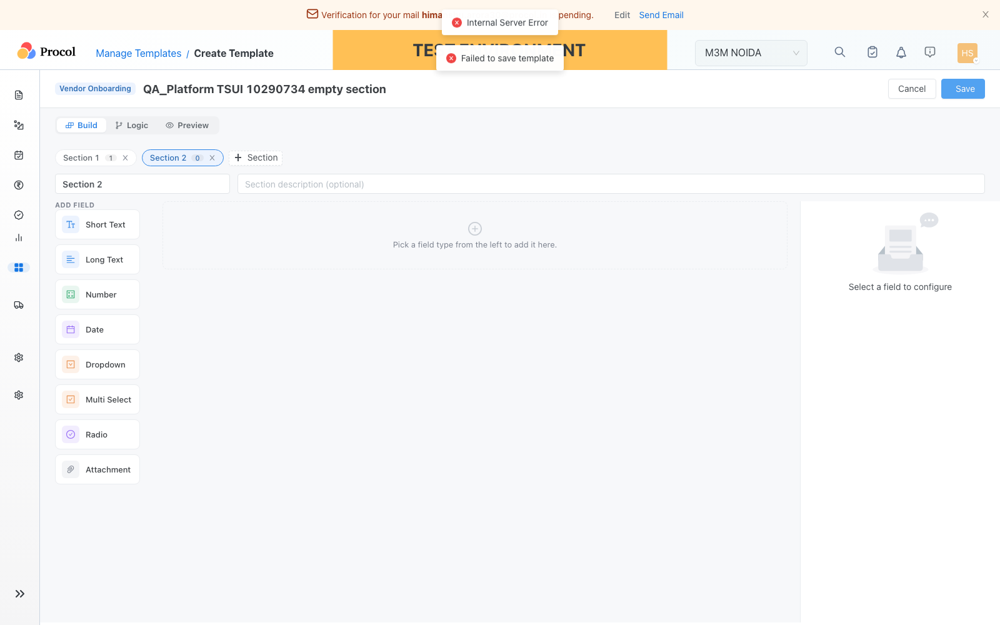</a><details><summary>API evidence</summary><pre>POST /templates (section 2 has no fields) → HTTP 500 in 387 ms<br>  reply: {&quot;status&quot;:500,&quot;error&quot;:&quot;Internal Server Error&quot;}<br>POST again (same body) → HTTP 500 in 311 ms<br>  reply: {&quot;status&quot;:500,&quot;error&quot;:&quot;Internal Server Error&quot;}</pre></details></article><article class="bug"><header><span class="bid">TSB-02</span><span class="sev s-high">High</span><b>A blank section name makes Save fail with &#x27;Internal Server Error&#x27;</b><span class="cases">TS_020</span></header><dl><dt>Steps</dt><dd>New Template → Vendor Onboarding. Name the template, add one field, clear the section name box (&#x27;Section 1&#x27;). Click Save.</dd><dt>Expected</dt><dd>&#x27;Section name is required&#x27; (studio) or a clear 422 from the server.</dd><dt>Actual</dt><dd>The studio sends it; the server crashes (HTTP 500: the form check raises InvalidFormDataError, which is not rescued). The user sees &#x27;Internal Server Error&#x27; + &#x27;Failed to save template&#x27;.</dd></dl><a href="shots/TS_020.png" target="_blank">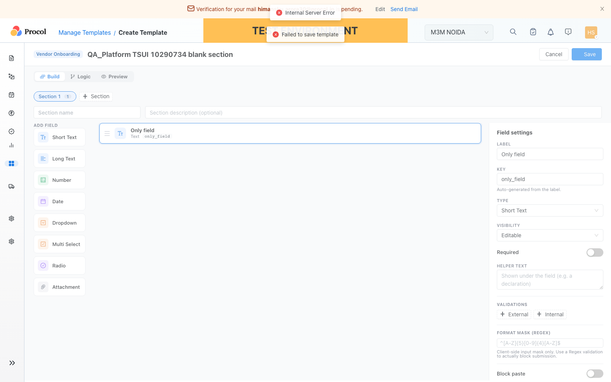</a><details><summary>API evidence</summary><pre>POST /templates (section name &#x27;&#x27;) → HTTP 500 in 299 ms<br>  reply: {&quot;status&quot;:500,&quot;error&quot;:&quot;Internal Server Error&quot;}</pre></details></article><article class="bug"><header><span class="bid">TSB-03</span><span class="sev s-high">High</span><b>&#x27;Generate with AI&#x27; never works — the AI endpoint does not exist on this backend</b><span class="cases">TS_099, TS_100</span></header><dl><dt>Steps</dt><dd>New Template → on the Vendor Onboarding card click &#x27;Generate with AI&#x27; → upload any valid PDF / JPG / Excel under 10 MB.</dd><dt>Expected</dt><dd>&#x27;AI is reading your form…&#x27;, then the editor opens with a drafted template.</dd><dt>Actual</dt><dd>The studio posts to /ask_ai_chats/vendor_onboarding_template_draft and the backend behind console.ag-ri.in answers 404 &#x27;Route you are looking for doesn&#x27;t exists&#x27;. The user sees &#x27;Could not reach the AI service. Please try again.&#x27; for every file.</dd></dl><a href="shots/TS_099.png" target="_blank">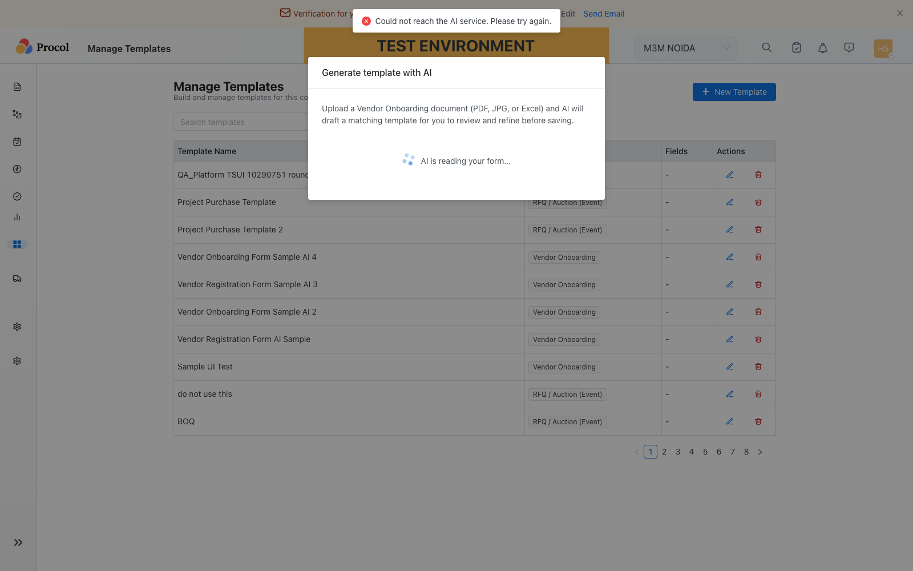</a><details><summary>API evidence</summary><pre>POST /ask_ai_chats/vendor_onboarding_template_draft → HTTP 404 in 281 ms<br>  reply: Route you are looking for doesn&#x27;t exists</pre></details></article><article class="bug"><header><span class="bid">TSB-04</span><span class="sev s-high">High</span><b>Bank-account validation can be saved without an IFSC field</b><span class="cases">TS_039, TS_039B</span></header><dl><dt>Steps</dt><dd>Vendor Onboarding editor → Short Text &#x27;Account number&#x27; → Validations → + External → Bank Account. Leave the &#x27;ifsc&#x27; row empty. Save.</dd><dt>Expected</dt><dd>Save is refused until both inputs (account number and IFSC) point at a field.</dd><dt>Actual</dt><dd>&#x27;Template created successfully&#x27;. The stored rule is &#x27;validation_type=bank#bank_account_no={{account_number}}&amp;ifsc={{}}&#x27; — on the vendor form the bank check would run with no IFSC. The backend also accepts it.</dd></dl><a href="shots/TS_039.png" target="_blank"></a><details><summary>API evidence</summary><pre>POST (ifsc={{}}) → HTTP 200 in 1396 ms<br>  reply: {&quot;uuid&quot;:&quot;Tlpja2Q=&quot;,&quot;name&quot;:&quot;QA_Platform TS 10290717 VO bank no ifsc&quot;,&quot;template_for&quot;:[&quot;rfi&quot;,&quot;vendor_onboarding&quot;],&quot;template_type&quot;:&quot;custom&quot;,&quot;user_uuid&quot;:&quot;WGtaTg==&quot;,&quot;forms&quot;:[{&quot;order&quot;:1,&quot;name&quot;:&quot;Section 1&quot;,&quot;description&quot;:&quot;&quot;,&quot;config&quot;:{&quot;type&quot;:&quot;form&quot;},&quot;page_headers&quot;:[],&quot;page_response_headers&quot;:[{&quot;key_attribute&quot;:&quot;acc&quot;,&quot;name&quot;:&quot;Account&quot;,&quot;description&quot;:&quot;&quot;,&quot;input_type&quot;:&quot;string&quot;,&quot;widget_type&quot;:&quot;default&quot;,&quot;configuration&quot;:{&quot;field_type&quot;:&quot;participant&quot;,&quot;is_required&quot;:false,&quot;mode_type&quot;:&quot;write&quot;},&quot;validations&quot;:[{&quot;type&quot;:&quot;external&quot;,&quot;validation_type&quot;:&quot;validation_type=bank#bank_account_no={{acc}}&amp;ifsc={{}}&quot;}]}],&quot;evaluators&quot;:[]}],&quot;configurations&quot;:{},&quot;mapped_widgets&quot;:[],&quot;global_mapped_widgets&quot;:[],&quot;order_configs&quot;:[],&quot;updated_at&quot;</pre></details></article><article class="bug"><header><span class="bid">TSB-05</span><span class="sev s-medium">Medium</span><b>The backend accepts two fields with the same key in one template</b><span class="cases">TS_029</span></header><dl><dt>Steps</dt><dd>POST /templates (vendor onboarding) with two fields both keyed &#x27;pan_no&#x27; (Postman / any caller other than the studio).</dd><dt>Expected</dt><dd>422 — keys must be unique, as the studio enforces (&#x27;Duplicate field key: pan_no&#x27;).</dd><dt>Actual</dt><dd>HTTP 200, saved. Only the studio&#x27;s own check prevents it; any other caller can save a form whose answers overwrite each other.</dd></dl><a href="shots/TS_029.png" target="_blank">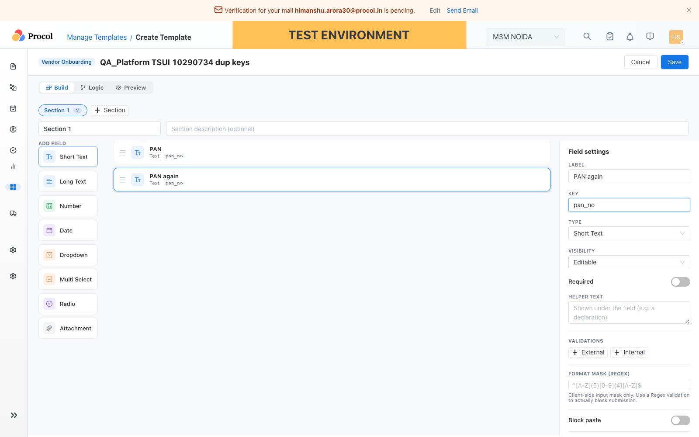</a><details><summary>API evidence</summary><pre>POST (two fields keyed pan_no) → HTTP 200 in 467 ms<br>  reply: {&quot;uuid&quot;:&quot;cGRja2Q=&quot;,&quot;name&quot;:&quot;QA_Platform TS 10290717 VO dup keys&quot;,&quot;template_for&quot;:[&quot;rfi&quot;,&quot;vendor_onboarding&quot;],&quot;template_type&quot;:&quot;custom&quot;,&quot;user_uuid&quot;:&quot;WGtaTg==&quot;,&quot;forms&quot;:[{&quot;order&quot;:1,&quot;name&quot;:&quot;Section 1&quot;,&quot;description&quot;:&quot;&quot;,&quot;config&quot;:{&quot;type&quot;:&quot;form&quot;},&quot;page_headers&quot;:[],&quot;page_response_headers&quot;:[{&quot;key_attribute&quot;:&quot;pan_no&quot;,&quot;name&quot;:&quot;PAN&quot;,&quot;description&quot;:&quot;&quot;,&quot;input_type&quot;:&quot;string&quot;,&quot;widget_type&quot;:&quot;default&quot;,&quot;configuration&quot;:{&quot;field_type&quot;:&quot;participant&quot;,&quot;is_required&quot;:false,&quot;mode_type&quot;:&quot;write&quot;}},{&quot;key_attribute&quot;:&quot;pan_no&quot;,&quot;name&quot;:&quot;PAN again&quot;,&quot;description&quot;:&quot;&quot;,&quot;input_type&quot;:&quot;string&quot;,&quot;widget_type&quot;:&quot;default&quot;,&quot;configuration&quot;:{&quot;field_type&quot;:&quot;participant&quot;,&quot;is_required&quot;:false,&quot;mode_type&quot;:&quot;write&quot;}}],&quot;evaluators&quot;:[]}],&quot;configurations&quot;:{},</pre></details></article><article class="bug"><header><span class="bid">TSB-06</span><span class="sev s-medium">Medium</span><b>An unknown template type crashes the server</b><span class="cases">TS_A01</span></header><dl><dt>Steps</dt><dd>POST /templates with template_for [&#x27;banana&#x27;].</dd><dt>Expected</dt><dd>422 &#x27;invalid template type&#x27;.</dd><dt>Actual</dt><dd>HTTP 500 Internal Server Error.</dd></dl><details><summary>API evidence</summary><pre>POST (template_for banana) → HTTP 500 in 266 ms<br>  reply: {&quot;status&quot;:500,&quot;error&quot;:&quot;Internal Server Error&quot;}</pre></details></article><article class="bug"><header><span class="bid">TSB-07</span><span class="sev s-medium">Medium</span><b>&#x27;forms&#x27; sent as an object instead of a list crashes the server</b><span class="cases">TS_A02</span></header><dl><dt>Steps</dt><dd>POST /templates with forms: { order: 1 } (an object).</dd><dt>Expected</dt><dd>422 &#x27;Invalid Form&#x27;.</dd><dt>Actual</dt><dd>HTTP 500 Internal Server Error.</dd></dl><details><summary>API evidence</summary><pre>POST (forms: {...}) → HTTP 500 in 283 ms<br>  reply: {&quot;status&quot;:500,&quot;error&quot;:&quot;Internal Server Error&quot;}</pre></details></article><article class="bug"><header><span class="bid">TSB-08</span><span class="sev s-low">Low</span><b>The backend saves a template with an empty name or only spaces</b><span class="cases">TS_079B</span></header><dl><dt>Steps</dt><dd>POST /templates with name &#x27;&#x27; and with name &#x27;   &#x27;.</dd><dt>Expected</dt><dd>422 — the studio itself requires a name (&#x27;Template name is required&#x27;).</dd><dt>Actual</dt><dd>HTTP 200 both times; nameless templates would show as blank rows in Manage Templates.</dd></dl><details><summary>API evidence</summary><pre>POST (name &quot;&quot;) → HTTP 200 in 738 ms<br>  reply: {&quot;uuid&quot;:&quot;WE5ja2Q=&quot;,&quot;name&quot;:&quot;&quot;}<br>POST (name &quot;   &quot;) → HTTP 200 in 387 ms<br>  reply: {&quot;uuid&quot;:&quot;WFFja2Q=&quot;,&quot;name&quot;:&quot;   &quot;}</pre></details></article><article class="bug"><header><span class="bid">TSB-09</span><span class="sev s-low">Low</span><b>A raw Ruby error text is shown to the caller</b><span class="cases">TS_A04</span></header><dl><dt>Steps</dt><dd>POST /templates for a buyer form without widgets.inline_components.</dd><dt>Expected</dt><dd>A readable 422 message.</dd><dt>Actual</dt><dd>422 with the message &#x27;no implicit conversion of nil into Array&#x27; (internal error text).</dd></dl><details><summary>API evidence</summary><pre>POST (widgets without inline_components) → HTTP 422 in 275 ms<br>  reply: {&quot;error&quot;:{&quot;code&quot;:8,&quot;message&quot;:&quot;no implicit conversion of nil into Array&quot;}}</pre></details></article></div></section>
<section><h2>Observations for product (15)</h2><p class="lead">Not bugs until product decides — what the app does today where the case left the rule open.</p><ul class="obs"><li><b>TS_005 · Fields column shows a count for buyer forms but &#x27;-&#x27; for vendor onboarding templates</b><br><span class="sub">[UI] Record — • Fields column on the first page: Project Purchase Template → &#x27;-&#x27;; Project Purchase Template 2 → &#x27;-&#x27;; Vendor Onboarding Form Sampl → &#x27;-&#x27;; Vendor Registration Form Sam → &#x27;-&#x27;; Vendor Onboarding Form Sampl → &#x27;-&#x27;; Vendor Registration Form AI  → &#x27;-&#x27; ✔ every row shows &#x27;-&#x27; in Fields (the list reply carries no forms / widgets, so the count is never shown) • product to decide what Fields should show; as built the column is always &#x27;-&#x27; for these templates • 6 vendor-onboarding rows on page 1</span></li><li><b>TS_015 · Cancel leaves without saving (no draft is kept)</b><br><span class="sub">[UI] Record — ✔ Cancel returns to the list ✔ nothing was saved (no POST /templates) • no &#x27;unsaved changes&#x27; warning is shown before throwing the two fields away — product to confirm</span></li><li><b>TS_017 · The last section cannot be deleted; others can</b><br><span class="sub">[UI] Record — ✔ with one section there is no × on its tab ✔ with two sections each tab has an × ✔ × removed Section 2 at once • no confirmation is asked although the section held a field — its fields are gone with it</span></li><li><b>TS_029 · Duplicate keys typed by hand block Save</b><br><span class="sub">[API] Record — ✘ backend ACCEPTS duplicate keys (200) — only the studio blocks them (&#x27;Duplicate field key: pan_no&#x27;)<br>[UI] Pass — ✔ &#x27;Duplicate field key: pan_no&#x27;</span></li><li><b>TS_031 · Key with spaces or capitals typed by hand</b><br><span class="sub">[API] Record — ✔ backend accepts the key as typed (200); a {{PAN Number}} reference in a URL or validation would then never resolve — product to decide whether keys must be snake_case<br>[UI] Record — • saved (200, &#x27;Template created successfully&#x27;) with key &#x27;PAN Number&#x27; — not cleaned to snake_case; a {{PAN Number}} reference would never resolve</span></li><li><b>TS_032 · Changing the Type keeps label/key and shows the right settings</b><br><span class="sub">[UI] Record — ✔ label &#x27;Choice&#x27; and key &#x27;choice&#x27; survive every type change • Short Text: Validations, Format mask (regex), Prefill on load, Autofill after validation, , Block paste, , Write back to a record,  • Long Text: Validations, Format mask (regex), Prefill on load, Autofill after validation, , Write back to a record,  • Number: Validations, Format mask (regex), Prefill on load, Autofill after validation, , Block paste, , Write back to a record,  • Date: Validations, Prefill on load, Autofill after validation, , Write back to a record,  • Dropdown: Options, Data source, Validations, Prefi</span></li><li><b>TS_033 · Visibility: Editable / Read-only / Hidden</b><br><span class="sub">[API] Pass — ✔ iso_certificate.mode_type=hidden, pan.mode_type=write<br>[UI] Record — ✔ Visibility choices: Editable, Read-only, Hidden ✔ preview shows: Editable one, Read only one (hidden field not shown) ✘ the read-only field in Preview is still typeable (TS_077)</span></li><li><b>TS_036 · Format mask (regex) is only a typing mask, not a check</b><br><span class="sub">[API] Pass — ✔ pan.regex=^[A-Z]{5}[0-9]{4}[A-Z]$<br>[UI] Record — ✔ hint &#x27;Client-side input mask only. Use a Regex validation to actually block submission.&#x27; • Preview accepts &#x27;abc123&#x27; — the mask is not applied in the studio preview</span></li><li><b>TS_050 · Option with empty label</b><br><span class="sub">[API] Record — ✔ accepted (200); the vendor would see an empty choice<br>[UI] Record — • preview choices: rhb2Gm | Yes — an empty option is allowed and shows its id instead of a label</span></li><li><b>TS_054 · Cascade from a parent field</b><br><span class="sub">[API] Pass — ✔ state.dropdown_data=/widget_data_mapping?type=state&amp;parent_key={{country}}<br>[UI] Record — ✔ URL now &#x27;/v1/states?parent_key={{country}}&#x27; ✘ picking the parent again → &#x27;/v1/states?parent_key={{country}}&amp;parent_key={{country}}&#x27; • each pick appends another parent_key; the picker resets to empty, so nothing shows which parent is already set</span></li><li><b>TS_068 · A rule with no controller or no target is ignored on save</b><br><span class="sub">[UI] Record — ✔ saved (200) — &#x27;Template created successfully&#x27; • 2 rules on screen, 1 sent — the rule with no controlling field was dropped without a word</span></li><li><b>TS_072 · Rule on a text field with &#x27;contains&#x27;</b><br><span class="sub">[UI] Record — ✔ &#x27;ABC Pvt Ltd&#x27; → CIN* • &#x27;abc pvt ltd&#x27; → CIN stays optional (plain substring match, case-sensitive)</span></li><li><b>TS_077 · Read-only fields in preview</b><br><span class="sub">[UI] Record — checked inside TS_033: ✘ the read-only field in Preview is still typeable (TS_077)</span></li><li><b>TS_114 · Browser refresh in the middle of building</b><br><span class="sub">[UI] Record — • after F5: name &#x27;&#x27;, 0 fields — work is lost, no draft, no warning before leaving</span></li><li><b>TS_075B · API: a rule pointing at a field that does not exist</b><br><span class="sub">[API] Record — ✘ backend accepts a rule whose target field does not exist (200) — the studio blocks it (&#x27;A rule or field references a missing field&#x27;)</span></li></ul></section>
<section><h2>How it was run</h2><ul class="tight">
<li><b>Screen:</b> Chromium (Playwright) signed in on console.ag-ri.in with the session provided, company M3M NOIDA; Admin Controls → Manage Templates, then every case by clicking as a user would. A screenshot per case.</li>
<li><b>API:</b> the same requests the studio sends (POST/PATCH/DELETE /templates, data sources, AI draft), each saved template read back field by field.</li>
<li><b>Record</b> = the app did something the case leaves to product (for example: no confirmation before deleting a section). <b>Not run</b> = needs something the session could not provide (a vendor filling the form on a live onboarding event, a read-only user, a v3 company).</li>
</ul></section>
<details class="mod"><summary><span>A. Opening Manage Templates and the list</span><span class="cnt">11 cases · 1 Record · 8 Pass · 2 Not run</span></summary><div class="tw"><table><thead><tr><th>ID</th><th>Case</th><th>Result</th><th>What happened</th><th>Screens</th></tr></thead><tbody><tr class="row-pass"><td class="id">TS_001<div class="lay">UI</div></td><td><b>Manage Templates opens from the admin console</b><div class="sub">Open the admin console (Controls page) and click the &#x27;Manage Templates&#x27; card.</div><div class="exp"><b>Expected:</b> Positive: The &#x27;Manage Templates&#x27; page opens at /template-studio with the heading &#x27;Manage Templates — Build and manage templates for this company&#x27;, a search box, a type filter (&#x27;All types&#x27;) and a &#x27;New Template&#x27; button.<br>Negative: A user without template:read_record cannot open /template-studio (route is permission-gated); the card is in the console list only.</div></td><td><span class="v v-pass">Pass</span></td><td class="act">[UI] Pass — ✔ signed in on https://console.ag-ri.in/orders (the console&#x27;s Events page) as the given session ✔ Admin Controls shows the card &#x27;Manage Templates — Create, edit and delete templates (buyer forms, PO, RFP)&#x27; ✔ clicking it opens /template-studio ✔ heading &#x27;Manage Templates — Build and manage templates for this company.&#x27; ✔ a &#x27;Search templates&#x27; box ✔ a type filter showing &#x27;All types&#x27; ✔ a blue &#x27;New Template&#x27; button • the left menu has no own entry for Manage Templates (sidebar hides the template-studio routes) — Admin Controls is the way in</td><td class="th"><a href="shots/TS_001-controls.png" target="_blank">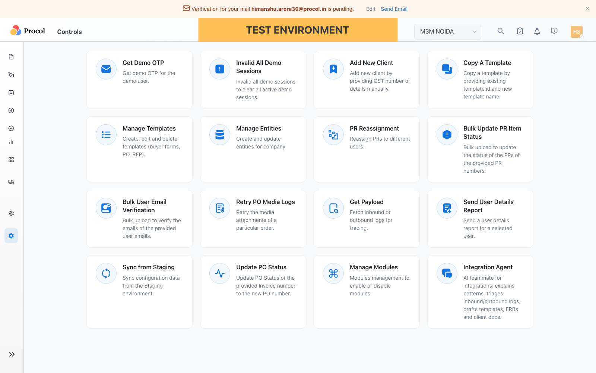</a></td></tr><tr class="row-pass"><td class="id">TS_002<div class="lay">API+UI</div></td><td><b>List shows only the template types the studio manages</b><div class="sub">Check which templates appear in the list and what the Type column says.</div><div class="exp"><b>Expected:</b> Only templates whose template_for matches a studio type are listed: &#x27;Vendor Onboarding&#x27;, &#x27;Vendor Onboarding — Buyer Form&#x27;, &#x27;Purchase Order&#x27;, &#x27;RFQ / Auction (Event)&#x27;. Other kinds (BOQ, intake, site visit…) do not appear. The Type column shows the matching label as a tag.</div></td><td><span class="v v-pass">Pass</span></td><td class="act">[API] Pass — ✔ GET /templates answers 200 with 124 templates • template_for values present in this company: boq, contract, document, intake, market_place, nfa_report, p2p_po_line_item, p2p_purchase_order, p2p_service_po_line_item, p2p_service_purchase_order, po, rfi, summary_view, trade, vendor_onboarding, vendor_onboarding_buyer_form — the studio lists only vendor_onboarding, vendor_onboarding_buyer_form, po and trade; the rest are hidden by the list filter<br>[UI] Pass — ✔ type tags seen across 8 pages: RFQ / Auction (Event), Vendor Onboarding, Purchase Order, Vendor Onboarding — Buyer Form • the company also holds BOQ, contract, intake, document, summary-view and P2P templates (API list) — none of them is listed here, as designed<details><summary>API evidence</summary><pre>GET /templates → HTTP 200 in 610 ms<br>  reply: {&quot;saved&quot;:116,&quot;default&quot;:8}</pre></details></td><td class="th"><a href="shots/TS_002.png" target="_blank">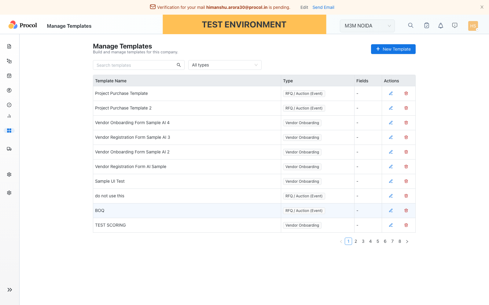</a></td></tr><tr class="row-pass"><td class="id">TS_003<div class="lay">UI</div></td><td><b>Search filters by template name (case-insensitive, partial)</b><div class="sub">Type part of a template name in &#x27;Search templates&#x27;.</div><div class="exp"><b>Expected:</b> Positive: Rows filter as you type; &#x27;scor&#x27; shows TEST SCORING; &#x27;SAMPLE ai&#x27; shows the Sample AI templates (case does not matter). Clearing the box (x) brings all rows back.<br>Negative: Search matches only the name, not the type or the fields.</div></td><td><span class="v v-pass">Pass</span></td><td class="act">[UI] Pass — ✔ &#x27;sample ai&#x27; → 3 rows, all containing it: Vendor Onboarding Form Sample AI 4 · Vendor Registration Form Sample AI 3 · Vendor Onboarding Form Sample AI 2 ✔ &#x27;SCORING&#x27; (capitals) → TEST SCORING · VMS scoring ✔ searching a TYPE word only matches names: 4 rows, all with it in the name ✔ clearing the box brings back the full first page</td><td class="th"><a href="shots/TS_003-search.png" target="_blank">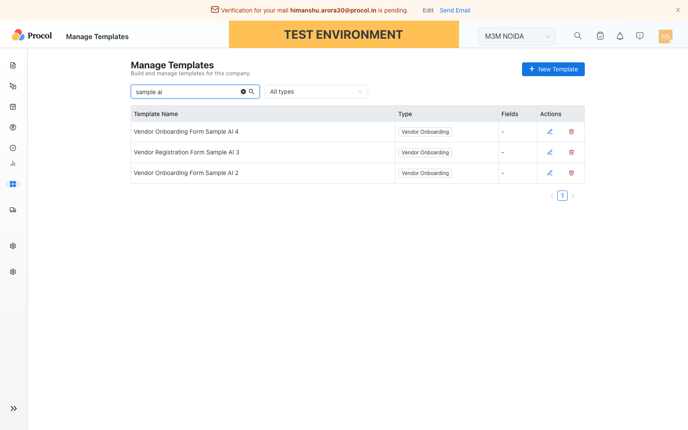</a></td></tr><tr class="row-pass"><td class="id">TS_004<div class="lay">UI</div></td><td><b>Type filter narrows the list to one template type</b><div class="sub">Change &#x27;All types&#x27; to &#x27;Vendor Onboarding&#x27;, then to &#x27;Vendor Onboarding — Buyer Form&#x27;.</div><div class="exp"><b>Expected:</b> Only rows of the chosen type remain; search and filter work together (both must match). Filter options are exactly the four studio types.</div></td><td><span class="v v-pass">Pass</span></td><td class="act">[UI] Pass — ✔ filter choices: All types | Vendor Onboarding — Buyer Form | Purchase Order | RFQ / Auction (Event) | Vendor Onboarding ✔ &#x27;Vendor Onboarding&#x27; → 10 rows, all tagged &#x27;Vendor Onboarding&#x27; ✔ &#x27;Vendor Onboarding — Buyer Form&#x27; → 1 rows, all tagged &#x27;Vendor Onboarding — Buyer Form&#x27; • search &#x27;sample&#x27; together with the Buyer Form filter → 0 rows (both must match)</td><td class="th"><a href="shots/TS_004-vo.png" target="_blank">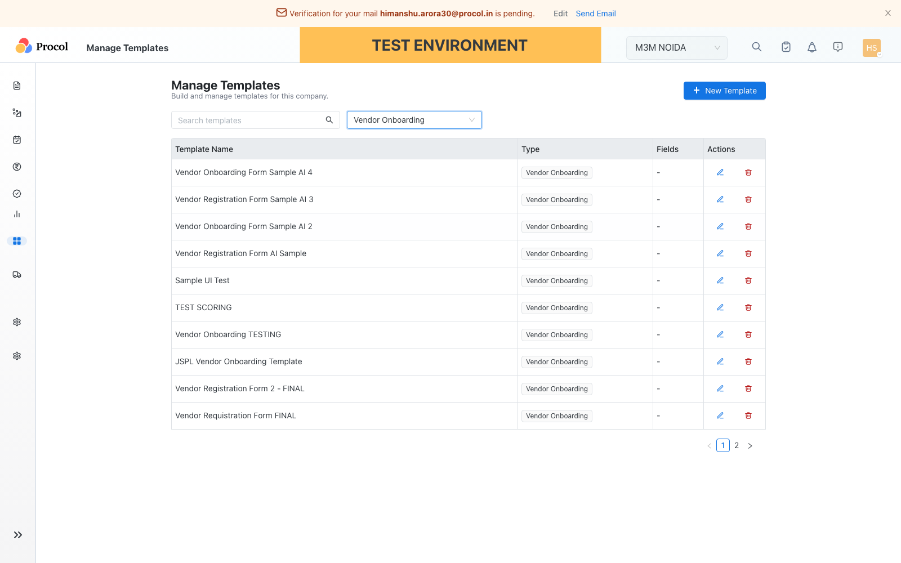</a><a href="shots/TS_004-bf.png" target="_blank">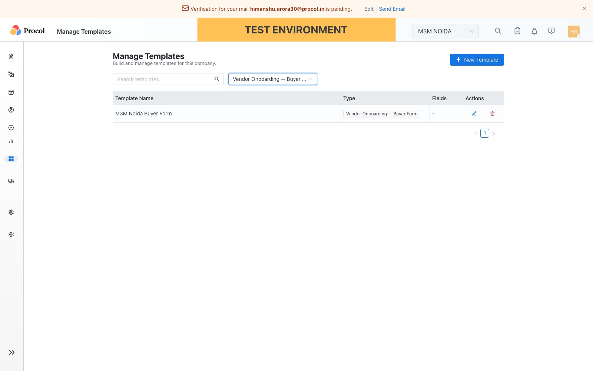</a></td></tr><tr class="row-record"><td class="id">TS_005<div class="lay">UI</div></td><td><b>Fields column shows a count for buyer forms but &#x27;-&#x27; for vendor onboarding templates</b><div class="sub">Look at the &#x27;Fields&#x27; column for a Buyer Form row and for a Vendor Onboarding row.</div><div class="exp"><b>Expected:</b> As coded today the column shows the buyer form&#x27;s field count only when the list reply carries the widgets; for Vendor Onboarding it shows the number of sections (forms) or &#x27;-&#x27; when the list reply has no forms. In the test screenshot every row shows &#x27;-&#x27;. Product to confirm what the column should show; report as a defect if a count is expected.</div></td><td><span class="v v-record">Record</span></td><td class="act">[UI] Record — • Fields column on the first page: Project Purchase Template → &#x27;-&#x27;; Project Purchase Template 2 → &#x27;-&#x27;; Vendor Onboarding Form Sampl → &#x27;-&#x27;; Vendor Registration Form Sam → &#x27;-&#x27;; Vendor Onboarding Form Sampl → &#x27;-&#x27;; Vendor Registration Form AI  → &#x27;-&#x27; ✔ every row shows &#x27;-&#x27; in Fields (the list reply carries no forms / widgets, so the count is never shown) • product to decide what Fields should show; as built the column is always &#x27;-&#x27; for these templates • 6 vendor-onboarding rows on page 1</td><td class="th"><a href="shots/TS_005.png" target="_blank">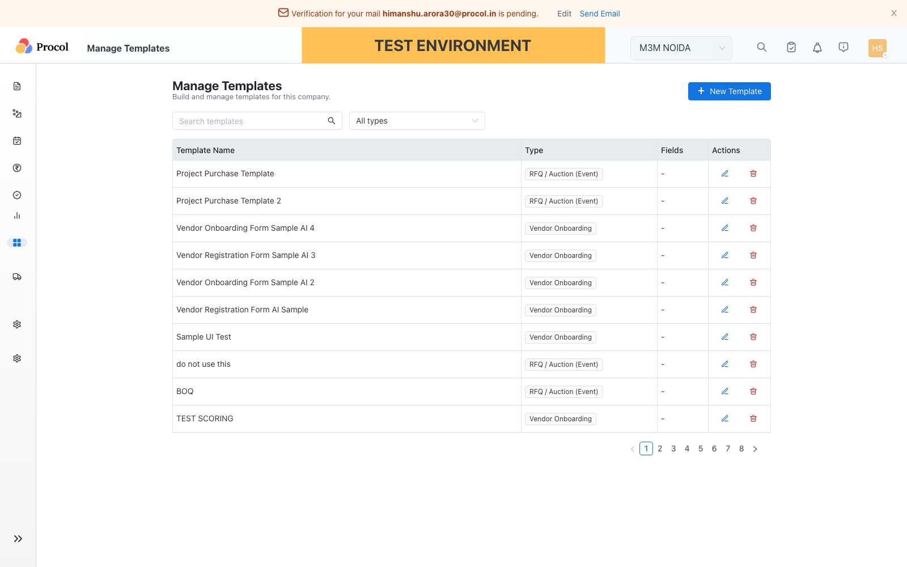</a></td></tr><tr class="row-pass"><td class="id">TS_006<div class="lay">UI</div></td><td><b>Clicking a row or the pencil opens the template in the editor</b><div class="sub">Click anywhere on a row; then click the pencil icon on another row.</div><div class="exp"><b>Expected:</b> Both open /template-studio/&lt;uuid&gt; with the template loaded in the right editor (sections, fields, logic for Vendor Onboarding; field list for Buyer Form). Breadcrumb: Manage Templates / Edit Template.</div></td><td><span class="v v-pass">Pass</span></td><td class="act">[UI] Pass — ✔ pencil opens /template-studio/Z05ja1E=; breadcrumb &#x27;Manage Templates / Edit Template&#x27; ✔ header shows &#x27;Edit Template&#x27;</td><td class="th"><a href="shots/TS_006.png" target="_blank">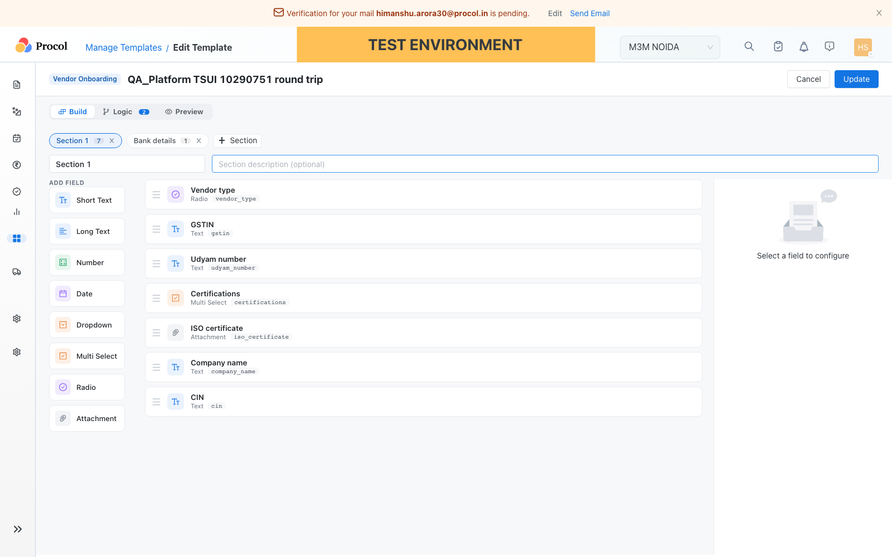</a></td></tr><tr class="row-pass"><td class="id">TS_007<div class="lay">API+UI</div></td><td><b>Delete asks for confirmation and then removes the template</b><div class="sub">Click the red bin icon, answer No; click it again, answer Yes.</div><div class="exp"><b>Expected:</b> Positive: &#x27;Delete this template?&#x27; Yes/No appears. No: nothing changes. Yes: toast &#x27;Template deleted successfully&#x27;, the row disappears (DELETE /templates/&lt;uuid&gt;). The row click must not open the editor while answering.<br>Negative: A user without template:update_record gets an error on Yes (the backend&#x27;s destroy uses the update permission).</div></td><td><span class="v v-pass">Pass</span></td><td class="act">[API] Pass — ✔ delete answers 200 ✔ the template no longer opens (422) ✔ and it is gone from the list<br>[UI] Pass — ✔ row &#x27;QA_Platform TSUI 10290751 round trip&#x27; ✔ pop-up &#x27;Delete this template?&#x27; Yes / No ✔ No: nothing changes and the editor did not open ✔ Yes: &#x27;Template deleted successfully&#x27; ✔ the row is gone<details><summary>API evidence</summary><pre>DELETE /templates/:uuid → HTTP 200 in 483 ms<br>  reply: {&quot;success&quot;:true}<br>GET after delete → HTTP 422 in 265 ms<br>  reply: {&quot;error&quot;:{&quot;code&quot;:4,&quot;message&quot;:&quot;Request not found&quot;}}</pre></details></td><td class="th"><a href="shots/TS_007-confirm.png" target="_blank">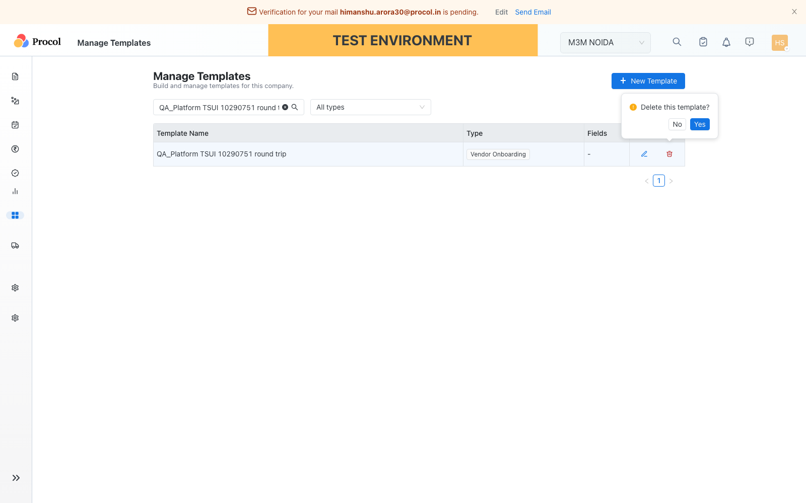</a><a href="shots/TS_007-after.png" target="_blank">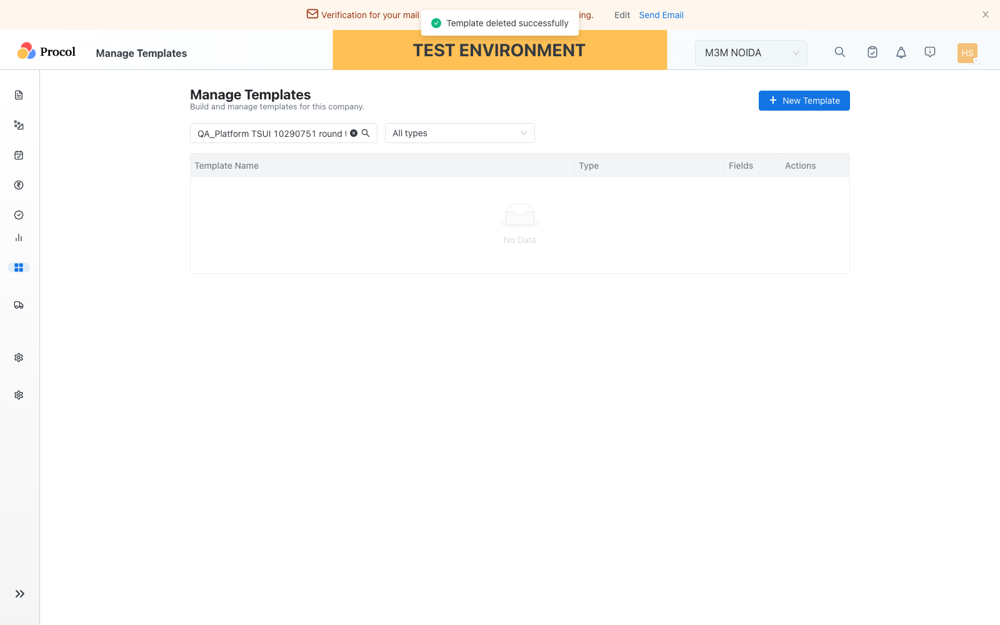</a></td></tr><tr class="row-not-run"><td class="id">TS_008<div class="lay">UI</div></td><td><b>Deleting a template that an onboarding event already uses</b><div class="sub">Delete a Vendor Onboarding template that is linked to a live onboarding event.</div><div class="exp"><b>Expected:</b> Expected by product: either refused with a clear message, or allowed with the event unaffected. The studio sends a plain DELETE; verify the backend answer (422 with its reason, or 200) and that the running event still opens. Record the actual behaviour.</div></td><td><span class="v v-not-run">Not run</span></td><td class="act">[UI] Not run — • would delete a real company template; not done.</td><td class="th"></td></tr><tr class="row-pass"><td class="id">TS_009<div class="lay">UI</div></td><td><b>Pagination of the list</b><div class="sub">Scroll to the bottom with more than 10 templates.</div><div class="exp"><b>Expected:</b> Ant Design pagination (10 per page) with page numbers and arrows; search/filter apply across all pages, not only the visible page.</div></td><td><span class="v v-pass">Pass</span></td><td class="act">[UI] Pass — ✔ 8 pages, 10 rows per page ✔ next page shows other templates (first row &#x27;TESTING&#x27;)</td><td class="th"><a href="shots/TS_009.png" target="_blank">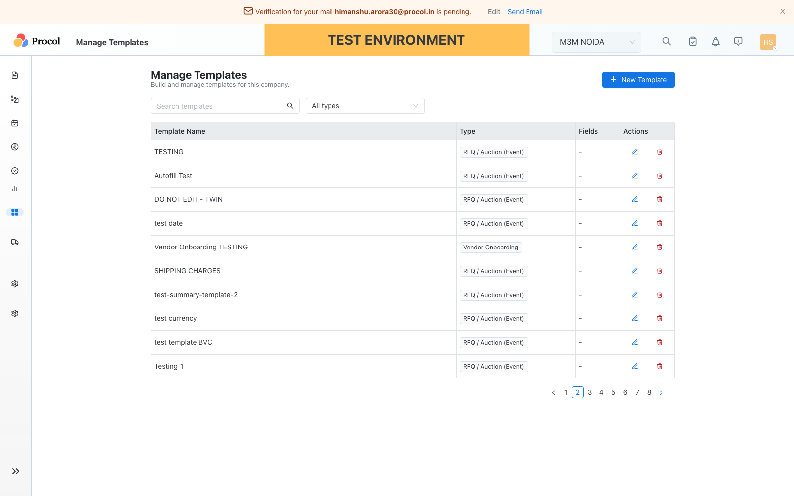</a></td></tr><tr class="row-not-run"><td class="id">TS_010<div class="lay">API+UI</div></td><td><b>A user with read-only template permission can look but not create or delete</b><div class="sub">Log in as a user with template:read_record but no create/update.</div><div class="exp"><b>Expected:</b> The list opens. &#x27;New Template&#x27; route (/template-studio/create) is permission-gated (template:create_record) and the edit route needs template:update_record; the backend also refuses POST/PATCH/DELETE /templates with 403 for that user. Report if the buttons are shown but fail only after clicking.</div></td><td><span class="v v-not-run">Not run</span></td><td class="act">[API] Not run — • the session given is a Procol employee / super admin; no read-only user was available.<br>[UI] Not run — • the given session is a Procol employee / super admin.</td><td class="th"></td></tr><tr class="row-pass"><td class="id">TS_A05<div class="lay">API</div></td><td><b>API: deleting the same template twice</b><div class="sub"></div><div class="exp"><b>Expected:</b> </div></td><td><span class="v v-pass">Pass</span></td><td class="act">[API] Pass — ✔ second delete refused cleanly (422 477 &quot;Template not found&quot;)<details><summary>API evidence</summary><pre>DELETE again → HTTP 422 in 337 ms<br>  reply: {&quot;error&quot;:{&quot;code&quot;:477,&quot;message&quot;:&quot;Template not found&quot;}}</pre></details></td><td class="th"></td></tr></tbody></table></div></details><details class="mod"><summary><span>B. &#x27;New Template&#x27; and the type picker</span><span class="cnt">5 cases · 1 Record · 4 Pass</span></summary><div class="tw"><table><thead><tr><th>ID</th><th>Case</th><th>Result</th><th>What happened</th><th>Screens</th></tr></thead><tbody><tr class="row-pass"><td class="id">TS_011<div class="lay">UI</div></td><td><b>Type picker lists the four types with descriptions</b><div class="sub">Click &#x27;New Template&#x27;.</div><div class="exp"><b>Expected:</b> Modal &#x27;Choose a template type&#x27; with four cards: Vendor Onboarding — Buyer Form (&#x27;Buyer-side fields collected during vendor onboarding.&#x27;), Purchase Order, RFQ / Auction (Event), Vendor Onboarding (&#x27;Multi-section onboarding form with validations, prefill and conditional logic.&#x27;) — the last one also shows a &#x27;Generate with AI&#x27; link. Closing (x) returns to the list.</div></td><td><span class="v v-pass">Pass</span></td><td class="act">[UI] Pass — ✔ modal &#x27;Choose a template type&#x27; ✔ card &#x27;Vendor Onboarding — Buyer Form&#x27; — &#x27;Buyer-side fields collected during vendor onboarding.&#x27; ✔ card &#x27;Purchase Order&#x27; — &#x27;Purchase order form with header and line-item fields.&#x27; ✔ card &#x27;RFQ / Auction (Event)&#x27; — &#x27;Event template with a quote sheet and global price sheet.&#x27; ✔ card &#x27;Vendor Onboarding&#x27; — &#x27;Multi-section onboarding form with validations, prefill and conditional logic.&#x27; ✔ the X closes it, back on the list</td><td class="th"><a href="shots/TS_011.png" target="_blank">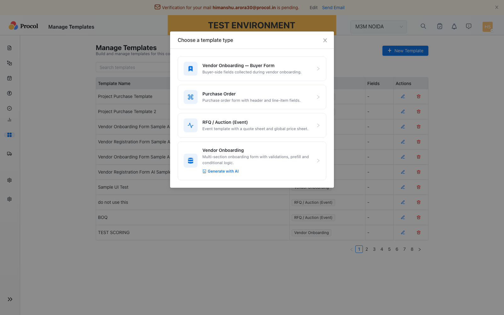</a></td></tr><tr class="row-pass"><td class="id">TS_012<div class="lay">UI</div></td><td><b>Choosing &#x27;Vendor Onboarding&#x27; opens an empty section-based editor</b><div class="sub">Click the Vendor Onboarding card.</div><div class="exp"><b>Expected:</b> URL /template-studio/create?type=vendor_onboarding. Header: tag &#x27;Vendor Onboarding&#x27;, name box &#x27;Untitled Template&#x27;, Cancel and Save. Tabs Build / Logic / Preview. One section tab &#x27;Section 1 (0)&#x27; with &#x27;+ Section&#x27;. Left rail &#x27;ADD FIELD&#x27; with exactly 8 types: Short Text, Long Text, Number, Date, Dropdown, Multi Select, Radio, Attachment. Centre: &#x27;Pick a field type from the left to add it here.&#x27; Right: &#x27;Select a field to configure&#x27;.</div></td><td><span class="v v-pass">Pass</span></td><td class="act">[UI] Pass — ✔ URL /template-studio/create?type=vendor_onboarding ✔ header tag &#x27;Vendor Onboarding&#x27; and the name box &#x27;Untitled Template&#x27; ✔ tabs Build · Logic · Preview ✔ one section tab: &#x27;Section 1 0&#x27; and a &#x27;+ Section&#x27; button ✔ ADD FIELD lists exactly: Short Text, Long Text, Number, Date, Dropdown, Multi Select, Radio, Attachment ✔ empty canvas &#x27;Pick a field type from the left to add it here.&#x27; and &#x27;Select a field to configure&#x27;</td><td class="th"><a href="shots/TS_012.png" target="_blank"></a></td></tr><tr class="row-pass"><td class="id">TS_013<div class="lay">UI</div></td><td><b>Choosing &#x27;Vendor Onboarding — Buyer Form&#x27; opens a field list pre-filled with the 13 standard buyer fields</b><div class="sub">Click the Buyer Form card.</div><div class="exp"><b>Expected:</b> URL ...?type=vendor_onboarding_buyer_form. Tabs Build / Preview only (no Logic, no sections). Palette: Text, Number, Date, Dropdown. The canvas already holds 13 fields in this order: OEM / NON OEM (dropdown), Payment Terms (dropdown, required), Email ID (Buyer), Alternate Email ID (Buyer), Vendor Code, Creation Date (date), Group (dropdown, required), Reconciliation GL Account (required), Region (dropdown), Vendor A/C Group (dropdown, required), Payment Method (dropdown), Confirmation Control (dropdown), Schema Group (dropdown).</div></td><td><span class="v v-pass">Pass</span></td><td class="act">[UI] Pass — ✔ URL /template-studio/create?type=vendor_onboarding_buyer_form ✔ tabs Build · Preview (no Logic, no sections) ✔ palette: Text, Number, Date, Dropdown ✔ 13 fields in order: OEM / NON OEM · Payment Terms · Email ID (Buyer) · Alternate Email ID (Buyer) · Vendor Code · Creation Date · Group · Reconciliation GL Account · Region · Vendor A/C Group · Payment Method · Confirmation Control · Schema Group ✔ marked required (*): Payment Terms, Group, Reconciliation GL Account, Vendor A/C Group</td><td class="th"><a href="shots/TS_013.png" target="_blank">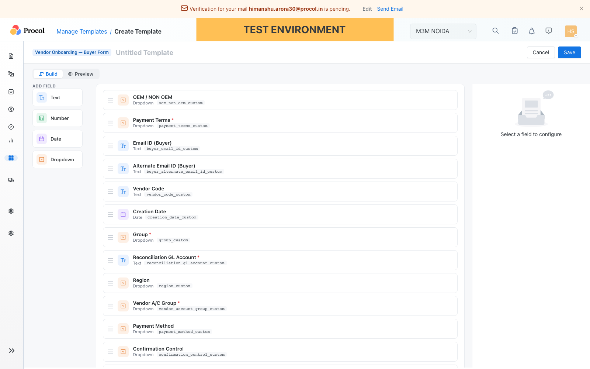</a></td></tr><tr class="row-pass"><td class="id">TS_014<div class="lay">UI</div></td><td><b>Unknown type in the URL goes back to the list</b><div class="sub">Open /template-studio/create?type=banana directly.</div><div class="exp"><b>Expected:</b> Error toast &#x27;Unknown template type&#x27; and redirect to /template-studio.</div></td><td><span class="v v-pass">Pass</span></td><td class="act">[UI] Pass — ✔ message: &#x27;Unknown template type&#x27; ✔ sent back to /template-studio</td><td class="th"><a href="shots/TS_014.png" target="_blank">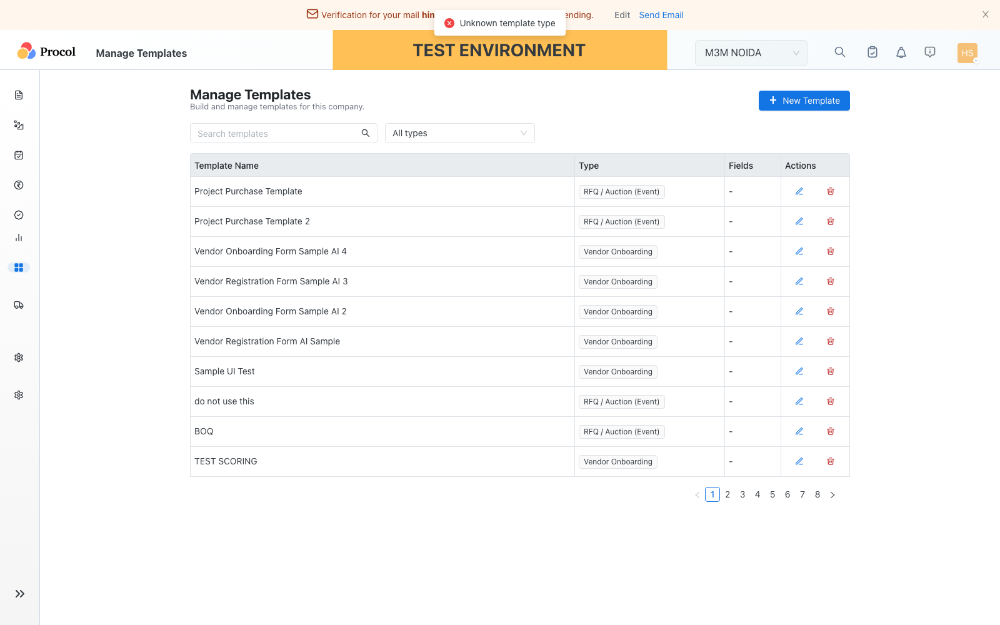</a></td></tr><tr class="row-record"><td class="id">TS_015<div class="lay">UI</div></td><td><b>Cancel leaves without saving (no draft is kept)</b><div class="sub">Add two fields, click Cancel; reopen New Template.</div><div class="exp"><b>Expected:</b> Back to the list; nothing was created (no POST /templates). The editor opens empty next time. No &#x27;unsaved changes&#x27; warning exists today — product to confirm whether one is wanted.</div></td><td><span class="v v-record">Record</span></td><td class="act">[UI] Record — ✔ Cancel returns to the list ✔ nothing was saved (no POST /templates) • no &#x27;unsaved changes&#x27; warning is shown before throwing the two fields away — product to confirm</td><td class="th"><a href="shots/TS_015.png" target="_blank"></a></td></tr></tbody></table></div></details><details class="mod" open><summary><span>C. Vendor Onboarding — sections</span><span class="cnt">5 cases · 2 Fail · 1 Record · 2 Pass</span></summary><div class="tw"><table><thead><tr><th>ID</th><th>Case</th><th>Result</th><th>What happened</th><th>Screens</th></tr></thead><tbody><tr class="row-pass"><td class="id">TS_016<div class="lay">API+UI</div></td><td><b>Add, rename and describe a section</b><div class="sub">Click &#x27;+ Section&#x27;; change the name and the description.</div><div class="exp"><b>Expected:</b> A new tab &#x27;Section 2 (0)&#x27; appears and becomes active. The two boxes under the tabs edit the active section&#x27;s name and description; the tab text follows the name. Saved as forms[].name / description with order 1,2,… </div></td><td><span class="v v-pass">Pass</span></td><td class="act">[API] Pass — ✔ sections: 1. Company details — &quot;Legal identity of the vendor&quot; | 2. Bank &amp; documents — &quot;&quot;<br>[UI] Pass — ✔ a second tab &#x27;Section 2 0&#x27; appears ✔ and becomes the active tab ✔ the tab follows the name: &#x27;Company details 0&#x27; ✔ switching tabs shows that section&#x27;s own name</td><td class="th"><a href="shots/TS_016.png" target="_blank"></a></td></tr><tr class="row-record"><td class="id">TS_017<div class="lay">UI</div></td><td><b>The last section cannot be deleted; others can</b><div class="sub">With one section, look for the x on its tab; add a second section and delete one.</div><div class="exp"><b>Expected:</b> With a single section no x is shown. With two or more, the x on a tab deletes that section with all its fields (no confirmation) and the previous tab becomes active. Logic rules that pointed at the deleted fields are left broken (see TS_075).</div></td><td><span class="v v-record">Record</span></td><td class="act">[UI] Record — ✔ with one section there is no × on its tab ✔ with two sections each tab has an × ✔ × removed Section 2 at once • no confirmation is asked although the section held a field — its fields are gone with it</td><td class="th"><a href="shots/TS_017-two.png" target="_blank">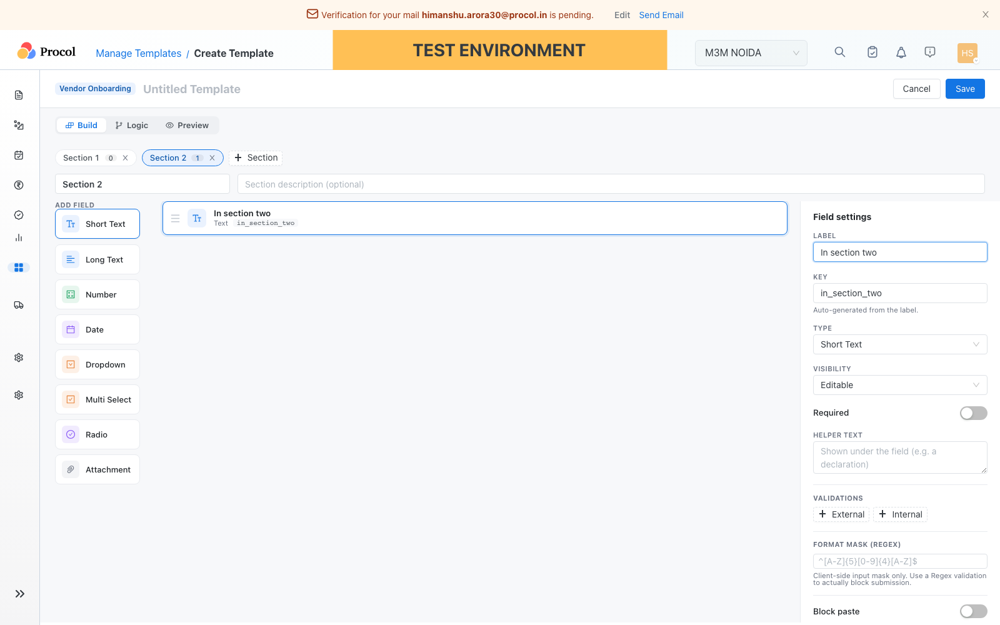</a><a href="shots/TS_017-after.png" target="_blank"></a></td></tr><tr class="row-pass"><td class="id">TS_018<div class="lay">UI</div></td><td><b>Fields belong to the active section; the tab shows the count</b><div class="sub">Add 2 fields in Section 1 and 3 in Section 2; switch tabs.</div><div class="exp"><b>Expected:</b> Each tab shows its own count (2 / 3) and its own fields; the selected field clears when switching.</div></td><td><span class="v v-pass">Pass</span></td><td class="act">[UI] Pass — ✔ tab counts: Section 1 2 / Section 2 3 ✔ Section 2 shows its own 3 fields ✔ Section 1 shows its 2 fields; the selection is cleared on switching</td><td class="th"><a href="shots/TS_018.png" target="_blank">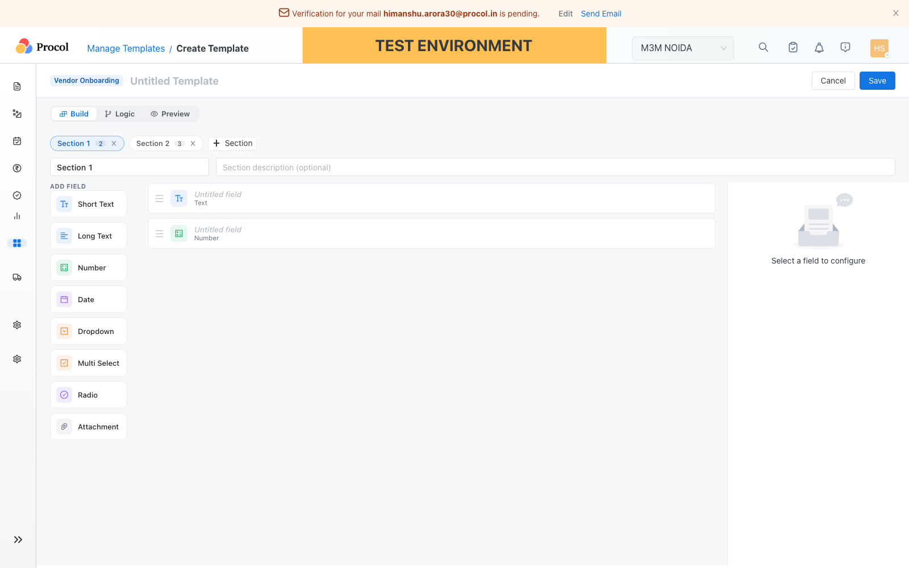</a></td></tr><tr class="row-fail"><td class="id">TS_019<div class="lay">API+UI</div></td><td><b>Saving with an empty extra section is refused by the backend</b><div class="sub">Section 1 with one valid field, Section 2 with no fields; Save.</div><div class="exp"><b>Expected:</b> The studio only checks &#x27;at least one field overall&#x27;, so it sends the request; the backend rejects a form whose field list is empty: 422 &#x27;Invalid Form&#x27; (error 792). Expected by product: the studio should say which section is empty before sending. Likely defect — record it.</div></td><td><span class="v v-fail">Fail</span></td><td class="act">[API] Fail — ✘ backend refuses with 500  &quot;Internal Server Error&quot; • repeated: 500 — reproducible • the studio&#x27;s own check only needs one field in the whole template, so it sends this and shows the backend&#x27;s &#x27;Invalid Form&#x27; — see the UI run for what the user sees<br>[UI] Fail — ✘ the studio SENDS it (POST 500) — message &#x27;Internal Server Error | Failed to save template&#x27;<details><summary>API evidence</summary><pre>POST /templates (section 2 has no fields) → HTTP 500 in 387 ms<br>  reply: {&quot;status&quot;:500,&quot;error&quot;:&quot;Internal Server Error&quot;}<br>POST again (same body) → HTTP 500 in 311 ms<br>  reply: {&quot;status&quot;:500,&quot;error&quot;:&quot;Internal Server Error&quot;}</pre></details></td><td class="th"><a href="shots/TS_019.png" target="_blank"></a></td></tr><tr class="row-fail"><td class="id">TS_020<div class="lay">API+UI</div></td><td><b>Section name blank</b><div class="sub">Clear the section name and Save.</div><div class="exp"><b>Expected:</b> Backend requires every form to have a name (&#x27;Invalid name in Forms&#x27; → 422 &#x27;Invalid Form&#x27;). The studio does not pre-check it. Expected: a clear message naming the section.</div></td><td><span class="v v-fail">Fail</span></td><td class="act">[API] Fail — ✘ refused: 500  &quot;Internal Server Error&quot;<br>[UI] Fail — ✘ the studio SENDS it (POST 500) — message &#x27;Internal Server Error | Failed to save template&#x27;<details><summary>API evidence</summary><pre>POST /templates (section name &#x27;&#x27;) → HTTP 500 in 299 ms<br>  reply: {&quot;status&quot;:500,&quot;error&quot;:&quot;Internal Server Error&quot;}</pre></details></td><td class="th"><a href="shots/TS_020.png" target="_blank"></a></td></tr></tbody></table></div></details><details class="mod"><summary><span>D. Vendor Onboarding — adding and arranging fields</span><span class="cnt">5 cases · 5 Pass</span></summary><div class="tw"><table><thead><tr><th>ID</th><th>Case</th><th>Result</th><th>What happened</th><th>Screens</th></tr></thead><tbody><tr class="row-pass"><td class="id">TS_021<div class="lay">UI</div></td><td><b>Each of the 8 field types can be added and shows the right sub-type</b><div class="sub">Click every type in the left rail once.</div><div class="exp"><b>Expected:</b> 8 cards appear, each &#x27;Untitled field&#x27; with its type label (Text, Long Text, Number, Date, Dropdown, Multi Select, Radio, Attachment); the newly added card is selected and its settings open on the right.</div></td><td><span class="v v-pass">Pass</span></td><td class="act">[UI] Pass — ✔ cards show: Text, Long Text, Number, Date, Dropdown, Multi Select, Radio, Attachment ✔ each reads &#x27;Untitled field&#x27; ✔ the last added card is selected and its settings are open</td><td class="th"><a href="shots/TS_021.png" target="_blank">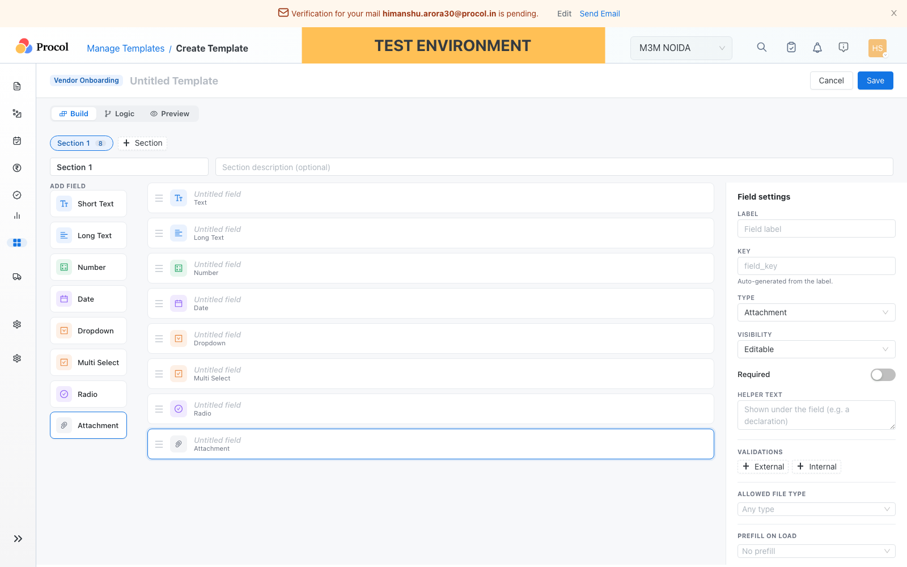</a></td></tr><tr class="row-pass"><td class="id">TS_022<div class="lay">UI</div></td><td><b>Reorder fields by dragging the handle</b><div class="sub">Drag the ≡ handle of the third field above the first.</div><div class="exp"><b>Expected:</b> Order changes on the canvas and in the preview; saved order follows the canvas (page_response_headers order).</div></td><td><span class="v v-pass">Pass</span></td><td class="act">[UI] Pass — ✔ order after dragging &#x27;Third&#x27; to the top: Third, Second, First ✔ Preview follows the new order</td><td class="th"><a href="shots/TS_022.png" target="_blank">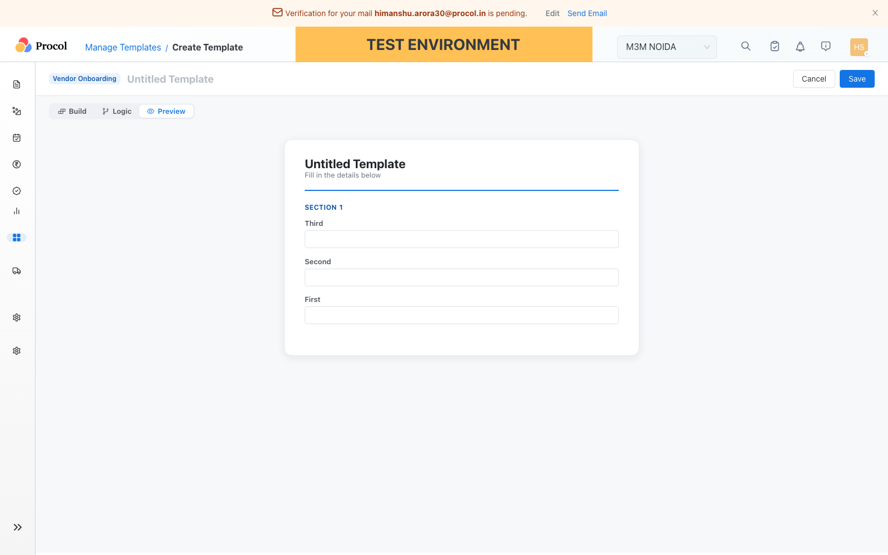</a></td></tr><tr class="row-pass"><td class="id">TS_023<div class="lay">UI</div></td><td><b>Delete a field that nothing refers to</b><div class="sub">Hover a field card, click its delete icon.</div><div class="exp"><b>Expected:</b> Removed immediately, no prompt; the settings panel returns to &#x27;Select a field to configure&#x27;.</div></td><td><span class="v v-pass">Pass</span></td><td class="act">[UI] Pass — ✔ removed at once, no prompt</td><td class="th"><a href="shots/TS_023.png" target="_blank">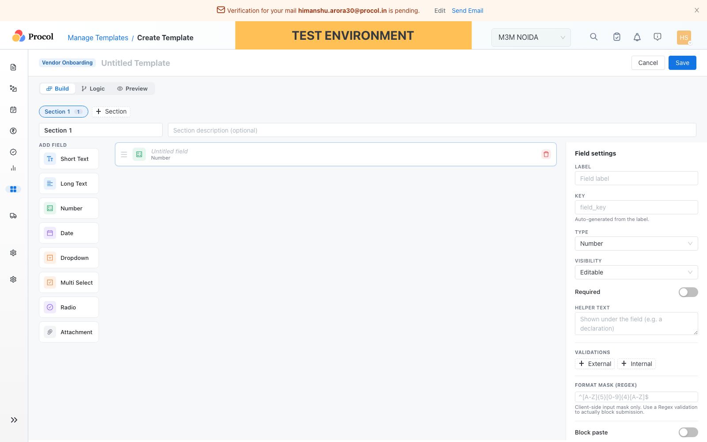</a></td></tr><tr class="row-pass"><td class="id">TS_024<div class="lay">UI</div></td><td><b>Delete a field that a rule or another field refers to shows a warning</b><div class="sub">Field &#x27;Vendor type&#x27; (radio) controls a logic rule; delete it.</div><div class="exp"><b>Expected:</b> Confirm box: &#x27;Delete &quot;Vendor type&quot;? 1 reference(s) point at this field (rule condition). Deleting it will leave those broken.&#x27; with a red &#x27;Delete anyway&#x27;. Cancel keeps the field. Delete anyway removes it; Save is then blocked with &#x27;A rule or field references a missing field: vendor_type&#x27; until the rule is fixed.</div></td><td><span class="v v-pass">Pass</span></td><td class="act">[UI] Pass — ✔ confirm: &#x27;Delete &quot;Vendor type&quot;? 1 reference(s) point at this field (rule condition). Deleting it will leave those broken. CancelDelete anyway&#x27; ✔ Cancel keeps the field ✔ Save refused (TS_075): &#x27;A rule or field references a missing field: vendor_type&#x27; ✔ after deleting the rule, Save goes through (POST 200)</td><td class="th"><a href="shots/TS_024-confirm.png" target="_blank">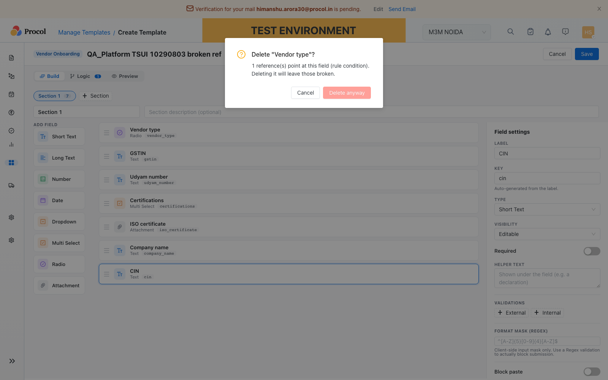</a><a href="shots/TS_024-after.png" target="_blank">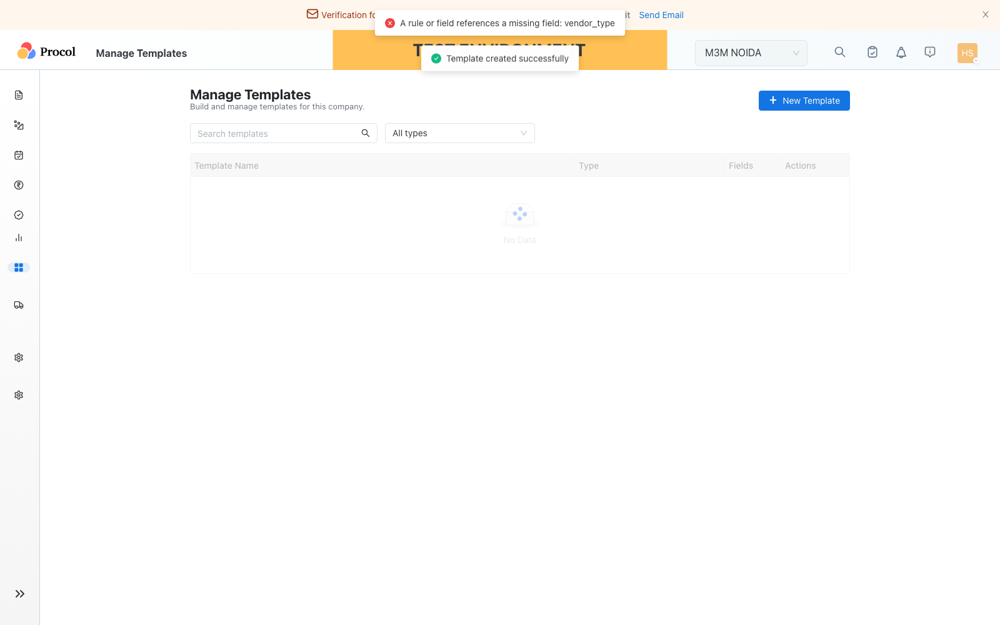</a></td></tr><tr class="row-pass"><td class="id">TS_025<div class="lay">UI</div></td><td><b>Selecting a field opens its settings; clicking another switches</b><div class="sub">Click field A then field B.</div><div class="exp"><b>Expected:</b> The right panel always shows the clicked field&#x27;s settings; edits apply to the selected field only.</div></td><td><span class="v v-pass">Pass</span></td><td class="act">[UI] Pass — ✔ clicking card 1 shows &#x27;Alpha&#x27; ✔ clicking card 2 shows &#x27;Beta&#x27; ✔ the cards keep their own labels</td><td class="th"><a href="shots/TS_025.png" target="_blank">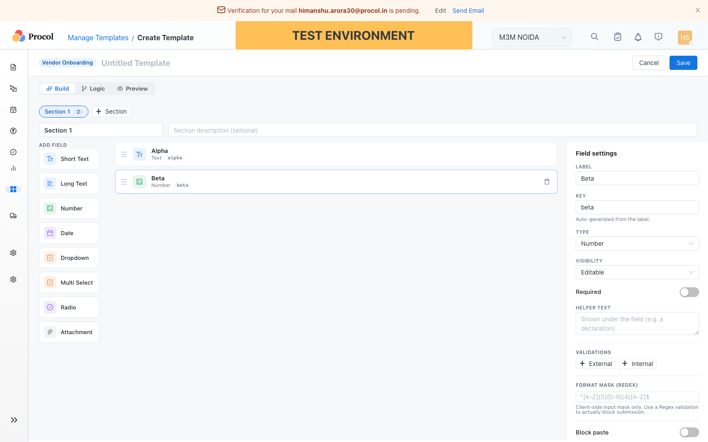</a></td></tr></tbody></table></div></details><details class="mod"><summary><span>E. Field settings (every type)</span><span class="cnt">10 cases · 4 Record · 6 Pass</span></summary><div class="tw"><table><thead><tr><th>ID</th><th>Case</th><th>Result</th><th>What happened</th><th>Screens</th></tr></thead><tbody><tr class="row-pass"><td class="id">TS_026<div class="lay">UI</div></td><td><b>Label drives the key automatically</b><div class="sub">Type a label.</div><div class="exp"><b>Expected:</b> Key becomes &#x27;gst_number_primary&#x27; (lower case, underscores, no symbols) with the hint &#x27;Auto-generated from the label.&#x27;</div></td><td><span class="v v-pass">Pass</span></td><td class="act">[UI] Pass — ✔ key &#x27;gst_number_primary&#x27; ✔ hint &#x27;Auto-generated from the label.&#x27;</td><td class="th"><a href="shots/TS_026.png" target="_blank">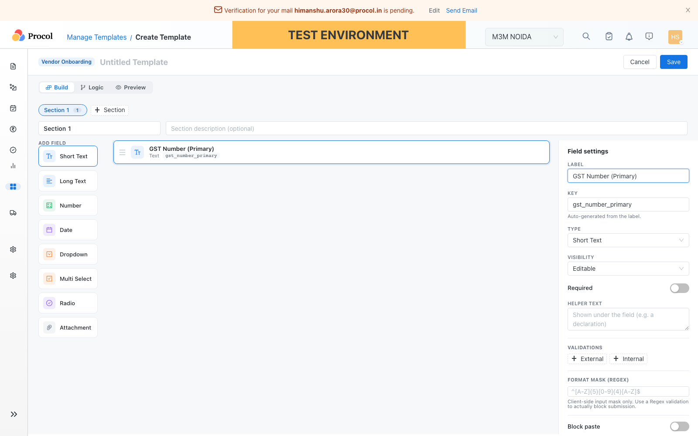</a></td></tr><tr class="row-pass"><td class="id">TS_027<div class="lay">UI</div></td><td><b>Two fields with the same label get different keys</b><div class="sub">Add two fields both labelled &#x27;Address&#x27;.</div><div class="exp"><b>Expected:</b> First key &#x27;address&#x27;, second &#x27;address_2&#x27; (then _3…). Save is possible.</div></td><td><span class="v v-pass">Pass</span></td><td class="act">[UI] Pass — ✔ keys: address, address_2, address_3</td><td class="th"><a href="shots/TS_027.png" target="_blank">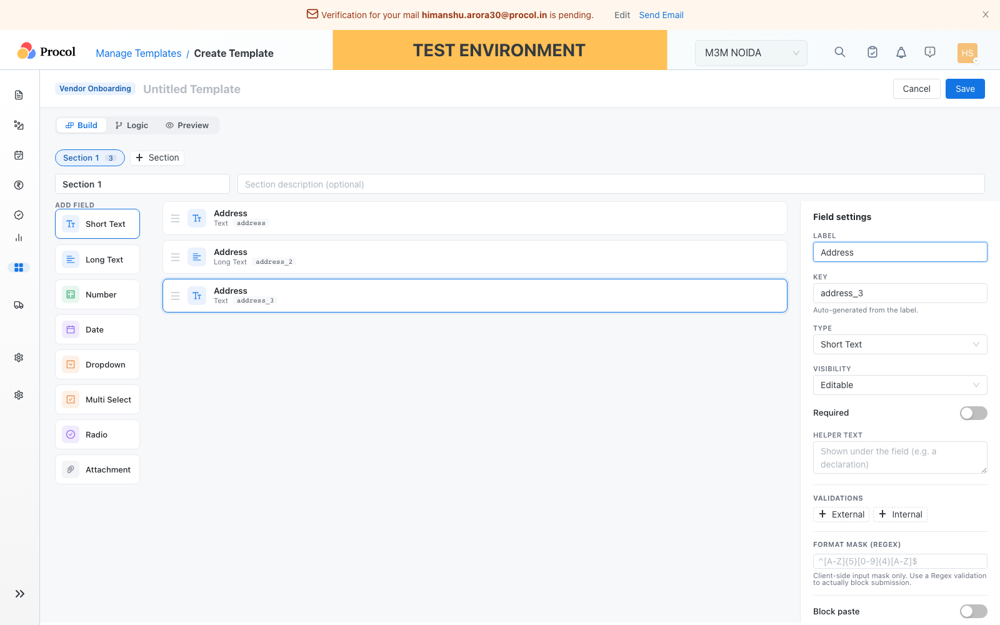</a></td></tr><tr class="row-pass"><td class="id">TS_028<div class="lay">UI</div></td><td><b>Editing the key by hand stops the auto-generation</b><div class="sub">Change the key to &#x27;gstin&#x27;, then change the label again.</div><div class="exp"><b>Expected:</b> The key stays &#x27;gstin&#x27; (hint disappears); later label edits no longer touch it.</div></td><td><span class="v v-pass">Pass</span></td><td class="act">[UI] Pass — ✔ key stays &#x27;gstin&#x27; after the label changed ✔ the &#x27;Auto-generated&#x27; hint is gone</td><td class="th"><a href="shots/TS_028.png" target="_blank">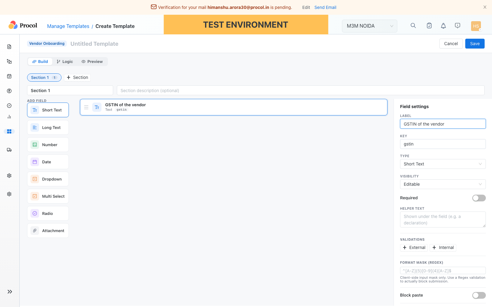</a></td></tr><tr class="row-record"><td class="id">TS_029<div class="lay">API+UI</div></td><td><b>Duplicate keys typed by hand block Save</b><div class="sub">Set two fields&#x27; keys to &#x27;pan_no&#x27; manually; Save.</div><div class="exp"><b>Expected:</b> Error &#x27;Duplicate field key: pan_no&#x27;; nothing is sent.</div></td><td><span class="v v-record">Record</span></td><td class="act">[API] Record — ✘ backend ACCEPTS duplicate keys (200) — only the studio blocks them (&#x27;Duplicate field key: pan_no&#x27;)<br>[UI] Pass — ✔ &#x27;Duplicate field key: pan_no&#x27;<details><summary>API evidence</summary><pre>POST (two fields keyed pan_no) → HTTP 200 in 467 ms<br>  reply: {&quot;uuid&quot;:&quot;cGRja2Q=&quot;,&quot;name&quot;:&quot;QA_Platform TS 10290717 VO dup keys&quot;,&quot;template_for&quot;:[&quot;rfi&quot;,&quot;vendor_onboarding&quot;],&quot;template_type&quot;:&quot;custom&quot;,&quot;user_uuid&quot;:&quot;WGtaTg==&quot;,&quot;forms&quot;:[{&quot;order&quot;:1,&quot;name&quot;:&quot;Section 1&quot;,&quot;description&quot;:&quot;&quot;,&quot;config&quot;:{&quot;type&quot;:&quot;form&quot;},&quot;page_headers&quot;:[],&quot;page_response_headers&quot;:[{&quot;key_attribute&quot;:&quot;pan_no&quot;,&quot;name&quot;:&quot;PAN&quot;,&quot;description&quot;:&quot;&quot;,&quot;input_type&quot;:&quot;string&quot;,&quot;widget_type&quot;:&quot;default&quot;,&quot;configuration&quot;:{&quot;field_type&quot;:&quot;participant&quot;,&quot;is_required&quot;:false,&quot;mode_type&quot;:&quot;write&quot;}},{&quot;key_attribute&quot;:&quot;pan_no&quot;,&quot;name&quot;:&quot;PAN again&quot;,&quot;description&quot;:&quot;&quot;,&quot;input_type&quot;:&quot;string&quot;,&quot;widget_type&quot;:&quot;default&quot;,&quot;configuration&quot;:{&quot;field_type&quot;:&quot;participant&quot;,&quot;is_required&quot;:false,&quot;mode_type&quot;:&quot;write&quot;}}],&quot;evaluators&quot;:[]}],&quot;configurations&quot;:{},</pre></details></td><td class="th"><a href="shots/TS_029.png" target="_blank"></a></td></tr><tr class="row-pass"><td class="id">TS_030<div class="lay">UI</div></td><td><b>Empty label or empty key blocks Save</b><div class="sub">Leave a field&#x27;s label blank; Save. Then clear the key; Save.</div><div class="exp"><b>Expected:</b> &#x27;Every field needs a label&#x27; / &#x27;Every field needs a key&#x27;.</div></td><td><span class="v v-pass">Pass</span></td><td class="act">[UI] Pass — ✔ no label: &#x27;Every field needs a label&#x27; ✔ no key: &#x27;Every field needs a key&#x27;</td><td class="th"><a href="shots/TS_030.png" target="_blank">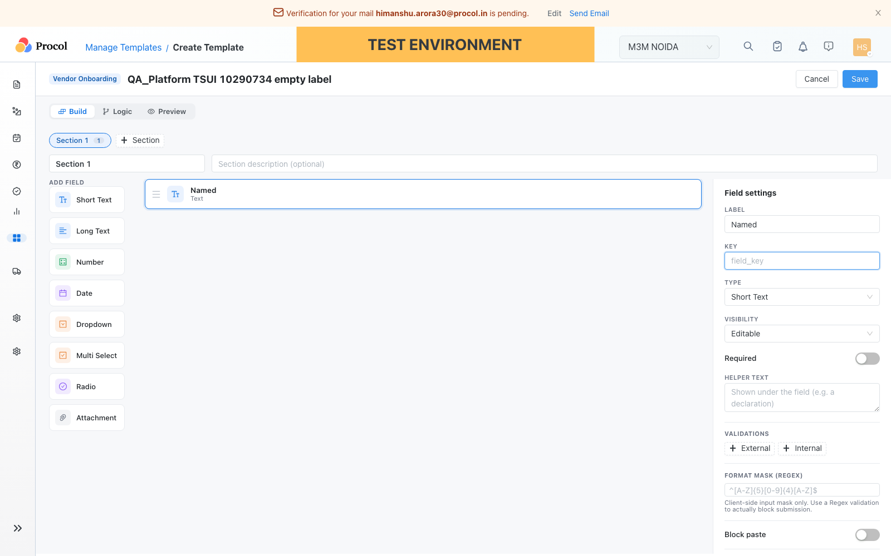</a></td></tr><tr class="row-record"><td class="id">TS_031<div class="lay">API+UI</div></td><td><b>Key with spaces or capitals typed by hand</b><div class="sub">Type key &#x27;PAN Number&#x27;.</div><div class="exp"><b>Expected:</b> The studio accepts it as typed (no cleaning once edited by hand); the backend accepts any string. Product to decide if keys should be forced to snake_case — today a key with spaces is saved and may break {{key}} references in data-source URLs and validations.</div></td><td><span class="v v-record">Record</span></td><td class="act">[API] Record — ✔ backend accepts the key as typed (200); a {{PAN Number}} reference in a URL or validation would then never resolve — product to decide whether keys must be snake_case<br>[UI] Record — • saved (200, &#x27;Template created successfully&#x27;) with key &#x27;PAN Number&#x27; — not cleaned to snake_case; a {{PAN Number}} reference would never resolve<details><summary>API evidence</summary><pre>POST (key &#x27;PAN Number&#x27;) → HTTP 200 in 507 ms<br>  reply: {&quot;uuid&quot;:&quot;cHBja2Q=&quot;,&quot;name&quot;:&quot;QA_Platform TS 10290717 VO key spaces&quot;,&quot;template_for&quot;:[&quot;rfi&quot;,&quot;vendor_onboarding&quot;],&quot;template_type&quot;:&quot;custom&quot;,&quot;user_uuid&quot;:&quot;WGtaTg==&quot;,&quot;forms&quot;:[{&quot;order&quot;:1,&quot;name&quot;:&quot;Section 1&quot;,&quot;description&quot;:&quot;&quot;,&quot;config&quot;:{&quot;type&quot;:&quot;form&quot;},&quot;page_headers&quot;:[],&quot;page_response_headers&quot;:[{&quot;key_attribute&quot;:&quot;PAN Number&quot;,&quot;name&quot;:&quot;PAN&quot;,&quot;description&quot;:&quot;&quot;,&quot;input_type&quot;:&quot;string&quot;,&quot;widget_type&quot;:&quot;default&quot;,&quot;configuration&quot;:{&quot;field_type&quot;:&quot;participant&quot;,&quot;is_required&quot;:false,&quot;mode_type&quot;:&quot;write&quot;}}],&quot;evaluators&quot;:[]}],&quot;configurations&quot;:{},&quot;mapped_widgets&quot;:[],&quot;global_mapped_widgets&quot;:[],&quot;order_configs&quot;:[],&quot;updated_at&quot;:1793258258,&quot;current_user_access_type&quot;:[&quot;editor&quot;],&quot;type_identifier&quot;:[&quot;t-rfi&quot;,&quot;t-vendor_onboarding&quot;],&quot;terms_and</pre></details></td><td class="th"><a href="shots/TS_031.png" target="_blank"></a></td></tr><tr class="row-record"><td class="id">TS_032<div class="lay">UI</div></td><td><b>Changing the Type keeps label/key and shows the right settings</b><div class="sub">Change a Short Text field to Dropdown, then to Attachment.</div><div class="exp"><b>Expected:</b> Label and key stay. Settings sections change with the type: Dropdown shows Options / Data source / Populate on select / Reset fields on change / Prefill / Autofill / Write back; Attachment shows only Allowed file type. Note: an &#x27;Options&#x27; list added while it was a dropdown is kept in the saved data even after changing to Short Text (no clean-up) — verify and report.</div></td><td><span class="v v-record">Record</span></td><td class="act">[UI] Record — ✔ label &#x27;Choice&#x27; and key &#x27;choice&#x27; survive every type change • Short Text: Validations, Format mask (regex), Prefill on load, Autofill after validation, , Block paste, , Write back to a record,  • Long Text: Validations, Format mask (regex), Prefill on load, Autofill after validation, , Write back to a record,  • Number: Validations, Format mask (regex), Prefill on load, Autofill after validation, , Block paste, , Write back to a record,  • Date: Validations, Prefill on load, Autofill after validation, , Write back to a record,  • Dropdown: Options, Data source, Validations, Prefill on load, Autofill after validation, Populate on select, Reset fields on change, , Write back to a record,  • Multi Select: Options, Data source, Validations, Prefill on load, Autofill after validation, Populate on select, Reset fields on change, , Write back to a record,  • Radio: Options, Validations, Prefill on load, Autofill after validation, , Write back to a record,  • Attachment: Validations, Allowed file type, Prefill on load, Autofill after validation, , Write back to a record,  ✔ Block paste only on Short Text and Number (TS_037) ✔ Radio: Options but no Data source / Populate / Reset (TS_051) ✔ Attachment: Allowed file type, no mask (TS_059) ✔ Date: no mask, no paste switch (TS_058) ✘ Attachment also offers: Validations, Prefill on load, Autofill after validation • Validations, Prefill on load, Autofill after validation and Write back apply to EVERY type (their appliesTo is always true), so an Attachment field offers PAN/GST checks, a Company prefill and autofill — settings that cannot work on a file. The field-type table (fieldTypes.js) lists only &#x27;Allowed file type&#x27; for attachments; the panel ignores that table.</td><td class="th"><a href="shots/TS_032.png" target="_blank">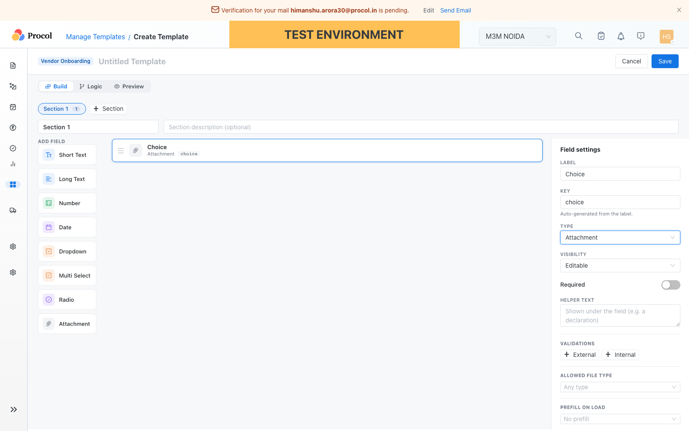</a></td></tr><tr class="row-record"><td class="id">TS_033<div class="lay">API+UI</div></td><td><b>Visibility: Editable / Read-only / Hidden</b><div class="sub">Set each value and check the preview.</div><div class="exp"><b>Expected:</b> Editable = vendor can fill; Read-only = shown, not editable (mode_type &#x27;read&#x27;); Hidden = not shown in the preview at all (mode_type &#x27;hidden&#x27;). A hidden field can still be shown by a logic rule.</div></td><td><span class="v v-record">Record</span></td><td class="act">[API] Pass — ✔ iso_certificate.mode_type=hidden, pan.mode_type=write<br>[UI] Record — ✔ Visibility choices: Editable, Read-only, Hidden ✔ preview shows: Editable one, Read only one (hidden field not shown) ✘ the read-only field in Preview is still typeable (TS_077)</td><td class="th"><a href="shots/TS_033.png" target="_blank">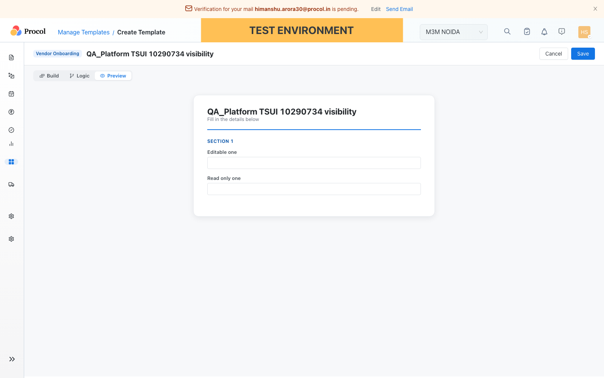</a></td></tr><tr class="row-pass"><td class="id">TS_034<div class="lay">API+UI</div></td><td><b>Required toggle</b><div class="sub">Switch Required on; open Preview.</div><div class="exp"><b>Expected:</b> A red * next to the label in the preview; saved as configuration.is_required true. Off = optional.</div></td><td><span class="v v-pass">Pass</span></td><td class="act">[API] Pass — ✔ legal_name.is_required=true, ifsc=false<br>[UI] Pass — ✔ Required switch on ✔ the card shows * ✔ Preview label &#x27;Legal name *&#x27;</td><td class="th"><a href="shots/TS_034.png" target="_blank"></a></td></tr><tr class="row-pass"><td class="id">TS_035<div class="lay">API+UI</div></td><td><b>Helper text appears under the field</b><div class="sub">Type helper text.</div><div class="exp"><b>Expected:</b> Shown under the field in Preview (and saved as the field&#x27;s description).</div></td><td><span class="v v-pass">Pass</span></td><td class="act">[API] Pass — ✔ legal_name.description=&quot;As printed on the GST certificate&quot;<br>[UI] Pass — ✔ Preview shows the helper text under GSTIN</td><td class="th"><a href="shots/TS_035.png" target="_blank"></a></td></tr></tbody></table></div></details><details class="mod" open><summary><span>F. Short Text / Long Text / Number settings</span><span class="cnt">14 cases · 2 Fail · 1 Record · 11 Pass</span></summary><div class="tw"><table><thead><tr><th>ID</th><th>Case</th><th>Result</th><th>What happened</th><th>Screens</th></tr></thead><tbody><tr class="row-record"><td class="id">TS_036<div class="lay">API+UI</div></td><td><b>Format mask (regex) is only a typing mask, not a check</b><div class="sub">Enter a regex in &#x27;Format mask&#x27;. Save and open the vendor form.</div><div class="exp"><b>Expected:</b> Hint says &#x27;Client-side input mask only. Use a Regex validation to actually block submission.&#x27; The mask guides typing on the vendor side but a wrong value can still be submitted unless an Internal → Regex validation is also added (TS_041).</div></td><td><span class="v v-record">Record</span></td><td class="act">[API] Pass — ✔ pan.regex=^[A-Z]{5}[0-9]{4}[A-Z]$<br>[UI] Record — ✔ hint &#x27;Client-side input mask only. Use a Regex validation to actually block submission.&#x27; • Preview accepts &#x27;abc123&#x27; — the mask is not applied in the studio preview</td><td class="th"><a href="shots/TS_036.png" target="_blank">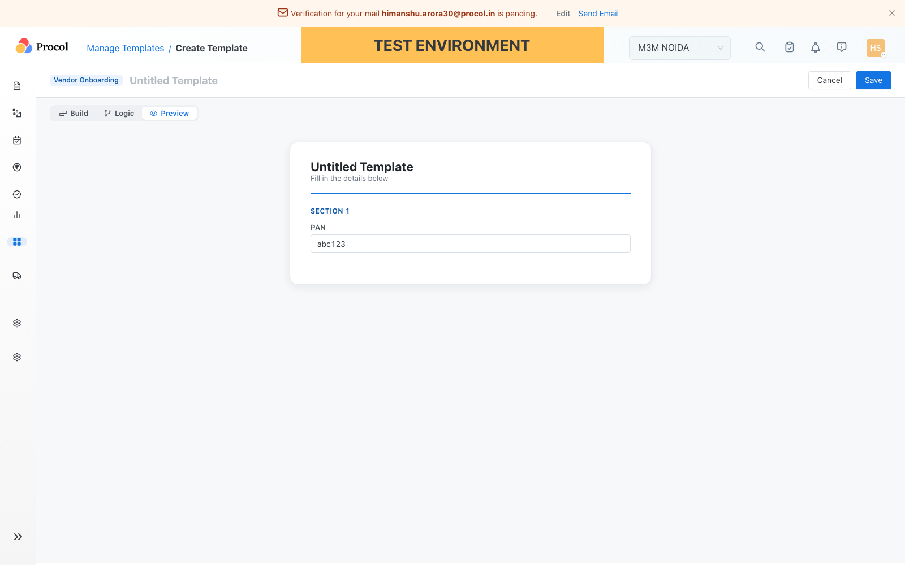</a></td></tr><tr class="row-pass"><td class="id">TS_037<div class="lay">API</div></td><td><b>Block paste (Short Text and Number only)</b><div class="sub">Switch &#x27;Block paste&#x27; on for &#x27;Re-enter account number&#x27;. Save; on the vendor form try Ctrl+V.</div><div class="exp"><b>Expected:</b> Paste is refused in that field on the vendor form (configuration.disable_paste true). The switch is not offered for Long Text, Date, options or Attachment.</div></td><td><span class="v v-pass">Pass</span></td><td class="act">[API] Pass — ✔ pan=true, annual_turnover=true</td><td class="th"></td></tr><tr class="row-pass"><td class="id">TS_038<div class="lay">API+UI</div></td><td><b>External validation – single-input types (PAN, GST, MSME, CIN, FSSAI, TAN, VAT)</b><div class="sub">Validations → + External → pick PAN.</div><div class="exp"><b>Expected:</b> A row &#x27;pan_no → field supplying value&#x27; appears, pre-filled with this field. Saved as validation_type &#x27;validation_type=pan#pan_no={{pan}}&#x27;. Each of the 7 single-input types behaves the same with its own input name (gstin, msme_no, cin_no, fssai_no, tan_no, vat_no).</div></td><td><span class="v v-pass">Pass</span></td><td class="act">[API] Pass — ✔ pan: validation_type=pan#pan_no={{pan}}; gstin: validation_type=gst#gstin={{gstin}}<br>[UI] Pass — ✔ validation types: PAN, GST, MSME / Udyam, Bank Account, CIN, FSSAI, TAN, VAT ✔ row &#x27;pan_no → PAN&#x27; (this field) appears ✔ a blue &#x27;External&#x27; tag on the entry</td><td class="th"><a href="shots/TS_038.png" target="_blank">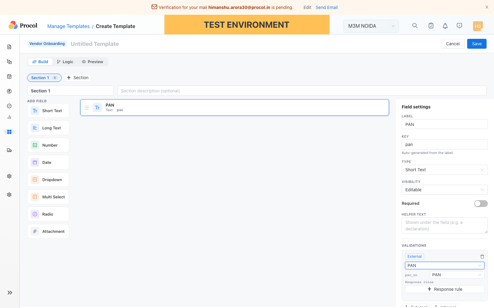</a></td></tr><tr class="row-fail"><td class="id">TS_039<div class="lay">API+UI</div></td><td><b>External validation – Bank needs two inputs</b><div class="sub">Validations → + External → Bank Account.</div><div class="exp"><b>Expected:</b> Two rows: bank_account_no (pre-filled with this field) and ifsc (empty, must be picked). Saving with ifsc empty writes &#x27;ifsc={{}}&#x27; — the vendor-side check would then run with no IFSC. Expected: the studio should refuse an unmapped input. Record the actual behaviour.</div></td><td><span class="v v-fail">Fail</span></td><td class="act">[API] Pass — ✔ account_number: validation_type=bank#bank_account_no={{account_number}}&amp;ifsc={{ifsc}}<br>[UI] Fail — ✔ two rows: bank_account_no (this field) and ifsc (to pick) ✘ saving with IFSC unmapped: POST 200, stored &#x27;validation_type=bank#bank_account_no={{account_number}}&amp;ifsc={{}}&#x27; — toast &#x27;Template created successfully&#x27;</td><td class="th"><a href="shots/TS_039.png" target="_blank"></a></td></tr><tr class="row-pass"><td class="id">TS_040<div class="lay">API+UI</div></td><td><b>External validation – response rules (cross-field compare)</b><div class="sub">On the Bank validation add &#x27;Response rule&#x27;: source_path, reference field GST with paths, match Any, error message; add &#x27;Only when…&#x27; Vendor type = Company.</div><div class="exp"><b>Expected:</b> Saved under response_rules[{type: cross_field_compare, source_path, reference_fields:[{field_key:&#x27;gst&#x27;, paths:[...], match:&#x27;any&#x27;, when:{field_key:&#x27;vendor_type&#x27;, value:&lt;option id&gt;}}], error_msg}]. On the vendor form the bank check fails with that message when the names differ, and the rule is only applied when Vendor type is Company.</div></td><td><span class="v v-pass">Pass</span></td><td class="act">[API] Pass — ✔ [{&quot;type&quot;:&quot;cross_field_compare&quot;,&quot;source_path&quot;:&quot;validation_data.full_name.value&quot;,&quot;reference_fields&quot;:[{&quot;field_key&quot;:&quot;legal_name&quot;,&quot;paths&quot;:[&quot;legal_name&quot;,&quot;trade_name&quot;],&quot;match&quot;:&quot;any&quot;,&quot;when&quot;:{&quot;field_key&quot;:&quot;vendor_type&quot;,&quot;value&quot;:&quot;vtInd1&quot;}}],&quot;error_msg&quot;:&quot;Account holder must match the legal name&quot;}]<br>[UI] Pass — ✔ &#x27;only when&#x27; value list = the radio&#x27;s options: Company, Individual ✔ card &#x27;Cross-field compare&#x27; with source path, reference field, match Any/All and &#x27;only when&#x27; ✔ match choices: Any, All</td><td class="th"><a href="shots/TS_040.png" target="_blank">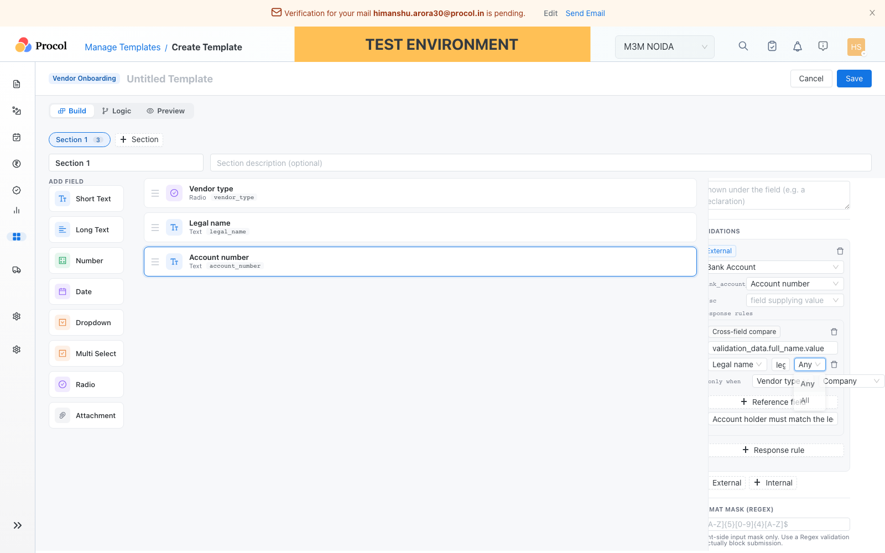</a></td></tr><tr class="row-pass"><td class="id">TS_041<div class="lay">API+UI</div></td><td><b>Internal validation – Regex (server-enforced)</b><div class="sub">Validations → + Internal → Regex; enter pattern and message. Save; submit a wrong value on the vendor form.</div><div class="exp"><b>Expected:</b> The vendor form refuses the value with the message (this is the real check, unlike the format mask).</div></td><td><span class="v v-pass">Pass</span></td><td class="act">[API] Pass — ✔ {&quot;type&quot;:&quot;internal&quot;,&quot;check&quot;:&quot;regex&quot;,&quot;regex&quot;:&quot;^[A-Z]{5}[0-9]{4}[A-Z]$&quot;,&quot;error_message&quot;:&quot;PAN must look like ABCDE1234F&quot;}<br>[UI] Pass — ✔ checks: Regex (server-enforced), Must equal another field, Reject duplicate (already onboarded), Must be contained in another field ✔ Regex (default) asks for a regex and an error message ✔ &#x27;compare to field&#x27; offers the other fields, not itself: Account number ✔ Reject duplicate asks for the model (Company) and an optional mapping_model ✔ Contains asks for a field to compare to ✔ two entries tagged Internal + External (TS_045) ✔ the bin removes one entry and keeps the other</td><td class="th"><a href="shots/TS_041.png" target="_blank">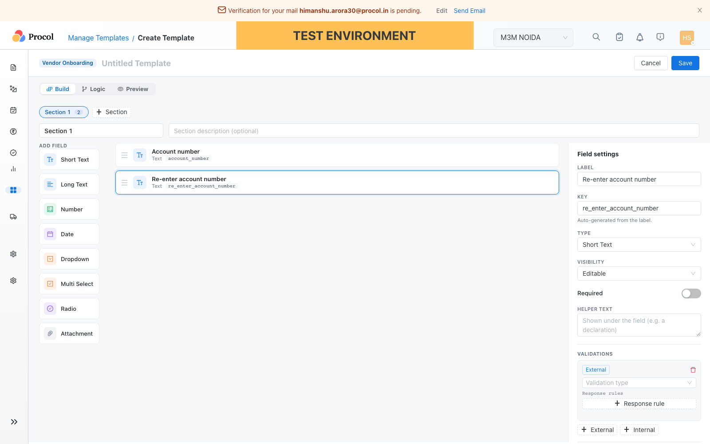</a></td></tr><tr class="row-pass"><td class="id">TS_042<div class="lay">API</div></td><td><b>Internal validation – Must equal another field</b><div class="sub">Internal → &#x27;Must equal another field&#x27; → pick &#x27;Account number&#x27; on &#x27;Re-enter account number&#x27;.</div><div class="exp"><b>Expected:</b> Saved as check &#x27;equal&#x27; with compare_to_key and compare paths [&#x27;value&#x27;]; mismatching values are refused on the vendor form with the message.</div></td><td><span class="v v-pass">Pass</span></td><td class="act">[API] Pass — ✔ {&quot;type&quot;:&quot;internal&quot;,&quot;check&quot;:&quot;equal&quot;,&quot;key&quot;:&quot;reenter_account_number&quot;,&quot;compare_to_key&quot;:&quot;account_number&quot;,&quot;compare_to_path&quot;:[&quot;value&quot;],&quot;compare_with_path&quot;:[&quot;value&quot;],&quot;error_message&quot;:&quot;Account numbers do not match&quot;}</td><td class="th"></td></tr><tr class="row-pass"><td class="id">TS_043<div class="lay">API</div></td><td><b>Internal validation – Reject duplicate (already onboarded)</b><div class="sub">Internal → &#x27;Reject duplicate&#x27; → model Company.</div><div class="exp"><b>Expected:</b> The vendor form refuses the duplicate value. &#x27;mapping_model&#x27; is optional.</div></td><td><span class="v v-pass">Pass</span></td><td class="act">[API] Pass — ✔ {&quot;type&quot;:&quot;internal&quot;,&quot;check&quot;:&quot;duplicate&quot;,&quot;model&quot;:&quot;Company&quot;,&quot;key&quot;:&quot;udyam_number&quot;}</td><td class="th"></td></tr><tr class="row-pass"><td class="id">TS_044<div class="lay">API</div></td><td><b>Internal validation – Must be contained in another field</b><div class="sub">Internal → &#x27;contains&#x27; → pick a field.</div><div class="exp"><b>Expected:</b> Saved as check &#x27;contains&#x27;; vendor form refuses a GSTIN that does not contain the PAN.</div></td><td><span class="v v-pass">Pass</span></td><td class="act">[API] Pass — ✔ {&quot;type&quot;:&quot;internal&quot;,&quot;check&quot;:&quot;contains&quot;,&quot;key&quot;:&quot;gstin&quot;,&quot;compare_to_key&quot;:&quot;pan&quot;,&quot;error_message&quot;:&quot;GSTIN must contain the PAN&quot;}</td><td class="th"></td></tr><tr class="row-pass"><td class="id">TS_045<div class="lay">API</div></td><td><b>Several validations on one field</b><div class="sub">Add Internal Regex + External PAN on the same field; remove one with the bin icon.</div><div class="exp"><b>Expected:</b> Both are listed with coloured tags (External blue, Internal orange) and saved in order; removing one keeps the other.</div></td><td><span class="v v-pass">Pass</span></td><td class="act">[API] Pass — ✔ pan validations: [&quot;external&quot;,&quot;internal&quot;]</td><td class="th"></td></tr><tr class="row-pass"><td class="id">TS_046<div class="lay">API+UI</div></td><td><b>Prefill on load – allow-list only</b><div class="sub">Open &#x27;Prefill on load&#x27; dropdown.</div><div class="exp"><b>Expected:</b> Exactly 6 choices: Company · Legal name, Company · GSTIN, Company · Email, Company · Address, Company · Phone, User · Display name. Choosing one saves auto_fetch_hash {object_type, key} (GSTIN also response_type &#x27;hash&#x27;); the template-level auto_fetch_hash_array lists each distinct source once. The vendor form shows the value pre-filled. &#x27;No prefill&#x27; clears it.</div></td><td><span class="v v-pass">Pass</span></td><td class="act">[API] Pass — ✔ gstin.auto_fetch_hash={&quot;object_type&quot;:&quot;Company&quot;,&quot;key&quot;:&quot;gst_no&quot;,&quot;response_type&quot;:&quot;hash&quot;}; auto_fetch_hash_array has 3<br>[UI] Pass — ✔ choices: Company · Legal name, Company · GSTIN, Company · Email, Company · Address, Company · Phone, User · Display name ✔ choice kept; × clears it back to &#x27;No prefill&#x27;</td><td class="th"><a href="shots/TS_046.png" target="_blank">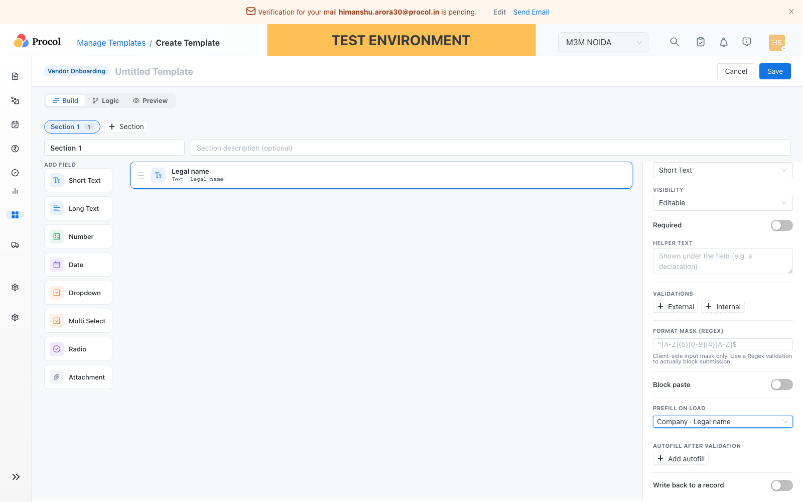</a></td></tr><tr class="row-pass"><td class="id">TS_047<div class="lay">API+UI</div></td><td><b>Autofill after validation – fill other fields from the check&#x27;s answer</b><div class="sub">On &#x27;GSTIN&#x27; add autofill: target &#x27;Legal name&#x27;, data path &#x27;legal_name.value&#x27;, &#x27;From validation response&#x27;.</div><div class="exp"><b>Expected:</b> Row is kept only once a target is chosen (a row without a target is a draft and is dropped on save). Saved as autofill {legal_name: {data_path:[&#x27;legal_name&#x27;,&#x27;value&#x27;], fetch_type:&#x27;validation&#x27;}} and widget_mapping {gstin: [&#x27;legal_name&#x27;]}. On the vendor form, after a successful GST check &#x27;Legal name&#x27; fills itself.</div></td><td><span class="v v-pass">Pass</span></td><td class="act">[API] Pass — ✔ pan.autofill={&quot;legal_name&quot;:{&quot;data_path&quot;:[&quot;full_name&quot;,&quot;value&quot;],&quot;fetch_type&quot;:&quot;validation&quot;}}; widget_mapping={&quot;pan&quot;:[&quot;legal_name&quot;]}<br>[UI] Pass — ✔ target choices exclude the field itself: Legal name ✔ fetch choices: From validation response, From raw response</td><td class="th"><a href="shots/TS_047.png" target="_blank">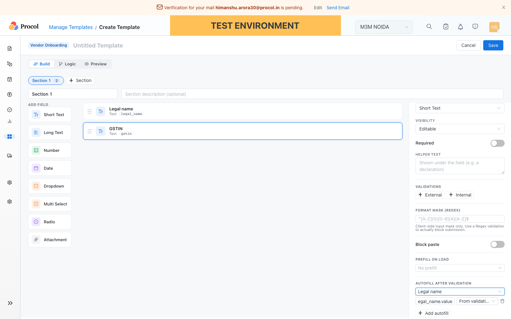</a></td></tr><tr class="row-pass"><td class="id">TS_048<div class="lay">API+UI</div></td><td><b>Write back to a record</b><div class="sub">Switch &#x27;Write back to a record&#x27; on; pick model/column.</div><div class="exp"><b>Expected:</b> Only Company → misc is offered. Saved template-level as entity_mappings {&lt;key&gt;: {model:&#x27;Company&#x27;, column:&#x27;misc&#x27;, hash_key:&lt;key&gt;, data_type:&#x27;hash&#x27;, add_to_extended_field:false, callback_required:false}}. After submission the answer is written to the vendor company&#x27;s misc under that key.</div></td><td><span class="v v-pass">Pass</span></td><td class="act">[API] Pass — ✔ {&quot;legal_name&quot;:{&quot;model&quot;:&quot;Company&quot;,&quot;column&quot;:&quot;misc&quot;,&quot;hash_key&quot;:&quot;legal_name&quot;,&quot;data_type&quot;:&quot;hash&quot;,&quot;add_to_extended_field&quot;:false,&quot;callback_required&quot;:false}}<br>[UI] Pass — ✔ model choices: Company; column choices: misc</td><td class="th"><a href="shots/TS_048.png" target="_blank">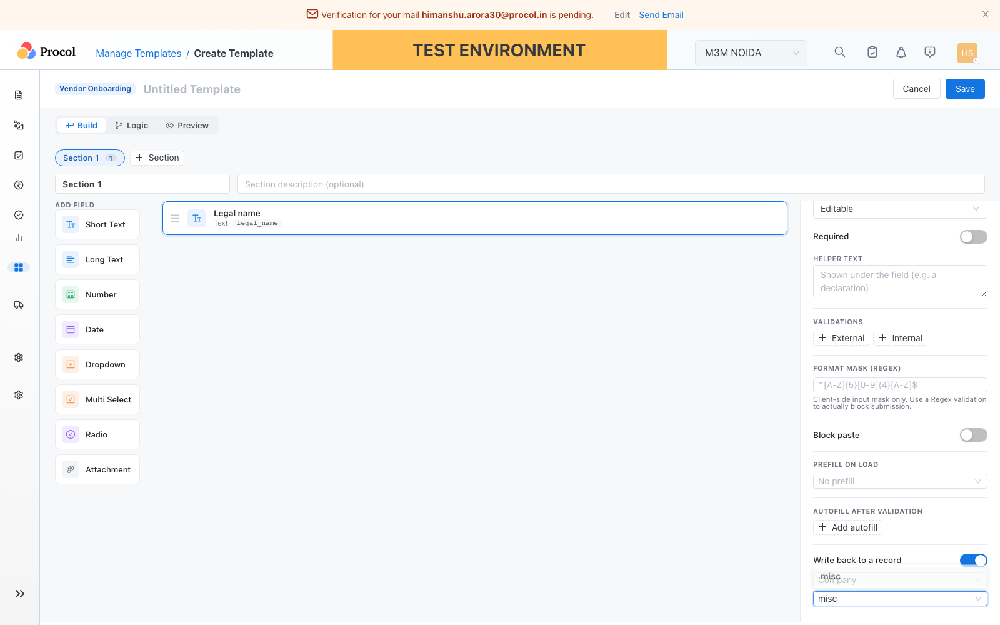</a></td></tr><tr class="row-fail"><td class="id">TS_039B<div class="lay">API</div></td><td><b>API: bank validation saved with the IFSC input empty</b><div class="sub"></div><div class="exp"><b>Expected:</b> </div></td><td><span class="v v-fail">Fail</span></td><td class="act">[API] Fail — ✘ backend accepts a bank check whose IFSC input points at no field (200)<details><summary>API evidence</summary><pre>POST (ifsc={{}}) → HTTP 200 in 1396 ms<br>  reply: {&quot;uuid&quot;:&quot;Tlpja2Q=&quot;,&quot;name&quot;:&quot;QA_Platform TS 10290717 VO bank no ifsc&quot;,&quot;template_for&quot;:[&quot;rfi&quot;,&quot;vendor_onboarding&quot;],&quot;template_type&quot;:&quot;custom&quot;,&quot;user_uuid&quot;:&quot;WGtaTg==&quot;,&quot;forms&quot;:[{&quot;order&quot;:1,&quot;name&quot;:&quot;Section 1&quot;,&quot;description&quot;:&quot;&quot;,&quot;config&quot;:{&quot;type&quot;:&quot;form&quot;},&quot;page_headers&quot;:[],&quot;page_response_headers&quot;:[{&quot;key_attribute&quot;:&quot;acc&quot;,&quot;name&quot;:&quot;Account&quot;,&quot;description&quot;:&quot;&quot;,&quot;input_type&quot;:&quot;string&quot;,&quot;widget_type&quot;:&quot;default&quot;,&quot;configuration&quot;:{&quot;field_type&quot;:&quot;participant&quot;,&quot;is_required&quot;:false,&quot;mode_type&quot;:&quot;write&quot;},&quot;validations&quot;:[{&quot;type&quot;:&quot;external&quot;,&quot;validation_type&quot;:&quot;validation_type=bank#bank_account_no={{acc}}&amp;ifsc={{}}&quot;}]}],&quot;evaluators&quot;:[]}],&quot;configurations&quot;:{},&quot;mapped_widgets&quot;:[],&quot;global_mapped_widgets&quot;:[],&quot;order_configs&quot;:[],&quot;updated_at&quot;</pre></details></td><td class="th"></td></tr></tbody></table></div></details><details class="mod"><summary><span>G. Dropdown / Multi Select / Radio settings</span><span class="cnt">9 cases · 2 Record · 7 Pass</span></summary><div class="tw"><table><thead><tr><th>ID</th><th>Case</th><th>Result</th><th>What happened</th><th>Screens</th></tr></thead><tbody><tr class="row-pass"><td class="id">TS_049<div class="lay">API+UI</div></td><td><b>Add, rename, remove options</b><div class="sub">Dropdown → Options → + Add option ×3; rename one; delete one.</div><div class="exp"><b>Expected:</b> Each option shows its label box and a fixed 6-character id next to it. Renaming keeps the id (rules compare ids, so a renamed option still triggers its rule). Deleting removes it from preview and rules&#x27; value lists.</div></td><td><span class="v v-pass">Pass</span></td><td class="act">[API] Pass — ✔ [{&quot;id&quot;:&quot;vtInd1&quot;,&quot;value&quot;:&quot;Indian&quot;},{&quot;id&quot;:&quot;vtFor1&quot;,&quot;value&quot;:&quot;Foreign&quot;},{&quot;id&quot;:&quot;vtMsm1&quot;,&quot;value&quot;:&quot;MSME&quot;}]<br>[UI] Pass — ✔ each option shows a fixed 6-character id: KNS-A9, Ctq3ea, mPBR78 ✔ renaming &#x27;Partnership&#x27; to &#x27;LLP&#x27; keeps its id ✔ the bin removes &#x27;Proprietorship&#x27;</td><td class="th"><a href="shots/TS_049.png" target="_blank"></a></td></tr><tr class="row-record"><td class="id">TS_050<div class="lay">API+UI</div></td><td><b>Option with empty label</b><div class="sub">Add an option and leave the label empty; Save.</div><div class="exp"><b>Expected:</b> Allowed today (the preview shows the id as the label). Expected by product: empty labels should be refused or trimmed. Record.</div></td><td><span class="v v-record">Record</span></td><td class="act">[API] Record — ✔ accepted (200); the vendor would see an empty choice<br>[UI] Record — • preview choices: rhb2Gm | Yes — an empty option is allowed and shows its id instead of a label<details><summary>API evidence</summary><pre>POST (option label &#x27;&#x27;) → HTTP 200 in 345 ms<br>  reply: {&quot;uuid&quot;:&quot;TkRja2Q=&quot;,&quot;name&quot;:&quot;QA_Platform TS 10290717 VO empty option&quot;,&quot;template_for&quot;:[&quot;rfi&quot;,&quot;vendor_onboarding&quot;],&quot;template_type&quot;:&quot;custom&quot;,&quot;user_uuid&quot;:&quot;WGtaTg==&quot;,&quot;forms&quot;:[{&quot;order&quot;:1,&quot;name&quot;:&quot;Section 1&quot;,&quot;description&quot;:&quot;&quot;,&quot;config&quot;:{&quot;type&quot;:&quot;form&quot;},&quot;page_headers&quot;:[],&quot;page_response_headers&quot;:[{&quot;key_attribute&quot;:&quot;opt_f&quot;,&quot;name&quot;:&quot;Pick&quot;,&quot;description&quot;:&quot;&quot;,&quot;input_type&quot;:&quot;dropdown&quot;,&quot;widget_type&quot;:&quot;default&quot;,&quot;configuration&quot;:{&quot;field_type&quot;:&quot;participant&quot;,&quot;is_required&quot;:false,&quot;mode_type&quot;:&quot;write&quot;,&quot;cell_options&quot;:[{&quot;id&quot;:&quot;o1&quot;,&quot;value&quot;:&quot;&quot;},{&quot;id&quot;:&quot;o2&quot;,&quot;value&quot;:&quot;Yes&quot;}]}}],&quot;evaluators&quot;:[]}],&quot;configurations&quot;:{},&quot;mapped_widgets&quot;:[],&quot;global_mapped_widgets&quot;:[],&quot;order_configs&quot;:[],&quot;updated_at&quot;:1793258260,&quot;current_user_access_type&quot;:[&quot;edi</pre></details></td><td class="th"><a href="shots/TS_050.png" target="_blank">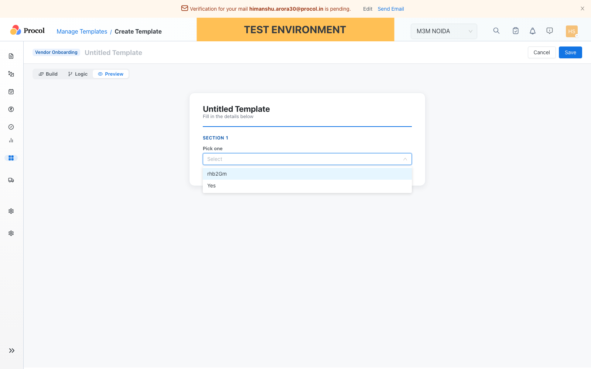</a></td></tr><tr class="row-pass"><td class="id">TS_051<div class="lay">UI</div></td><td><b>Radio offers Options, Prefill and Write back only</b><div class="sub">Select a Radio field.</div><div class="exp"><b>Expected:</b> Settings show Options, Prefill on load, Autofill after validation, Write back — no Data source, Populate on select or Reset fields (those are dropdown/multi-select only).</div></td><td><span class="v v-pass">Pass</span></td><td class="act">[UI] Pass — checked inside TS_032: ✔ Radio: Options but no Data source / Populate / Reset (TS_051)</td><td class="th"><a href="shots/TS_032.png" target="_blank"></a></td></tr><tr class="row-pass"><td class="id">TS_052<div class="lay">API+UI</div></td><td><b>Data source from the known list</b><div class="sub">Dropdown → Data source → pick a source.</div><div class="exp"><b>Expected:</b> The URL box fills with the source&#x27;s URL (configuration.dropdown_data). In Preview the control says &#x27;Loaded from data source at fill time&#x27;. Options list and data source are alternatives: when Options exist the preview uses them.</div></td><td><span class="v v-pass">Pass</span></td><td class="act">[API] Pass — ✔ data sources answer 200 with 16 sources ✔ every source has a name and a data_source_dropdown_url (what the Data source picker shows and stores)<br>[UI] Pass — ✔ 16 sources (same 16 as GET /widget_data_mapping/data_sources): M3m tax code, Tax, Country &amp; region, Currency, Recon account… ✔ the URL box fills with &#x27;/widget_data_mapping?type=Country &amp; Region&amp;trade_request_uuid={{trade_request_uuid}}&#x27; ✔ the tag {{trade_request_uuid}} is shown (blue = always available) ✔ Preview says &#x27;Loaded from data source at fill time&#x27;<details><summary>API evidence</summary><pre>GET /widget_data_mapping/data_sources → HTTP 200 in 535 ms<br>  reply: [{&quot;name&quot;:&quot;M3m tax code&quot;,&quot;data_source_dropdown_url&quot;:&quot;/widget_data_mapping?type=m3m_tax_code&amp;trade_request_uuid={{trade_request_uuid}}&quot;},{&quot;name&quot;:&quot;Tax&quot;,&quot;data_source_dropdown_url&quot;:&quot;/widget_data_mapping?type=tax&amp;trade_request_uuid={{trade_request_uuid}}&quot;},{&quot;name&quot;:&quot;Country &amp; region&quot;,&quot;data_source_dropdown_url&quot;:&quot;/widget_data_mapping?type=Country &amp; Region&amp;trade_request_uuid={{trade_request_uuid}}&quot;},{&quot;name&quot;:&quot;Currency&quot;,&quot;data_source_dropdown_url&quot;:&quot;/widget_data_mapping?type=currency&amp;trade_request_uuid={{trade_request_uuid}}&quot;}]</pre></details></td><td class="th"><a href="shots/TS_052.png" target="_blank"></a></td></tr><tr class="row-pass"><td class="id">TS_053<div class="lay">API+UI</div></td><td><b>Data source URL typed by hand with a {{field}} placeholder</b><div class="sub">Type &#x27;/v1/cities?state={{state}}&#x27;.</div><div class="exp"><b>Expected:</b> A tag &#x27;{{state}}&#x27; appears under the box (grey = another field&#x27;s value). If no field &#x27;state&#x27; exists, Save is blocked: &#x27;A rule or field references a missing field: state&#x27;. &#x27;{{trade_request_uuid}}&#x27; is shown in blue (always available) and never blocks.</div></td><td><span class="v v-pass">Pass</span></td><td class="act">[API] Pass — ✔ country.dropdown_data=/widget_data_mapping?type=Country &amp; Region&amp;trade_request_uuid={{trade_request_uuid}}<br>[UI] Pass — ✔ tag {{state}} appears under the box ✔ Save refused: &#x27;A rule or field references a missing field: state&#x27; ✔ after adding a field keyed &#x27;state&#x27; the save goes through (200, &#x27;Template created successfully&#x27;)</td><td class="th"><a href="shots/TS_053.png" target="_blank">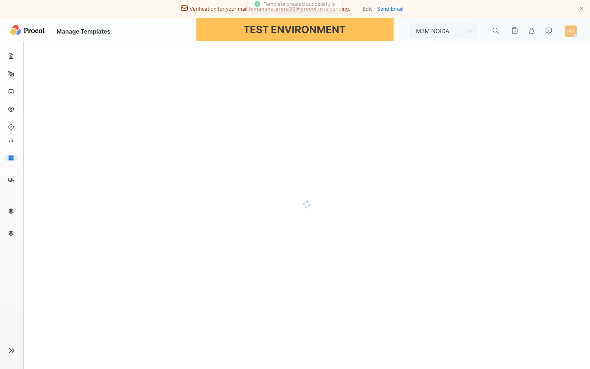</a></td></tr><tr class="row-record"><td class="id">TS_054<div class="lay">API+UI</div></td><td><b>Cascade from a parent field</b><div class="sub">Data source → &#x27;Cascade from&#x27; → pick &#x27;State&#x27;.</div><div class="exp"><b>Expected:</b> URL becomes &#x27;/v1/cities?parent_key={{state}}&#x27; (uses &amp; if the URL already has ?). Picking again appends another parent_key — verify the studio does not add duplicates silently (report if it does).</div></td><td><span class="v v-record">Record</span></td><td class="act">[API] Pass — ✔ state.dropdown_data=/widget_data_mapping?type=state&amp;parent_key={{country}}<br>[UI] Record — ✔ URL now &#x27;/v1/states?parent_key={{country}}&#x27; ✘ picking the parent again → &#x27;/v1/states?parent_key={{country}}&amp;parent_key={{country}}&#x27; • each pick appends another parent_key; the picker resets to empty, so nothing shows which parent is already set</td><td class="th"><a href="shots/TS_054.png" target="_blank">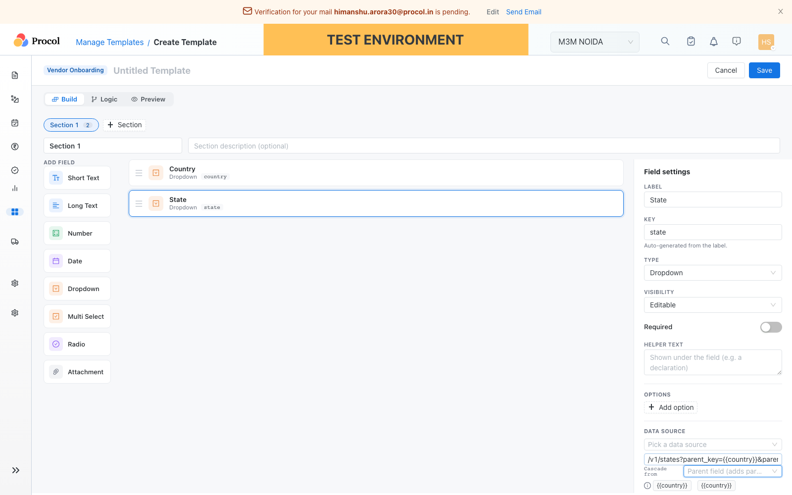</a></td></tr><tr class="row-pass"><td class="id">TS_055<div class="lay">API+UI</div></td><td><b>Populate on select</b><div class="sub">Dropdown &#x27;Bank&#x27; → Populate on select → source_key &#x27;ifsc&#x27; → target &#x27;IFSC&#x27;.</div><div class="exp"><b>Expected:</b> Saved as configuration.populate_on_select [{source_key:&#x27;ifsc&#x27;, target_key_attribute:&#x27;ifsc&#x27;}]; choosing a bank on the vendor form fills IFSC from the option&#x27;s data. The target picker never offers the field itself.</div></td><td><span class="v v-pass">Pass</span></td><td class="act">[API] Pass — ✔ [{&quot;source_key&quot;:&quot;code&quot;,&quot;target_key_attribute&quot;:&quot;state_code&quot;}]<br>[UI] Pass — ✔ target choices exclude the dropdown itself: IFSC, Branch ✔ fields to reset (TS_056): IFSC, Branch</td><td class="th"><a href="shots/TS_055.png" target="_blank">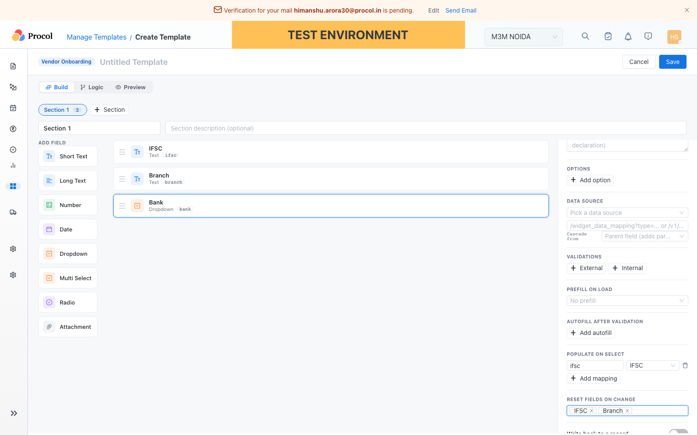</a></td></tr><tr class="row-pass"><td class="id">TS_056<div class="lay">API</div></td><td><b>Reset fields on change (cascades)</b><div class="sub">Dropdown &#x27;Country&#x27; → Reset fields on change → &#x27;State&#x27;, &#x27;City&#x27;.</div><div class="exp"><b>Expected:</b> Saved as dependent_widgets {state:{actions:[{type:&#x27;reset&#x27;,value:null}]}, city:{…}}; on the vendor form changing Country clears State and City.</div></td><td><span class="v v-pass">Pass</span></td><td class="act">[API] Pass — ✔ {&quot;state&quot;:{&quot;actions&quot;:[{&quot;type&quot;:&quot;reset&quot;,&quot;value&quot;:null}]}}</td><td class="th"></td></tr><tr class="row-pass"><td class="id">TS_057<div class="lay">API+UI</div></td><td><b>Multi Select in preview and in rules</b><div class="sub">Add a Multi Select with 3 options; in Logic use &#x27;contains&#x27;.</div><div class="exp"><b>Expected:</b> Preview lets several options be picked; the rule fires when the chosen set contains that option (ids compared).</div></td><td><span class="v v-pass">Pass</span></td><td class="act">[API] Pass — ✔ [{&quot;comparison&quot;:&quot;CONTAINS&quot;,&quot;key_attribute&quot;:&quot;certifications&quot;,&quot;value&quot;:&quot;iso901&quot;}]<br>[UI] Pass — ✔ before: ISO certificate optional ✔ picking only ISO 14001 → still optional ✔ adding ISO 9001 → ISO certificate* (TS_060: an attachment can be made required by a rule)</td><td class="th"><a href="shots/TS_057.png" target="_blank">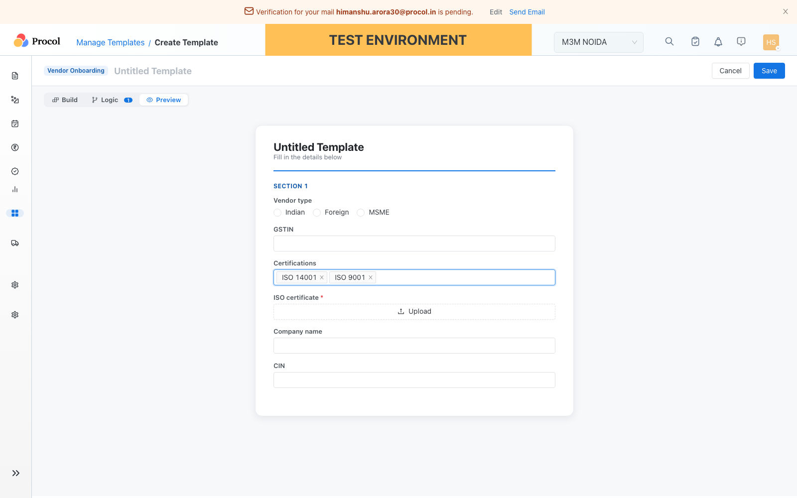</a></td></tr></tbody></table></div></details><details class="mod"><summary><span>H. Date and Attachment settings</span><span class="cnt">3 cases · 3 Pass</span></summary><div class="tw"><table><thead><tr><th>ID</th><th>Case</th><th>Result</th><th>What happened</th><th>Screens</th></tr></thead><tbody><tr class="row-pass"><td class="id">TS_058<div class="lay">UI</div></td><td><b>Date field offers only Prefill and Write back</b><div class="sub">Select a Date field.</div><div class="exp"><b>Expected:</b> No validations, no mask, no paste switch. Preview shows a date picker.</div></td><td><span class="v v-pass">Pass</span></td><td class="act">[UI] Pass — checked inside TS_032: ✔ Date: no mask, no paste switch (TS_058)</td><td class="th"><a href="shots/TS_032.png" target="_blank"></a></td></tr><tr class="row-pass"><td class="id">TS_059<div class="lay">API+UI</div></td><td><b>Attachment – allowed file type</b><div class="sub">Attachment → Allowed file type → PDF; then clear to &#x27;Any type&#x27;.</div><div class="exp"><b>Expected:</b> Choices: PDF, DOCX, XLSX, PNG, JPG, JPEG, CSV (one only). Saved as file_type &#x27;pdf&#x27;; preview button reads &#x27;Upload (.pdf)&#x27;. The vendor form refuses other extensions. Clearing removes file_type.</div></td><td><span class="v v-pass">Pass</span></td><td class="act">[API] Pass — ✔ iso_certificate.file_type=pdf<br>[UI] Pass — ✔ choices: PDF, DOCX, XLSX, PNG, JPG, JPEG, CSV (one only) ✔ Preview button reads &#x27;Upload (.pdf)&#x27;</td><td class="th"><a href="shots/TS_059.png" target="_blank"></a></td></tr><tr class="row-pass"><td class="id">TS_060<div class="lay">UI</div></td><td><b>Attachment cannot be made &#x27;Required&#x27; through logic only</b><div class="sub">Attachment with Required off; a rule &#x27;Make required&#x27; targets it.</div><div class="exp"><b>Expected:</b> Rule works (is_required true at fill time when the condition holds). Checks that attachments respect required like other types.</div></td><td><span class="v v-pass">Pass</span></td><td class="act">[UI] Pass — checked inside TS_057: ✔ adding ISO 9001 → ISO certificate* (TS_060: an attachment can be made required by a rule)</td><td class="th"><a href="shots/TS_057.png" target="_blank"></a></td></tr></tbody></table></div></details><details class="mod"><summary><span>I. Logic tab (conditional fields)</span><span class="cnt">16 cases · 3 Record · 13 Pass</span></summary><div class="tw"><table><thead><tr><th>ID</th><th>Case</th><th>Result</th><th>What happened</th><th>Screens</th></tr></thead><tbody><tr class="row-pass"><td class="id">TS_061<div class="lay">UI</div></td><td><b>Logic tab empty state and badge</b><div class="sub">Open Logic with no rules; add one.</div><div class="exp"><b>Expected:</b> Empty text &#x27;No conditional logic yet. Add a rule to show, hide or require fields based on an answer.&#x27; + &#x27;Add rule&#x27;. After adding, the Logic tab shows a badge with the rule count.</div></td><td><span class="v v-pass">Pass</span></td><td class="act">[UI] Pass — ✔ empty text &#x27;No conditional logic yet. …&#x27; ✔ tab reads &#x27;Logic 1&#x27; ✔ a rule card: When [controlling field] [is] [value], Hide [target field], + Add effect (as in the screenshot)</td><td class="th"><a href="shots/TS_061.png" target="_blank">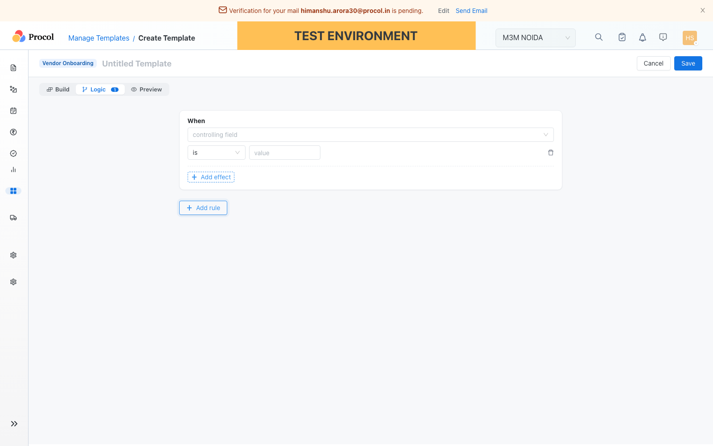</a></td></tr><tr class="row-pass"><td class="id">TS_062<div class="lay">API+UI</div></td><td><b>Build a rule: When &lt;field&gt; is &lt;value&gt; → Hide &lt;target&gt;</b><div class="sub">Add rule: controlling field &#x27;Vendor type&#x27; (radio), &#x27;is&#x27;, value &#x27;Foreign&#x27;; effect Hide → &#x27;GSTIN&#x27;.</div><div class="exp"><b>Expected:</b> The value box is a dropdown of the controller&#x27;s options (shown by label, saved by id). Target picker lists all fields by label except the controller itself. Saved as conditional_block [{conditions:[{comparison:&#x27;IS&#x27;, key_attribute:&#x27;vendor_type&#x27;, value:&#x27;&lt;id&gt;&#x27;}], logical_operator:&#x27;OR&#x27;, actions:[{key_attribute:&#x27;gstin&#x27;, target:{key:&#x27;mode_type&#x27;, value:&#x27;hidden&#x27;}}, {…is_required:false}, {…value:null}]}].</div></td><td><span class="v v-pass">Pass</span></td><td class="act">[API] Pass — ✔ {&quot;conditions&quot;:[{&quot;comparison&quot;:&quot;IS&quot;,&quot;key_attribute&quot;:&quot;vendor_type&quot;,&quot;value&quot;:&quot;vtFor1&quot;}],&quot;logical_operator&quot;:&quot;OR&quot;,&quot;actions&quot;:[{&quot;key_attribute&quot;:&quot;gstin&quot;,&quot;target&quot;:{&quot;key&quot;:&quot;mode_type&quot;,&quot;value&quot;:&quot;hidden&quot;}},{&quot;key_attribute&quot;:&quot;gstin&quot;,&quot;target&quot;:{&quot;key&quot;:&quot;is_required&quot;,&quot;value&quot;:false}},{&quot;key_attribute&quot;:&quot;gstin&quot;,&quot;target&quot;:{&quot;key&quot;:&quot;value&quot;,&quot;value&quot;:null}}]}<br>[UI] Pass — ✔ value list = the radio&#x27;s options: Indian, Foreign, MSME ✔ Preview: GSTIN visible before choosing ✔ choosing Foreign hides GSTIN at once (TS_065) ✔ choosing Indian brings it back</td><td class="th"><a href="shots/TS_062-rule.png" target="_blank">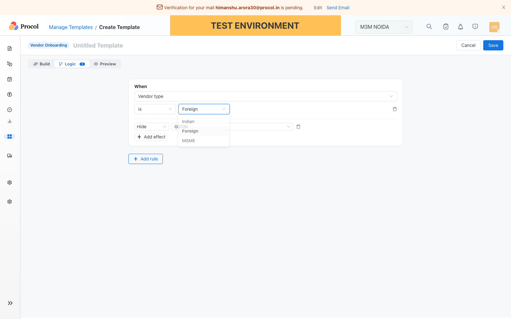</a><a href="shots/TS_062-foreign.png" target="_blank">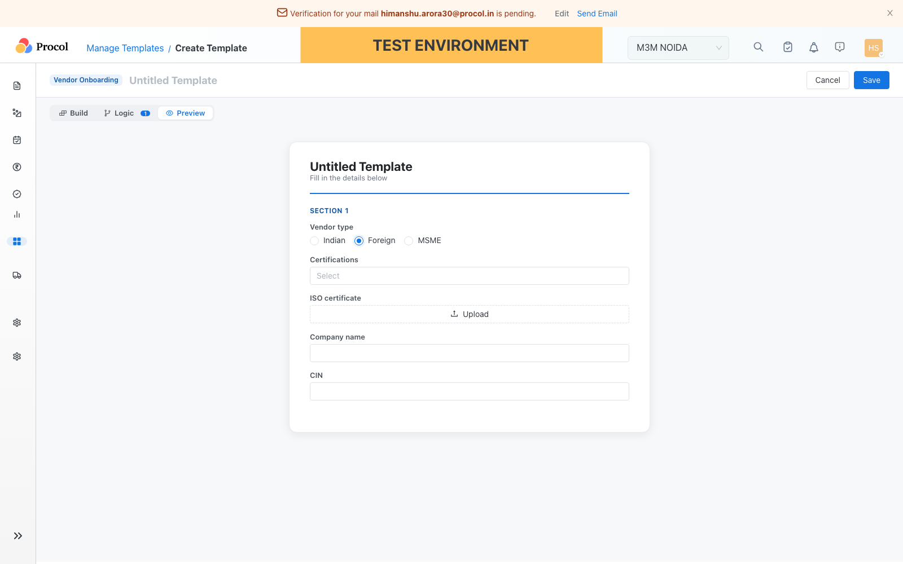</a></td></tr><tr class="row-pass"><td class="id">TS_063<div class="lay">API+UI</div></td><td><b>The five comparisons</b><div class="sub">Change the comparison to each of: is, is not, is empty, is not empty, contains.</div><div class="exp"><b>Expected:</b> &#x27;is empty&#x27; / &#x27;is not empty&#x27; hide the value box. For a text controller the value is a free text box; for an option controller it is the option list. Only these 5 are offered (the backend fires only these).</div></td><td><span class="v v-pass">Pass</span></td><td class="act">[API] Pass — ✔ comparisons stored: IS, IS, CONTAINS, IS NOT NULL, IS NULL, IS NOT; empty / not-empty rules carry no value<br>[UI] Pass — ✔ comparisons: is, is not, is empty, is not empty, contains ✔ for a text controller the value is a free text box ✔ &#x27;is empty&#x27; hides the value box ✔ &#x27;is not empty&#x27; hides it too</td><td class="th"><a href="shots/TS_063.png" target="_blank">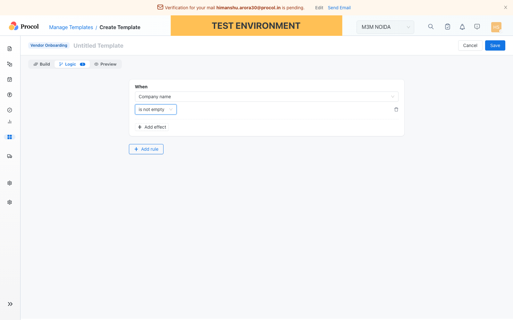</a></td></tr><tr class="row-pass"><td class="id">TS_064<div class="lay">API+UI</div></td><td><b>The four effects</b><div class="sub">On one rule add four effects: Show, Hide, Make required, Make optional on four targets.</div><div class="exp"><b>Expected:</b> Saved actions: Show → mode_type write; Hide → mode_type hidden + is_required false + value null; Make required → mode_type write + is_required true; Make optional → is_required false. Preview reflects each.</div></td><td><span class="v v-pass">Pass</span></td><td class="act">[API] Pass — ✔ hidden / write / is_required true / is_required false all present<br>[UI] Pass — ✔ effects: Show, Hide, Make required, Make optional ✔ before: Udyam hidden, Company name*, CIN optional ✔ MSME → Udyam number shown (hidden field shown by a rule, TS_066) ✔ CIN becomes required (*) ✔ Company name loses its * ✔ GSTIN hidden</td><td class="th"><a href="shots/TS_064.png" target="_blank">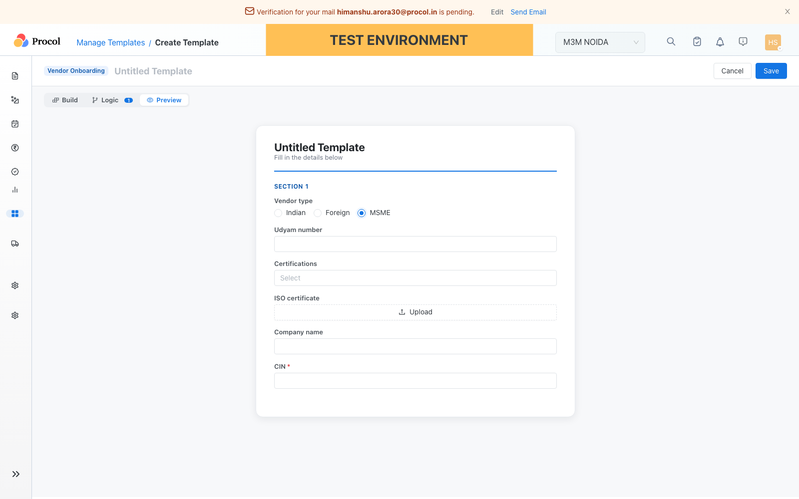</a></td></tr><tr class="row-pass"><td class="id">TS_065<div class="lay">UI</div></td><td><b>Preview runs the rules live</b><div class="sub">Preview tab: pick &#x27;Foreign&#x27; in Vendor type.</div><div class="exp"><b>Expected:</b> GSTIN disappears at once; picking &#x27;Indian&#x27; brings it back. A &#x27;Make required&#x27; effect adds the red * live. Values typed in Preview are never saved.</div></td><td><span class="v v-pass">Pass</span></td><td class="act">[UI] Pass — checked inside TS_062: ✔ choosing Foreign hides GSTIN at once (TS_065)</td><td class="th"><a href="shots/TS_062-rule.png" target="_blank"></a><a href="shots/TS_062-foreign.png" target="_blank"></a></td></tr><tr class="row-pass"><td class="id">TS_066<div class="lay">UI</div></td><td><b>Hidden by default, shown by a rule</b><div class="sub">Field &#x27;Udyam number&#x27; Visibility = Hidden; rule When Vendor type is MSME → Show it.</div><div class="exp"><b>Expected:</b> Preview: hidden until MSME is picked, then shown. Saved template: field mode_type &#x27;hidden&#x27; + rule action mode_type &#x27;write&#x27;.</div></td><td><span class="v v-pass">Pass</span></td><td class="act">[UI] Pass — checked inside TS_064: ✔ MSME → Udyam number shown (hidden field shown by a rule, TS_066)</td><td class="th"><a href="shots/TS_064.png" target="_blank"></a></td></tr><tr class="row-pass"><td class="id">TS_067<div class="lay">UI</div></td><td><b>Conflicting rules are warned, last rule wins</b><div class="sub">Rule 1 hides &#x27;GSTIN&#x27; when Vendor type is Foreign; Rule 2 shows &#x27;GSTIN&#x27; when Country is empty.</div><div class="exp"><b>Expected:</b> Yellow warning &#x27;Conflicting rules on: gstin — A field is both shown/required and hidden by different rules. Last rule wins at runtime.&#x27; Save is still allowed. In Preview with both conditions true, the later rule&#x27;s effect applies.</div></td><td><span class="v v-pass">Pass</span></td><td class="act">[UI] Pass — ✔ warning: &#x27;Conflicting rules on: gstin A field is both shown/required and hidden by different rules. Last rule wins at runtime.&#x27; ✔ with both true (Foreign and Company name empty) GSTIN shows — rule 2 (later) wins</td><td class="th"><a href="shots/TS_067-warning.png" target="_blank">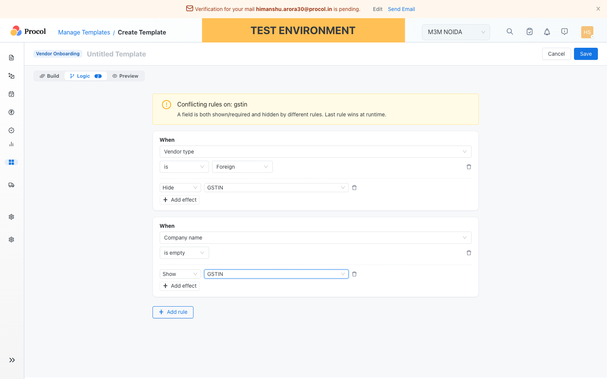</a><a href="shots/TS_067-preview.png" target="_blank">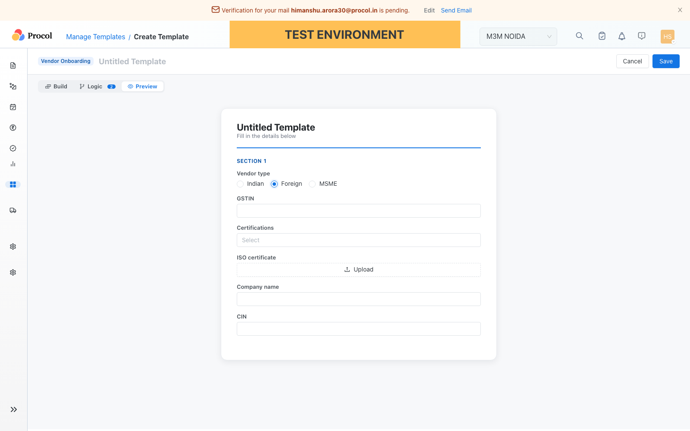</a></td></tr><tr class="row-record"><td class="id">TS_068<div class="lay">UI</div></td><td><b>A rule with no controller or no target is ignored on save</b><div class="sub">Add a rule, leave the controlling field empty; Save.</div><div class="exp"><b>Expected:</b> Save succeeds; the incomplete rule is dropped from conditional_block (not an error). Reopening the template shows it gone. Product to confirm this silent drop is acceptable.</div></td><td><span class="v v-record">Record</span></td><td class="act">[UI] Record — ✔ saved (200) — &#x27;Template created successfully&#x27; • 2 rules on screen, 1 sent — the rule with no controlling field was dropped without a word</td><td class="th"><a href="shots/TS_068.png" target="_blank"></a></td></tr><tr class="row-pass"><td class="id">TS_069<div class="lay">API+UI</div></td><td><b>Rule value by option id survives renaming the option</b><div class="sub">Save a rule on option &#x27;Foreign&#x27;; rename the option to &#x27;Overseas&#x27;; save; reopen; test in Preview.</div><div class="exp"><b>Expected:</b> The rule still fires for the renamed option (ids are compared, not labels).</div></td><td><span class="v v-pass">Pass</span></td><td class="act">[API] Pass — ✔ option now {id: vtFor1, value: Overseas} ✔ rule 1 still compares against the same option id<br>[UI] Pass — ✔ &#x27;Template updated successfully&#x27; (TS_082: edit and save) ✔ the rule&#x27;s value now reads &#x27;Overseas&#x27; ✔ picking Overseas still hides GSTIN</td><td class="th"><a href="shots/TS_069.png" target="_blank"></a></td></tr><tr class="row-pass"><td class="id">TS_070<div class="lay">API</div></td><td><b>Rules across sections</b><div class="sub">Controller in Section 1, target in Section 2.</div><div class="exp"><b>Expected:</b> Allowed; Preview hides/shows the target in its section; a section with every field hidden is not rendered in Preview.</div></td><td><span class="v v-pass">Pass</span></td><td class="act">[API] Pass — ✔ controller vendor_type (section 1) → target udyam_number (section 2)</td><td class="th"></td></tr><tr class="row-pass"><td class="id">TS_071<div class="lay">UI</div></td><td><b>Delete a rule and an effect</b><div class="sub">Click the bin on an effect row, then on the rule.</div><div class="exp"><b>Expected:</b> Effect removed; rule removed; badge count updates; the saved conditional_block no longer carries them.</div></td><td><span class="v v-pass">Pass</span></td><td class="act">[UI] Pass — ✔ badge 2 ✔ effect removed ✔ rule removed, badge 1</td><td class="th"><a href="shots/TS_071.png" target="_blank"></a></td></tr><tr class="row-record"><td class="id">TS_072<div class="lay">UI</div></td><td><b>Rule on a text field with &#x27;contains&#x27;</b><div class="sub">When &#x27;Company name&#x27; contains &#x27;Pvt&#x27; → Make required &#x27;CIN&#x27;.</div><div class="exp"><b>Expected:</b> Preview: typing &#x27;ABC Pvt Ltd&#x27; adds * to CIN; the check is a plain substring, case-sensitive (&#x27;pvt&#x27; does not match). Product to confirm case handling.</div></td><td><span class="v v-record">Record</span></td><td class="act">[UI] Record — ✔ &#x27;ABC Pvt Ltd&#x27; → CIN* • &#x27;abc pvt ltd&#x27; → CIN stays optional (plain substring match, case-sensitive)</td><td class="th"><a href="shots/TS_072.png" target="_blank"></a></td></tr><tr class="row-pass"><td class="id">TS_073<div class="lay">UI</div></td><td><b>Rule target cannot be the controller itself</b><div class="sub">Open the target picker of a rule whose controller is &#x27;Vendor type&#x27;.</div><div class="exp"><b>Expected:</b> &#x27;Vendor type&#x27; is not offered as a target.</div></td><td><span class="v v-pass">Pass</span></td><td class="act">[UI] Pass — ✔ targets: GSTIN, Udyam number, Certifications, ISO certificate, Company name, CIN</td><td class="th"><a href="shots/TS_073.png" target="_blank"></a></td></tr><tr class="row-pass"><td class="id">TS_074<div class="lay">UI</div></td><td><b>Reopening a saved template rebuilds the same rules</b><div class="sub">Save a template with 2 rules × 2 effects; reopen.</div><div class="exp"><b>Expected:</b> Logic tab shows 2 rules with the same controller, comparison, value and effects (the backend&#x27;s action rows are grouped back per target: hidden → Hide, is_required true → Make required, write → Show, is_required false → Make optional).</div></td><td><span class="v v-pass">Pass</span></td><td class="act">[UI] Pass — ✔ &#x27;Template created successfully&#x27; and back on the list ✔ the new row is in the list with type &#x27;Vendor Onboarding&#x27; (TS_081 / TS_087) ✔ row click opens /template-studio/Z05ja1E= with the name filled ✔ sections: Section 1 7 / Bank details 1 ✔ rule 1: When Vendor type is Foreign Hide GSTIN Make required Account number Add effect ✔ rule 2: When Certifications contains ISO 9001 Show ISO certificate Add effect</td><td class="th"><a href="shots/TS_074-list.png" target="_blank"></a><a href="shots/TS_074-reopened.png" target="_blank"></a></td></tr><tr class="row-pass"><td class="id">TS_075<div class="lay">UI</div></td><td><b>Broken reference blocks Save</b><div class="sub">Delete a field used by a rule (&#x27;Delete anyway&#x27;), then Save.</div><div class="exp"><b>Expected:</b> &#x27;A rule or field references a missing field: &lt;key&gt;&#x27;. Fixing or deleting the rule lets Save through.</div></td><td><span class="v v-pass">Pass</span></td><td class="act">[UI] Pass — checked inside TS_024: ✔ Save refused (TS_075): &#x27;A rule or field references a missing field: vendor_type&#x27;</td><td class="th"><a href="shots/TS_024-confirm.png" target="_blank"></a><a href="shots/TS_024-after.png" target="_blank"></a></td></tr><tr class="row-record"><td class="id">TS_075B<div class="lay">API</div></td><td><b>API: a rule pointing at a field that does not exist</b><div class="sub"></div><div class="exp"><b>Expected:</b> </div></td><td><span class="v v-record">Record</span></td><td class="act">[API] Record — ✘ backend accepts a rule whose target field does not exist (200) — the studio blocks it (&#x27;A rule or field references a missing field&#x27;)<details><summary>API evidence</summary><pre>POST (rule targets ghost_field) → HTTP 200 in 405 ms<br>  reply: {&quot;uuid&quot;:&quot;Tlhja2Q=&quot;,&quot;name&quot;:&quot;QA_Platform TS 10290717 VO broken rule&quot;,&quot;template_for&quot;:[&quot;rfi&quot;,&quot;vendor_onboarding&quot;],&quot;template_type&quot;:&quot;custom&quot;,&quot;user_uuid&quot;:&quot;WGtaTg==&quot;,&quot;forms&quot;:[{&quot;order&quot;:1,&quot;name&quot;:&quot;Section 1&quot;,&quot;description&quot;:&quot;&quot;,&quot;config&quot;:{&quot;type&quot;:&quot;form&quot;},&quot;page_headers&quot;:[],&quot;page_response_headers&quot;:[{&quot;key_attribute&quot;:&quot;ctl&quot;,&quot;name&quot;:&quot;Ctl&quot;,&quot;description&quot;:&quot;&quot;,&quot;input_type&quot;:&quot;radio&quot;,&quot;widget_type&quot;:&quot;default&quot;,&quot;configuration&quot;:{&quot;field_type&quot;:&quot;participant&quot;,&quot;is_required&quot;:false,&quot;mode_type&quot;:&quot;write&quot;,&quot;cell_options&quot;:[{&quot;id&quot;:&quot;c1&quot;,&quot;value&quot;:&quot;Y&quot;}]}}],&quot;evaluators&quot;:[]}],&quot;configurations&quot;:{&quot;conditional_block&quot;:[{&quot;conditions&quot;:[{&quot;comparison&quot;:&quot;IS&quot;,&quot;key_attribute&quot;:&quot;ctl&quot;,&quot;value&quot;:&quot;c1&quot;}],&quot;logical_operator&quot;:&quot;OR&quot;,&quot;actions&quot;:[{&quot;key_attribute&quot;:&quot;ghost_field</pre></details></td><td class="th"></td></tr></tbody></table></div></details><details class="mod"><summary><span>J. Preview tab</span><span class="cnt">3 cases · 1 Record · 2 Pass</span></summary><div class="tw"><table><thead><tr><th>ID</th><th>Case</th><th>Result</th><th>What happened</th><th>Screens</th></tr></thead><tbody><tr class="row-pass"><td class="id">TS_076<div class="lay">UI</div></td><td><b>Preview renders the whole form by section</b><div class="sub">Open Preview with 2 sections and several types.</div><div class="exp"><b>Expected:</b> Card titled with the template name (or &#x27;Untitled Template&#x27;), &#x27;Fill in the details below&#x27;, one block per section with its name, each field with label, * if required, helper text, and the right control (text, text area, number, date picker, dropdown, multi-select, radio buttons, Upload button). Empty template shows &#x27;Add fields to see a live preview&#x27;.</div></td><td><span class="v v-pass">Pass</span></td><td class="act">[UI] Pass — ✔ card titled with the template name and &#x27;Fill in the details below&#x27; ✔ sections: SECTION 1, BANK DETAILS (shown in capitals by the page style) ✔ right controls: radio buttons, date picker, text area, number box, upload button ✔ no API call while previewing (TS_078) ✔ empty template: &#x27;Add fields to see a live preview&#x27;</td><td class="th"><a href="shots/TS_076.png" target="_blank"></a></td></tr><tr class="row-record"><td class="id">TS_077<div class="lay">UI</div></td><td><b>Read-only fields in preview</b><div class="sub">A field with Visibility Read-only.</div><div class="exp"><b>Expected:</b> As coded, the preview shows it as a normal editable control (only &#x27;hidden&#x27; is handled). Expected: read-only look. Record as a preview-only gap.</div></td><td><span class="v v-record">Record</span></td><td class="act">[UI] Record — checked inside TS_033: ✘ the read-only field in Preview is still typeable (TS_077)</td><td class="th"><a href="shots/TS_033.png" target="_blank"></a></td></tr><tr class="row-pass"><td class="id">TS_078<div class="lay">UI</div></td><td><b>Preview does not call any API or save values</b><div class="sub">Fill values in Preview, switch to Build and back.</div><div class="exp"><b>Expected:</b> No network calls for the preview; values reset when the tab is re-rendered; nothing is persisted.</div></td><td><span class="v v-pass">Pass</span></td><td class="act">[UI] Pass — checked inside TS_076: ✔ no API call while previewing (TS_078)</td><td class="th"><a href="shots/TS_076.png" target="_blank"></a></td></tr></tbody></table></div></details><details class="mod" open><summary><span>K. Save, reopen and the saved data</span><span class="cnt">11 cases · 1 Fail · 9 Pass · 1 Not run</span></summary><div class="tw"><table><thead><tr><th>ID</th><th>Case</th><th>Result</th><th>What happened</th><th>Screens</th></tr></thead><tbody><tr class="row-pass"><td class="id">TS_079<div class="lay">UI</div></td><td><b>Template name is required</b><div class="sub">Leave &#x27;Untitled Template&#x27; empty; Save.</div><div class="exp"><b>Expected:</b> &#x27;Template name is required&#x27;; nothing is sent. Whitespace-only name is also refused.</div></td><td><span class="v v-pass">Pass</span></td><td class="act">[UI] Pass — ✔ empty name: &#x27;Template name is required&#x27; ✔ spaces only: &#x27;Template name is required&#x27; ✔ nothing sent</td><td class="th"><a href="shots/TS_079.png" target="_blank"></a></td></tr><tr class="row-pass"><td class="id">TS_080<div class="lay">UI</div></td><td><b>At least one section and one field</b><div class="sub">Delete all fields; Save.</div><div class="exp"><b>Expected:</b> &#x27;Add at least one field&#x27;.</div></td><td><span class="v v-pass">Pass</span></td><td class="act">[UI] Pass — ✔ &#x27;Add at least one field&#x27;</td><td class="th"><a href="shots/TS_080.png" target="_blank"></a></td></tr><tr class="row-pass"><td class="id">TS_081<div class="lay">API</div></td><td><b>Save creates the template with the right shape</b><div class="sub">Build a 2-section template and Save; inspect POST /templates.</div><div class="exp"><b>Expected:</b> Body: name, template_for [&#x27;rfi&#x27;,&#x27;vendor_onboarding&#x27;] (bare names; the server stores t-rfi / t-vendor_onboarding), forms[] each {order, name, description, config:{type:&#x27;form&#x27;}, page_headers:[], page_response_headers:[widgets], evaluators:[]}, configurations {conditional_block?, auto_fetch_hash_array?, entity_mappings?, widget_mapping?}. Widgets carry key_attribute, name, description, input_type, widget_type &#x27;default&#x27;, configuration {field_type &#x27;participant&#x27;, is_required, mode_type, cell_options?, dropdown_data?, disable_paste?, populate_on_select?, dependent_widgets?}, validations?, regex?, file_type?, auto_fetch_hash?, autofill?. Client-only data (nanoid, clientMeta) is never sent. Toast &#x27;Template created successfully&#x27;; back to the list; the new row shows Type &#x27;Vendor Onboarding&#x27;.</div></td><td><span class="v v-pass">Pass</span></td><td class="act">[API] Pass — ✔ create answers 200 with a uuid ✔ stored template_for = [&quot;rfi&quot;,&quot;vendor_onboarding&quot;] ✔ type_identifier = [&quot;t-rfi&quot;,&quot;t-vendor_onboarding&quot;] (server adds the t- prefix) ✔ 2 sections stored (got 2) ✔ 16 fields stored (got 16) ✔ every field comes back exactly as sent (all settings round-trip) ✔ conditional_block, auto_fetch_hash_array, entity_mappings and widget_mapping come back exactly as sent<details><summary>API evidence</summary><pre>POST /templates (studio payload) → HTTP 200 in 370 ms<br>  sent: {&quot;name&quot;:&quot;QA_Platform TS 10290717 VO full&quot;,&quot;template_for&quot;:[&quot;rfi&quot;,&quot;vendor_onboarding&quot;],&quot;forms&quot;:&quot;2 forms&quot;,&quot;configurations&quot;:[&quot;conditional_block&quot;,&quot;auto_fetch_hash_array&quot;,&quot;entity_mappings&quot;,&quot;widget_mapping&quot;]}<br>  reply: {&quot;uuid&quot;:&quot;RFFja2Q=&quot;,&quot;name&quot;:&quot;QA_Platform TS 10290717 VO full&quot;,&quot;template_for&quot;:[&quot;rfi&quot;,&quot;vendor_onboarding&quot;],&quot;template_type&quot;:&quot;custom&quot;,&quot;user_uuid&quot;:&quot;WGtaTg==&quot;,&quot;forms&quot;:[{&quot;order&quot;:1,&quot;name&quot;:&quot;Company details&quot;,&quot;description&quot;:&quot;Legal identity of the vendor&quot;,&quot;config&quot;:{&quot;type&quot;:&quot;form&quot;},&quot;page_headers&quot;:[],&quot;page_response_headers&quot;:[{&quot;key_attribute&quot;:&quot;legal_name&quot;,&quot;name&quot;:&quot;Legal name&quot;,&quot;description&quot;:&quot;As printed on the GST certificate&quot;,&quot;input_type&quot;:&quot;string&quot;,&quot;widget_type&quot;:&quot;default&quot;,&quot;configuration&quot;:{&quot;field_type&quot;:&quot;participant&quot;,&quot;is_required&quot;:true,&quot;mode_type&quot;:&quot;write&quot;},&quot;regex&quot;:&quot;^[A-Za-z0-9 .&amp;-]+$&quot;,&quot;auto_fetch_hash&quot;:{&quot;object_type&quot;:&quot;Company&quot;,&quot;key&quot;:&quot;name&quot;}},{&quot;key_attribute&quot;:&quot;pan&quot;,&quot;name&quot;:&quot;PAN&quot;,&quot;description&quot;:&quot;&quot;,&quot;input_type&quot;:&quot;string&quot;</pre></details></td><td class="th"></td></tr><tr class="row-pass"><td class="id">TS_082<div class="lay">API</div></td><td><b>Edit and save an existing template</b><div class="sub">Open a saved template, change a label, add a field, remove a rule; Save.</div><div class="exp"><b>Expected:</b> PATCH /templates/&lt;uuid&gt; with the full body; toast &#x27;Template updated successfully&#x27;. Reopen: all changes present, untouched settings unchanged (fields the studio does not edit round-trip untouched).</div></td><td><span class="v v-pass">Pass</span></td><td class="act">[API] Pass — ✔ update answers 200 ✔ label now &quot;Legal name (registered)&quot;, key still legal_name ✔ the added field is stored ✔ rules now 5<details><summary>API evidence</summary><pre>PATCH /templates/:uuid → HTTP 200 in 492 ms<br>  sent: {&quot;changed&quot;:[&quot;legal_name label&quot;,&quot;+website field&quot;,&quot;6 → 5 rules&quot;,&quot;option Foreign → Overseas&quot;]}<br>  reply: {&quot;uuid&quot;:&quot;RFFja2Q=&quot;,&quot;name&quot;:&quot;QA_Platform TS 10290717 VO full&quot;,&quot;template_for&quot;:[&quot;rfi&quot;,&quot;vendor_onboarding&quot;],&quot;template_type&quot;:&quot;custom&quot;,&quot;user_uuid&quot;:&quot;WGtaTg==&quot;,&quot;forms&quot;:[{&quot;order&quot;:1,&quot;name&quot;:&quot;Company details&quot;,&quot;description&quot;:&quot;Legal identity of the vendor&quot;,&quot;config&quot;:{&quot;type&quot;:&quot;form&quot;},&quot;page_headers&quot;:[],&quot;page_response_headers&quot;:[{&quot;key_attribute&quot;:&quot;legal_name&quot;,&quot;name&quot;:&quot;Legal name (registered)&quot;,&quot;description&quot;:&quot;As printed on the GST certificate&quot;,&quot;input_type&quot;:&quot;string&quot;,&quot;widget_type&quot;:&quot;default&quot;,&quot;configuration&quot;:{&quot;field_type&quot;:&quot;participant&quot;,&quot;is_required&quot;:true,&quot;mode_type&quot;:&quot;write&quot;},&quot;regex&quot;:&quot;^[A-Za-z0-9 .&amp;-]+$&quot;,&quot;auto_fetch_hash&quot;:{&quot;object_type&quot;:&quot;Company&quot;,&quot;key&quot;:&quot;name&quot;}},{&quot;key_attribute&quot;:&quot;pan&quot;,&quot;name&quot;:&quot;PAN&quot;,&quot;description&quot;:&quot;&quot;,&quot;input_t</pre></details></td><td class="th"></td></tr><tr class="row-pass"><td class="id">TS_083<div class="lay">API</div></td><td><b>Save with nothing changed</b><div class="sub">Open a template and Save without editing.</div><div class="exp"><b>Expected:</b> Backend answers 422 error 758 (&#x27;no change&#x27;) when name, widgets, configurations and forms are all absent — but the studio always sends everything, so the save succeeds. Just confirm no error and no duplicate.</div></td><td><span class="v v-pass">Pass</span></td><td class="act">[API] Pass — ✔ the studio always sends the full body, so an unchanged save answers 200 (no 758 &#x27;no change&#x27;)<details><summary>API evidence</summary><pre>PATCH with the same body → HTTP 200 in 399 ms<br>  reply: {&quot;uuid&quot;:&quot;RFFja2Q=&quot;,&quot;name&quot;:&quot;QA_Platform TS 10290717 VO full&quot;,&quot;template_for&quot;:[&quot;rfi&quot;,&quot;vendor_onboarding&quot;],&quot;template_type&quot;:&quot;custom&quot;,&quot;user_uuid&quot;:&quot;WGtaTg==&quot;,&quot;forms&quot;:[{&quot;order&quot;:1,&quot;name&quot;:&quot;Company details&quot;,&quot;description&quot;:&quot;Legal identity of the vendor&quot;,&quot;config&quot;:{&quot;type&quot;:&quot;form&quot;},&quot;page_headers&quot;:[],&quot;page_response_headers&quot;:[{&quot;key_attribute&quot;:&quot;legal_name&quot;,&quot;name&quot;:&quot;Legal name (registered)&quot;,&quot;description&quot;:&quot;As printed on the GST certificate&quot;,&quot;input_type&quot;:&quot;string&quot;,&quot;widget_type&quot;:&quot;default&quot;,&quot;configuration&quot;:{&quot;field_type&quot;:&quot;participant&quot;,&quot;is_required&quot;:true,&quot;mode_type&quot;:&quot;write&quot;},&quot;regex&quot;:&quot;^[A-Za-z0-9 .&amp;-]+$&quot;,&quot;auto_fetch_hash&quot;:{&quot;object_type&quot;:&quot;Company&quot;,&quot;key&quot;:&quot;name&quot;}},{&quot;key_attribute&quot;:&quot;pan&quot;,&quot;name&quot;:&quot;PAN&quot;,&quot;description&quot;:&quot;&quot;,&quot;input_t</pre></details></td><td class="th"></td></tr><tr class="row-pass"><td class="id">TS_084<div class="lay">API+UI</div></td><td><b>Same template name twice</b><div class="sub">Create two templates named &#x27;Vendor KYC&#x27;.</div><div class="exp"><b>Expected:</b> Allowed (no uniqueness rule). Product to confirm; the list then shows two identical names.</div></td><td><span class="v v-pass">Pass</span></td><td class="act">[API] Pass — ✔ the second one is refused: 422 8 &quot;Validation failed: Template name has already been taken&quot; — names are unique per company; the studio has no pre-check, so the user only learns it on Save<br>[UI] Pass — ✔ POST 422; message &#x27;Validation failed: Template name has already been taken | Failed to save template&#x27; • the name is only checked by the backend on Save; the work stays on screen so the name can be changed<details><summary>API evidence</summary><pre>POST #1 → HTTP 200 in 396 ms<br>  reply: {&quot;uuid&quot;:&quot;cGNja2Q=&quot;}<br>POST #2 with the same name → HTTP 422 in 368 ms<br>  reply: {&quot;error&quot;:{&quot;code&quot;:8,&quot;message&quot;:&quot;Validation failed: Template name has already been taken&quot;}}</pre></details></td><td class="th"><a href="shots/TS_084.png" target="_blank"></a></td></tr><tr class="row-pass"><td class="id">TS_085<div class="lay">API</div></td><td><b>Backend rejects a widget without key/name/field_type</b><div class="sub">Send POST /templates with a widget missing configuration.field_type (Postman).</div><div class="exp"><b>Expected:</b> 422 &#x27;Invalid Form&#x27; (792); the studio always sends field_type &#x27;participant&#x27;, so this is an API-only check.</div></td><td><span class="v v-pass">Pass</span></td><td class="act">[API] Pass — ✔ no configuration.field_type: refused with 422 792 &quot;Invalid Form&quot; ✔ no key_attribute: refused with 422 792 &quot;Invalid Form&quot; ✔ no name: refused with 422 792 &quot;Invalid Form&quot;<details><summary>API evidence</summary><pre>POST /templates (no configuration.field_type) → HTTP 422 in 423 ms<br>  reply: {&quot;error&quot;:{&quot;code&quot;:792,&quot;message&quot;:&quot;Invalid Form&quot;}}<br>POST /templates (no key_attribute) → HTTP 422 in 294 ms<br>  reply: {&quot;error&quot;:{&quot;code&quot;:792,&quot;message&quot;:&quot;Invalid Form&quot;}}<br>POST /templates (no name) → HTTP 422 in 314 ms<br>  reply: {&quot;error&quot;:{&quot;code&quot;:792,&quot;message&quot;:&quot;Invalid Form&quot;}}</pre></details></td><td class="th"></td></tr><tr class="row-not-run"><td class="id">TS_086<div class="lay">API+UI</div></td><td><b>Workspace on vendor onboarding v3 expects fields in page_headers</b><div class="sub">Save a studio template on a workspace with vendor onboarding version v3; then edit it.</div><div class="exp"><b>Expected:</b> On update the backend validates page_headers (must be a non-empty array) when the workspace is v3; the studio sends page_headers [] and fields in page_response_headers → 422 &#x27;Invalid Form&#x27;. Likely defect on v3 workspaces — record the result.</div></td><td><span class="v v-not-run">Not run</span></td><td class="act">[API] Not run — • M3M NOIDA is on vendor onboarding v2 (dashboard_configuration.vendor_onboarding_version = v2); a v3 company is needed.<br>[UI] Not run — • M3M NOIDA is on v2.</td><td class="th"></td></tr><tr class="row-pass"><td class="id">TS_087<div class="lay">API</div></td><td><b>Fields count / sections in list after save</b><div class="sub">Save a template with 2 sections; return to the list.</div><div class="exp"><b>Expected:</b> Row present; &#x27;Fields&#x27; column shows 2 or &#x27;-&#x27; (see TS_005).</div></td><td><span class="v v-pass">Pass</span></td><td class="act">[API] Pass — ✔ the new template is in GET /templates (saved): &quot;QA_Platform TS 10290717 VO full&quot;, template_for [&quot;rfi&quot;,&quot;vendor_onboarding&quot;] • the list row carries forms: no forms in the list reply — the studio&#x27;s Fields column falls back to &#x27;-&#x27; when the list reply has no forms</td><td class="th"></td></tr><tr class="row-pass"><td class="id">TS_088<div class="lay">API</div></td><td><b>Create needs template:create_record, edit needs template:update_record and same company</b><div class="sub">Try to Save as a user without the permission; try PATCH a template of another company via API.</div><div class="exp"><b>Expected:</b> 403 from the backend (policy create? / update? checks the permission and that the template belongs to an allowed company); the studio shows &#x27;Failed to save template&#x27;.</div></td><td><span class="v v-pass">Pass</span></td><td class="act">[API] Pass — ✔ all refused: 422, 422, 422, 422 • a signed-in user WITHOUT template permissions was not available in this session (the given login is a Procol employee / super admin) — the permission-denied path is not exercised here<details><summary>API evidence</summary><pre>GET without access-token → HTTP 422 in 302 ms<br>  reply: {&quot;error&quot;:{&quot;code&quot;:2,&quot;message&quot;:&quot;Insufficient parameters&quot;}}<br>POST without access-token → HTTP 422 in 381 ms<br>  reply: {&quot;error&quot;:{&quot;code&quot;:2,&quot;message&quot;:&quot;Insufficient parameters&quot;}}<br>PATCH without access-token → HTTP 422 in 281 ms<br>  reply: {&quot;error&quot;:{&quot;code&quot;:2,&quot;message&quot;:&quot;Insufficient parameters&quot;}}<br>DELETE without access-token → HTTP 422 in 384 ms<br>  reply: {&quot;error&quot;:{&quot;code&quot;:2,&quot;message&quot;:&quot;Insufficient parameters&quot;}}</pre></details></td><td class="th"></td></tr><tr class="row-fail"><td class="id">TS_079B<div class="lay">API</div></td><td><b>API: template name empty or only spaces</b><div class="sub"></div><div class="exp"><b>Expected:</b> </div></td><td><span class="v v-fail">Fail</span></td><td class="act">[API] Fail — ✘ name &quot;&quot;: SAVED (200) ✘ name &quot;   &quot;: SAVED (200)<details><summary>API evidence</summary><pre>POST (name &quot;&quot;) → HTTP 200 in 738 ms<br>  reply: {&quot;uuid&quot;:&quot;WE5ja2Q=&quot;,&quot;name&quot;:&quot;&quot;}<br>POST (name &quot;   &quot;) → HTTP 200 in 387 ms<br>  reply: {&quot;uuid&quot;:&quot;WFFja2Q=&quot;,&quot;name&quot;:&quot;   &quot;}</pre></details></td><td class="th"></td></tr></tbody></table></div></details><details class="mod"><summary><span>L. The saved template on the vendor onboarding form (end to end)</span><span class="cnt">8 cases · 8 Not run</span></summary><div class="tw"><table><thead><tr><th>ID</th><th>Case</th><th>Result</th><th>What happened</th><th>Screens</th></tr></thead><tbody><tr class="row-not-run"><td class="id">TS_089<div class="lay">UI</div></td><td><b>Template appears when creating an onboarding event</b><div class="sub">Create a vendor onboarding event and look for the new template.</div><div class="exp"><b>Expected:</b> The studio template is offered like any other vendor-onboarding template (it is stored with the same template_for).</div></td><td><span class="v v-not-run">Not run</span></td><td class="act">[UI] Not run — • needs an onboarding v2 event in M3M NOIDA and a QA test vendor to fill the form; the given session cannot sign in as a vendor, and inviting a vendor on this company mails its team — not done without approval.</td><td class="th"></td></tr><tr class="row-not-run"><td class="id">TS_090<div class="lay">UI</div></td><td><b>Vendor sees sections, labels, helper text, required marks</b><div class="sub">Invite a QA test vendor (qa_&lt;stamp&gt;@example.com) and open the form.</div><div class="exp"><b>Expected:</b> Sections in order, fields in order, * on required, helper text under fields, hidden fields not shown, read-only fields not editable.</div></td><td><span class="v v-not-run">Not run</span></td><td class="act">[UI] Not run — • needs an onboarding v2 event in M3M NOIDA and a QA test vendor to fill the form; the given session cannot sign in as a vendor, and inviting a vendor on this company mails its team — not done without approval.</td><td class="th"></td></tr><tr class="row-not-run"><td class="id">TS_091<div class="lay">UI</div></td><td><b>Conditional logic on the real form</b><div class="sub">On the vendor form pick &#x27;Foreign&#x27;.</div><div class="exp"><b>Expected:</b> GSTIN hides (its value cleared and no longer required); picking &#x27;Indian&#x27; shows it again — same as the studio preview.</div></td><td><span class="v v-not-run">Not run</span></td><td class="act">[UI] Not run — • needs an onboarding v2 event in M3M NOIDA and a QA test vendor to fill the form; the given session cannot sign in as a vendor, and inviting a vendor on this company mails its team — not done without approval.</td><td class="th"></td></tr><tr class="row-not-run"><td class="id">TS_092<div class="lay">UI</div></td><td><b>External validation runs on submit</b><div class="sub">Enter a wrong PAN and submit.</div><div class="exp"><b>Expected:</b> The PAN check runs through the provider and the form shows the failure; a correct PAN passes. Autofill (TS_047) fills the target after a pass.</div></td><td><span class="v v-not-run">Not run</span></td><td class="act">[UI] Not run — • needs an onboarding v2 event in M3M NOIDA and a QA test vendor to fill the form; the given session cannot sign in as a vendor, and inviting a vendor on this company mails its team — not done without approval.</td><td class="th"></td></tr><tr class="row-not-run"><td class="id">TS_093<div class="lay">UI</div></td><td><b>Internal regex and &#x27;must equal&#x27; on the real form</b><div class="sub">Enter a 9-digit mobile; enter different account numbers in the two fields.</div><div class="exp"><b>Expected:</b> Both refused with the authored messages.</div></td><td><span class="v v-not-run">Not run</span></td><td class="act">[UI] Not run — • needs an onboarding v2 event in M3M NOIDA and a QA test vendor to fill the form; the given session cannot sign in as a vendor, and inviting a vendor on this company mails its team — not done without approval.</td><td class="th"></td></tr><tr class="row-not-run"><td class="id">TS_094<div class="lay">UI</div></td><td><b>Prefill, data source, cascade, populate-on-select, reset on the real form</b><div class="sub">Open the form for a vendor whose company already has a GSTIN; change Country.</div><div class="exp"><b>Expected:</b> GSTIN pre-filled; remote dropdown loads options; State options depend on Country; changing Country clears State/City; choosing a bank fills IFSC.</div></td><td><span class="v v-not-run">Not run</span></td><td class="act">[UI] Not run — • needs an onboarding v2 event in M3M NOIDA and a QA test vendor to fill the form; the given session cannot sign in as a vendor, and inviting a vendor on this company mails its team — not done without approval.</td><td class="th"></td></tr><tr class="row-not-run"><td class="id">TS_095<div class="lay">UI</div></td><td><b>Write back after submission</b><div class="sub">Submit the form; check the vendor company&#x27;s misc.</div><div class="exp"><b>Expected:</b> The answer is stored under the field key in the company&#x27;s misc (and in extended fields if configured).</div></td><td><span class="v v-not-run">Not run</span></td><td class="act">[UI] Not run — • needs an onboarding v2 event in M3M NOIDA and a QA test vendor to fill the form; the given session cannot sign in as a vendor, and inviting a vendor on this company mails its team — not done without approval.</td><td class="th"></td></tr><tr class="row-not-run"><td class="id">TS_096<div class="lay">UI</div></td><td><b>Editing a template already used by a running event</b><div class="sub">Add a required field to a template whose event is live; reopen a vendor&#x27;s half-filled form.</div><div class="exp"><b>Expected:</b> Record what happens (new field shown? old answers kept?). Product to confirm the intended behaviour; the studio gives no warning when editing a template in use.</div></td><td><span class="v v-not-run">Not run</span></td><td class="act">[UI] Not run — • needs an onboarding v2 event in M3M NOIDA and a QA test vendor to fill the form; the given session cannot sign in as a vendor, and inviting a vendor on this company mails its team — not done without approval.</td><td class="th"></td></tr></tbody></table></div></details><details class="mod" open><summary><span>M. &#x27;Generate with AI&#x27; (Vendor Onboarding only)</span><span class="cnt">4 cases · 2 Fail · 2 Pass</span></summary><div class="tw"><table><thead><tr><th>ID</th><th>Case</th><th>Result</th><th>What happened</th><th>Screens</th></tr></thead><tbody><tr class="row-pass"><td class="id">TS_097<div class="lay">UI</div></td><td><b>AI option is only on the Vendor Onboarding card</b><div class="sub">Open the type picker.</div><div class="exp"><b>Expected:</b> &#x27;Generate with AI&#x27; appears under Vendor Onboarding only (aiDraft true for that type).</div></td><td><span class="v v-pass">Pass</span></td><td class="act">[UI] Pass — ✔ cards with &#x27;Generate with AI&#x27;: Vendor Onboarding</td><td class="th"><a href="shots/TS_097.png" target="_blank"></a></td></tr><tr class="row-pass"><td class="id">TS_098<div class="lay">UI</div></td><td><b>Upload rules: PDF/JPG/JPEG/XLS/XLSX only, max 10 MB</b><div class="sub">Try a .docx, a 12 MB PDF, then a valid 2 MB PDF.</div><div class="exp"><b>Expected:</b> &#x27;Unsupported file type. Upload a PDF, JPG, or Excel file.&#x27; / &#x27;File size exceeds 10MB limit&#x27; / valid file starts &#x27;AI is reading your form…&#x27; (modal cannot be closed while busy).</div></td><td><span class="v v-pass">Pass</span></td><td class="act">[UI] Pass — ✔ modal &#x27;Generate template with AI — Upload a Vendor Onboarding document (PDF, JPG, or Excel)…&#x27; ✔ .docx: &#x27;Unsupported file type. Upload a PDF, JPG, or Excel file.&#x27; ✔ 11 MB pdf: &#x27;File size exceeds 10MB limit&#x27;</td><td class="th"><a href="shots/TS_098-modal.png" target="_blank"></a><a href="shots/TS_098.png" target="_blank"></a></td></tr><tr class="row-fail"><td class="id">TS_099<div class="lay">UI</div></td><td><b>AI draft opens in the editor for review</b><div class="sub">Upload a vendor registration form PDF.</div><div class="exp"><b>Expected:</b> POST /ask_ai_chats/vendor_onboarding_template_draft returns external_request_uuid; the studio polls /external_requests/&lt;uuid&gt; every 3 s; on &#x27;completed&#x27; the editor opens on /create?type=vendor_onboarding with the drafted sections and fields, nothing saved yet; Save works like TS_081.</div></td><td><span class="v v-fail">Fail</span></td><td class="act">[UI] Fail — ✘ the studio posts POST /ask_ai_chats/vendor_onboarding_template_draft → 404; message &#x27;Could not reach the AI service. Please try again.&#x27;</td><td class="th"><a href="shots/TS_099.png" target="_blank"></a></td></tr><tr class="row-fail"><td class="id">TS_100<div class="lay">API</div></td><td><b>AI endpoint missing or failing</b><div class="sub">Upload a valid file on an environment whose backend has no vendor_onboarding_template_draft route.</div><div class="exp"><b>Expected:</b> If the route is missing: &#x27;Could not reach the AI service. Please try again.&#x27; If the job fails: &#x27;AI could not generate a draft from this form. Please try again.&#x27; After ~5 minutes of pending: &#x27;This is taking longer than expected. Please try again.&#x27; The modal closes cleanly in every case.</div></td><td><span class="v v-fail">Fail</span></td><td class="act">[API] Fail — ✘ the endpoint the studio calls answers 404 &quot;Route you are looking for doesn&#x27;t exists&quot;<details><summary>API evidence</summary><pre>POST /ask_ai_chats/vendor_onboarding_template_draft → HTTP 404 in 281 ms<br>  reply: Route you are looking for doesn&#x27;t exists</pre></details></td><td class="th"></td></tr></tbody></table></div></details><details class="mod"><summary><span>N. Vendor Onboarding — Buyer Form</span><span class="cnt">12 cases · 11 Pass · 1 Not run</span></summary><div class="tw"><table><thead><tr><th>ID</th><th>Case</th><th>Result</th><th>What happened</th><th>Screens</th></tr></thead><tbody><tr class="row-pass"><td class="id">TS_101<div class="lay">API+UI</div></td><td><b>Default fields: keys fixed, custom keys editable</b><div class="sub">Select &#x27;Payment Terms&#x27; (default) then &#x27;Vendor Code&#x27; (custom).</div><div class="exp"><b>Expected:</b> Default field: Key box disabled with hint &#x27;Default field — key is fixed.&#x27; Custom field: key editable. Both allow label, type, required.</div></td><td><span class="v v-pass">Pass</span></td><td class="act">[API] Pass — ✔ all 13 standard keys present<br>[UI] Pass — ✔ Payment Terms: key box disabled — &#x27;Default field — key is fixed.&#x27; ✔ Vendor Code (custom): key editable</td><td class="th"><a href="shots/TS_101.png" target="_blank"></a></td></tr><tr class="row-pass"><td class="id">TS_102<div class="lay">UI</div></td><td><b>Add a custom field; key gets the _custom suffix</b><div class="sub">Add Text, label &#x27;Cost centre&#x27;.</div><div class="exp"><b>Expected:</b> Key &#x27;cost_centre_custom&#x27; auto-filled (only while the key is empty; later label edits do not change it).</div></td><td><span class="v v-pass">Pass</span></td><td class="act">[UI] Pass — ✔ key &#x27;cost_centre_custom&#x27; ✔ later label edits do not change it</td><td class="th"><a href="shots/TS_102.png" target="_blank"></a></td></tr><tr class="row-pass"><td class="id">TS_103<div class="lay">UI</div></td><td><b>Field types: Text, Number, Date, Dropdown, Formula</b><div class="sub">Change a custom field&#x27;s type to each value.</div><div class="exp"><b>Expected:</b> Type list has exactly these 5. Dropdown shows &#x27;Data source&#x27; (known sources list + URL box); Formula shows the formula editor; others show nothing extra. No validations/logic/sections exist for buyer forms.</div></td><td><span class="v v-pass">Pass</span></td><td class="act">[UI] Pass — ✔ types: Text, Number, Date, Dropdown, Formula ✔ Dropdown shows &#x27;Data source&#x27; (TS_104) ✔ Formula shows the formula editor ✔ no validations or logic for buyer forms</td><td class="th"><a href="shots/TS_103.png" target="_blank"></a></td></tr><tr class="row-pass"><td class="id">TS_104<div class="lay">UI</div></td><td><b>Dropdown data source for buyer fields</b><div class="sub">Pick a data source for &#x27;Region&#x27;.</div><div class="exp"><b>Expected:</b> configuration.dropdown_data holds the source URL; Preview says &#x27;Options load from the data source&#x27;. The 13 defaults already carry their /widget_data_mapping?type=… URLs.</div></td><td><span class="v v-pass">Pass</span></td><td class="act">[UI] Pass — checked inside TS_103: ✔ Dropdown shows &#x27;Data source&#x27; (TS_104)</td><td class="th"><a href="shots/TS_103.png" target="_blank"></a></td></tr><tr class="row-pass"><td class="id">TS_105<div class="lay">API+UI</div></td><td><b>Formula editor with {Field} tokens</b><div class="sub">Type { in a Formula field and pick two Number fields; add &#x27;*&#x27;.</div><div class="exp"><b>Expected:</b> Autocomplete lists referenceable fields (number/formula/dropdown); display shows {Rate}*{Qty}; stored as rate_custom*qty_custom. &#x27;Unknown field: {X}&#x27; and &#x27;Unbalanced parentheses&#x27; are shown live; text fields are not offered.</div></td><td><span class="v v-pass">Pass</span></td><td class="act">[API] Pass — ✔ value_custom.formula=rate_custom*qty_custom<br>[UI] Pass — ✔ &#x27;{&#x27; suggests number fields only: {OEM / NON OEM}, {Payment Terms}, {Group}, {Region}, {Vendor A/C Group}, {Payment Method}, {Confirmation Control}, {Schema Group}, {Rate}, {Qty} ✔ valid formula shows the hint, no error ✔ &#x27;Unknown field: {Price}&#x27; ✔ &#x27;Unbalanced parentheses&#x27; ✔ saved (200, &#x27;Template created successfully&#x27;) with formula &#x27;rate_custom*qty_custom&#x27; (TS_107) ✔ body: template_for [&#x27;vendor_onboarding_buyer_form&#x27;], widgets.global_price_components + inline_components []</td><td class="th"><a href="shots/TS_105.png" target="_blank"></a></td></tr><tr class="row-pass"><td class="id">TS_106<div class="lay">UI</div></td><td><b>Buyer form save rules</b><div class="sub">Save with: empty name; a field without a label; two fields with the same key.</div><div class="exp"><b>Expected:</b> &#x27;Template name is required&#x27; / &#x27;Every field needs a name&#x27; / &#x27;Duplicate field key: …&#x27;. A field with a name but empty key: &#x27;Field &quot;&lt;name&gt;&quot; is missing a key&#x27;.</div></td><td><span class="v v-pass">Pass</span></td><td class="act">[UI] Pass — ✔ no name: &#x27;Template name is required&#x27; ✔ unnamed field: &#x27;Every field needs a name&#x27; ✔ duplicate key: &#x27;Duplicate field key: vendor_code_custom&#x27; ✔ no key: &#x27;Field &quot;Vendor Code X&quot; is missing a key&#x27;</td><td class="th"><a href="shots/TS_106.png" target="_blank"></a></td></tr><tr class="row-pass"><td class="id">TS_107<div class="lay">API</div></td><td><b>Buyer form saved shape</b><div class="sub">Save and inspect POST /templates.</div><div class="exp"><b>Expected:</b> Body: name, template_for [&#x27;vendor_onboarding_buyer_form&#x27;], configurations {}, widgets {global_price_components:[fields], inline_components:[]} (both arrays always present). Fields keep widget_type default/custom, input_type, configuration {field_type &#x27;participant&#x27;, is_required, dropdown_data?, formula?}.</div></td><td><span class="v v-pass">Pass</span></td><td class="act">[API] Pass — ✔ create answers 200 ✔ template_for [&quot;vendor_onboarding_buyer_form&quot;] ✔ 17 buyer fields stored (sent 17) ✔ every buyer field (name, type, required, data source) comes back as sent<details><summary>API evidence</summary><pre>POST /templates (buyer form) → HTTP 200 in 370 ms<br>  sent: {&quot;name&quot;:&quot;QA_Platform TS 10290717 Buyer form&quot;,&quot;template_for&quot;:[&quot;vendor_onboarding_buyer_form&quot;],&quot;fields&quot;:17}<br>  reply: {&quot;uuid&quot;:&quot;ZGNja2Q=&quot;,&quot;name&quot;:&quot;QA_Platform TS 10290717 Buyer form&quot;,&quot;template_for&quot;:[&quot;vendor_onboarding_buyer_form&quot;],&quot;template_type&quot;:&quot;custom&quot;,&quot;user_uuid&quot;:&quot;WGtaTg==&quot;,&quot;widgets&quot;:{&quot;global_price_components&quot;:[{&quot;key_attribute&quot;:&quot;oem_non_oem_custom&quot;,&quot;name&quot;:&quot;OEM / NON OEM&quot;,&quot;description&quot;:&quot;&quot;,&quot;input_type&quot;:&quot;dropdown&quot;,&quot;widget_type&quot;:&quot;default&quot;,&quot;configuration&quot;:{&quot;field_type&quot;:&quot;participant&quot;,&quot;is_required&quot;:false,&quot;dropdown_data&quot;:&quot;/widget_data_mapping?type=oem_non_oem_custom&quot;,&quot;data_source&quot;:{&quot;name&quot;:&quot;Oem non oem custom&quot;}}},{&quot;key_attribute&quot;:&quot;payment_terms_custom&quot;,&quot;name&quot;:&quot;Payment Terms&quot;,&quot;description&quot;:&quot;&quot;,&quot;input_type&quot;:&quot;dropdown&quot;,&quot;widget_type&quot;:&quot;default&quot;,&quot;configuration&quot;:{&quot;field_type&quot;:&quot;participant&quot;,&quot;is_required&quot;:true,&quot;dropdown_dat</pre></details></td><td class="th"></td></tr><tr class="row-pass"><td class="id">TS_108<div class="lay">API</div></td><td><b>Remove and reorder default fields</b><div class="sub">Delete &#x27;Schema Group&#x27;; drag &#x27;Vendor Code&#x27; to the top; Save; reopen.</div><div class="exp"><b>Expected:</b> Allowed; order and removal persist (deleted default fields do not come back on reopen).</div></td><td><span class="v v-pass">Pass</span></td><td class="act">[API] Pass — ✔ order now starts with vendor_code_custom; schema_group_custom gone<details><summary>API evidence</summary><pre>PATCH (Schema Group removed, Vendor Code first) → HTTP 200 in 447 ms<br>  reply: {&quot;uuid&quot;:&quot;ZGNja2Q=&quot;,&quot;name&quot;:&quot;QA_Platform TS 10290717 Buyer form&quot;,&quot;template_for&quot;:[&quot;vendor_onboarding_buyer_form&quot;],&quot;template_type&quot;:&quot;custom&quot;,&quot;user_uuid&quot;:&quot;WGtaTg==&quot;,&quot;widgets&quot;:{&quot;global_price_components&quot;:[{&quot;key_attribute&quot;:&quot;vendor_code_custom&quot;,&quot;name&quot;:&quot;Vendor Code (SAP)&quot;,&quot;description&quot;:&quot;&quot;,&quot;input_type&quot;:&quot;string&quot;,&quot;widget_type&quot;:&quot;custom&quot;,&quot;configuration&quot;:{&quot;field_type&quot;:&quot;participant&quot;,&quot;is_required&quot;:true}},{&quot;key_attribute&quot;:&quot;oem_non_oem_custom&quot;,&quot;name&quot;:&quot;OEM / NON OEM&quot;,&quot;description&quot;:&quot;&quot;,&quot;input_type&quot;:&quot;dropdown&quot;,&quot;widget_type&quot;:&quot;default&quot;,&quot;configuration&quot;:{&quot;field_type&quot;:&quot;participant&quot;,&quot;is_required&quot;:false,&quot;dropdown_data&quot;:&quot;/widget_data_mapping?type=oem_non_oem_custom&quot;,&quot;data_source&quot;:{&quot;name&quot;:&quot;Oem non oem custom&quot;}}},{&quot;key_attrib</pre></details></td><td class="th"></td></tr><tr class="row-pass"><td class="id">TS_109<div class="lay">UI</div></td><td><b>Buyer form preview</b><div class="sub">Open Preview.</div><div class="exp"><b>Expected:</b> A form titled with the template name, one control per field with * on required, dropdowns empty with &#x27;Options load from the data source&#x27;, Formula shown as &#x27;Auto-calculated&#x27;.</div></td><td><span class="v v-pass">Pass</span></td><td class="act">[UI] Pass — ✔ 13 controls with * on required: OEM / NON OEM, Payment Terms*, Email ID (Buyer), Alternate Email ID (Buyer), Vendor Code… ✔ dropdowns say &#x27;Options load from the data source&#x27;</td><td class="th"><a href="shots/TS_109.png" target="_blank"></a></td></tr><tr class="row-not-run"><td class="id">TS_110<div class="lay">UI</div></td><td><b>Buyer form used in onboarding</b><div class="sub">Start onboarding for a vendor with this buyer form selected; open the buyer-side form.</div><div class="exp"><b>Expected:</b> The buyer sees the fields in order with the required marks; dropdowns load their options; formula fields compute.</div></td><td><span class="v v-not-run">Not run</span></td><td class="act">[UI] Not run — • needs an onboarding v2 event in M3M NOIDA and a QA test vendor to fill the form; the given session cannot sign in as a vendor, and inviting a vendor on this company mails its team — not done without approval.</td><td class="th"></td></tr><tr class="row-pass"><td class="id">TS_111<div class="lay">API</div></td><td><b>Edit an existing buyer form</b><div class="sub">Open a saved buyer form, rename a field, change Required, Save; reopen.</div><div class="exp"><b>Expected:</b> PATCH with the full widgets; changes persist; field keys unchanged.</div></td><td><span class="v v-pass">Pass</span></td><td class="act">[API] Pass — ✔ update 200; vendor_code_custom now &quot;Vendor Code (SAP)&quot;, required true; key unchanged<details><summary>API evidence</summary><pre>PATCH buyer form → HTTP 200 in 320 ms<br>  reply: {&quot;uuid&quot;:&quot;ZGNja2Q=&quot;,&quot;name&quot;:&quot;QA_Platform TS 10290717 Buyer form&quot;,&quot;template_for&quot;:[&quot;vendor_onboarding_buyer_form&quot;],&quot;template_type&quot;:&quot;custom&quot;,&quot;user_uuid&quot;:&quot;WGtaTg==&quot;,&quot;widgets&quot;:{&quot;global_price_components&quot;:[{&quot;key_attribute&quot;:&quot;oem_non_oem_custom&quot;,&quot;name&quot;:&quot;OEM / NON OEM&quot;,&quot;description&quot;:&quot;&quot;,&quot;input_type&quot;:&quot;dropdown&quot;,&quot;widget_type&quot;:&quot;default&quot;,&quot;configuration&quot;:{&quot;field_type&quot;:&quot;participant&quot;,&quot;is_required&quot;:false,&quot;dropdown_data&quot;:&quot;/widget_data_mapping?type=oem_non_oem_custom&quot;,&quot;data_source&quot;:{&quot;name&quot;:&quot;Oem non oem custom&quot;}}},{&quot;key_attribute&quot;:&quot;payment_terms_custom&quot;,&quot;name&quot;:&quot;Payment Terms&quot;,&quot;description&quot;:&quot;&quot;,&quot;input_type&quot;:&quot;dropdown&quot;,&quot;widget_type&quot;:&quot;default&quot;,&quot;configuration&quot;:{&quot;field_type&quot;:&quot;participant&quot;,&quot;is_required&quot;:true,&quot;dropdown_dat</pre></details></td><td class="th"></td></tr><tr class="row-pass"><td class="id">TS_A04<div class="lay">API</div></td><td><b>API: buyer form without inline_components</b><div class="sub"></div><div class="exp"><b>Expected:</b> </div></td><td><span class="v v-pass">Pass</span></td><td class="act">[API] Pass — ✔ answer 422 &quot;no implicit conversion of nil into Array&quot; (a 5xx would be the crash the studio guards against) • the refusal leaks a raw Ruby error text (&#x27;no implicit conversion of nil into Array&#x27;) to the caller instead of a readable message<details><summary>API evidence</summary><pre>POST (widgets without inline_components) → HTTP 422 in 275 ms<br>  reply: {&quot;error&quot;:{&quot;code&quot;:8,&quot;message&quot;:&quot;no implicit conversion of nil into Array&quot;}}</pre></details></td><td class="th"></td></tr></tbody></table></div></details><details class="mod" open><summary><span>O. Robustness</span><span class="cnt">8 cases · 2 Fail · 1 Record · 4 Pass · 1 Not run</span></summary><div class="tw"><table><thead><tr><th>ID</th><th>Case</th><th>Result</th><th>What happened</th><th>Screens</th></tr></thead><tbody><tr class="row-pass"><td class="id">TS_112<div class="lay">API</div></td><td><b>Very long label and helper text</b><div class="sub">Label of 200 characters; helper text of 1,000 characters.</div><div class="exp"><b>Expected:</b> Accepted; cards truncate nicely; preview wraps; saved fully.</div></td><td><span class="v v-pass">Pass</span></td><td class="act">[API] Pass — ✔ accepted (200) ✔ stored in full: label 200 chars, helper 1000 chars<details><summary>API evidence</summary><pre>POST (200-char label, 1000-char helper) → HTTP 200 in 432 ms<br>  reply: {&quot;uuid&quot;:&quot;WGdja2Q=&quot;}</pre></details></td><td class="th"></td></tr><tr class="row-pass"><td class="id">TS_113<div class="lay">API</div></td><td><b>Special characters in labels</b><div class="sub">Label &#x27;PAN / GST (as per certificate) &amp; co.&#x27;</div><div class="exp"><b>Expected:</b> Key becomes &#x27;pan_gst_as_per_certificate_co&#x27;; label kept as typed.</div></td><td><span class="v v-pass">Pass</span></td><td class="act">[API] Pass — ✔ accepted (200) ✔ label stored unchanged: &quot;PAN / GST (as per certificate) &amp; co.&quot;<details><summary>API evidence</summary><pre>POST (label with / ( ) &amp; .) → HTTP 200 in 355 ms<br>  reply: {&quot;uuid&quot;:&quot;WGtja2Q=&quot;,&quot;name&quot;:&quot;QA_Platform TS 10290717 VO special&quot;,&quot;template_for&quot;:[&quot;rfi&quot;,&quot;vendor_onboarding&quot;],&quot;template_type&quot;:&quot;custom&quot;,&quot;user_uuid&quot;:&quot;WGtaTg==&quot;,&quot;forms&quot;:[{&quot;order&quot;:1,&quot;name&quot;:&quot;Section 1&quot;,&quot;description&quot;:&quot;&quot;,&quot;config&quot;:{&quot;type&quot;:&quot;form&quot;},&quot;page_headers&quot;:[],&quot;page_response_headers&quot;:[{&quot;key_attribute&quot;:&quot;pan_gst_as_per_certificate_co&quot;,&quot;name&quot;:&quot;PAN / GST (as per certificate) &amp; co.&quot;,&quot;description&quot;:&quot;&quot;,&quot;input_type&quot;:&quot;string&quot;,&quot;widget_type&quot;:&quot;default&quot;,&quot;configuration&quot;:{&quot;field_type&quot;:&quot;participant&quot;,&quot;is_required&quot;:false,&quot;mode_type&quot;:&quot;write&quot;}}],&quot;evaluators&quot;:[]}],&quot;configurations&quot;:{},&quot;mapped_widgets&quot;:[],&quot;global_mapped_widgets&quot;:[],&quot;order_configs&quot;:[],&quot;updated_at&quot;:1793258261,&quot;current_user_access_type&quot;:[&quot;editor&quot;],&quot;type_ident</pre></details></td><td class="th"></td></tr><tr class="row-record"><td class="id">TS_114<div class="lay">UI</div></td><td><b>Browser refresh in the middle of building</b><div class="sub">Add fields, press F5.</div><div class="exp"><b>Expected:</b> Work is lost (no autosave/draft) and the create page opens empty — product to confirm; at least no error.</div></td><td><span class="v v-record">Record</span></td><td class="act">[UI] Record — • after F5: name &#x27;&#x27;, 0 fields — work is lost, no draft, no warning before leaving</td><td class="th"><a href="shots/TS_114.png" target="_blank"></a></td></tr><tr class="row-pass"><td class="id">TS_115<div class="lay">UI</div></td><td><b>Network failure on Save</b><div class="sub">Disconnect, Save.</div><div class="exp"><b>Expected:</b> Toast &#x27;Failed to save template&#x27; (or the backend message); the editor keeps the work so Save can be retried.</div></td><td><span class="v v-pass">Pass</span></td><td class="act">[UI] Pass — ✔ message: &#x27;Failed to save template&#x27; ✔ still on the editor with the field — Save can be retried</td><td class="th"><a href="shots/TS_115.png" target="_blank"></a></td></tr><tr class="row-not-run"><td class="id">TS_116<div class="lay">UI</div></td><td><b>Opening a template of a type the studio does not handle</b><div class="sub">Open /template-studio/&lt;uuid of a BOQ template&gt;.</div><div class="exp"><b>Expected:</b> &#x27;This template type is not supported here&#x27; and redirect to the list.</div></td><td><span class="v v-not-run">Not run</span></td><td class="act">[UI] Not run — • no BOQ-only template in this company</td><td class="th"><a href="shots/TS_116.png" target="_blank"></a></td></tr><tr class="row-fail"><td class="id">TS_A01<div class="lay">API</div></td><td><b>API: an unknown template type is refused</b><div class="sub"></div><div class="exp"><b>Expected:</b> </div></td><td><span class="v v-fail">Fail</span></td><td class="act">[API] Fail — ✘ refused: 500  &quot;Internal Server Error&quot;<details><summary>API evidence</summary><pre>POST (template_for banana) → HTTP 500 in 266 ms<br>  reply: {&quot;status&quot;:500,&quot;error&quot;:&quot;Internal Server Error&quot;}</pre></details></td><td class="th"></td></tr><tr class="row-fail"><td class="id">TS_A02<div class="lay">API</div></td><td><b>API: &#x27;forms&#x27; sent as an object instead of a list</b><div class="sub"></div><div class="exp"><b>Expected:</b> </div></td><td><span class="v v-fail">Fail</span></td><td class="act">[API] Fail — ✘ no server crash (500 )<details><summary>API evidence</summary><pre>POST (forms: {...}) → HTTP 500 in 283 ms<br>  reply: {&quot;status&quot;:500,&quot;error&quot;:&quot;Internal Server Error&quot;}</pre></details></td><td class="th"></td></tr><tr class="row-pass"><td class="id">TS_A03<div class="lay">API</div></td><td><b>API: opening a template that does not exist</b><div class="sub"></div><div class="exp"><b>Expected:</b> </div></td><td><span class="v v-pass">Pass</span></td><td class="act">[API] Pass — ✔ clean refusal 422 4 &quot;Request not found&quot; ✔ garbled id: 422 (not a crash)<details><summary>API evidence</summary><pre>GET /templates/&lt;unknown uuid&gt; → HTTP 422 in 267 ms<br>  reply: {&quot;error&quot;:{&quot;code&quot;:4,&quot;message&quot;:&quot;Request not found&quot;}}<br>GET /templates/&lt;garbled id&gt; → HTTP 422 in 255 ms<br>  reply: {&quot;error&quot;:{&quot;code&quot;:4,&quot;message&quot;:&quot;Request not found&quot;}}</pre></details></td><td class="th"></td></tr></tbody></table></div></details>
</main>
